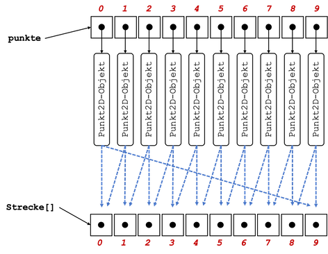

Übungen¶
Übungsbl√§tter (wochenweise)¶
Übung 0
- Installieren Sie sich - falls noch nicht geschehen - eine Java-Entwicklungsumgebung (siehe Java).
- Installieren Sie sich die IDE Ihrer Wahl (siehe IDE). In den Vorlesungen und Übungen verwende ich Eclipse und beschreibe die Schritte auch für Eclipse.
- Starten Sie Eclipse durch Doppelklick auf das Programmsymbol.
- Erstellen Sie einen Workspace (Arbeitsbereich) in einem gewuÃànschten Ordner (z. B.
Prog1) im Dateisystem. Achten Sie darauf, dass Sie Schreibrechte in diesem Ordner besitzen. - Anlegen eines Projektordners:
- Auswahl im Menü
File-->New-->Java Project. - Eingabe des
Project name:Name des Projektes (z.B.WiSe23). Klicken auf den ButtonFinish. - Das Fenster
New module-info.javakönnen Sie einfach mitCreatebestätigen.
- Auswahl im Menü
- Erstellen eines neuen Packages (Paketes):
- Öffnen der Projektmappe im
Package Explorer. - Auswahl des Ordners
srcmit der rechten Maustaste. - Auswahl des Menüpunktes
New --> Package. - Geben Sie folgenden Paketnamen ein (Paketnamen werden kleingeschrieben)
uebungen.uebung0(Achten Sie auf den Punkt und dass Sie alles zusammen schreiben).
- Öffnen der Projektmappe im
- Erstellen einer neuen Klasse:
- Öffnen der Projektmappe im Package Explorer.
- Auswahl des Paketes (
uebungen.uebung0) mit der rechten Maustaste. - Auswahl des MenuÃàpunktes
New --> Class. - Eingabe des Namens, der gleichzeitig der Klassen- und Dateiname ist:
Uebung0. Klassennamen werden immer groß geschrieben. - Setzen des Häkchens bei
public static void main(). (Sollten Sie vergessen haben, das Häkchen zu setzen, dann ist die Klasse, nachdem SieFinishgedrückt haben, leer. Setzen Sie dann den Cursor zwischen die beiden geschweiften Klammern{ }, geben dannmainein und drücken die Ctrl+Leer-Tasten und anschließend Enter. Dann erscheint diemain()-Methode) - Klicken auf den Button
Finish.
- In die
main()-Methode (zwischen die geschweiften Klammern{und}geben Sie ein:System.out.println("Uebung 0"));. - Drücken Sie dann entweder auf den
 -Button oder wählen Sie aus dem Menü
-Button oder wählen Sie aus dem Menü Run --> Runoder drücken Sie shift+command+f11. In derConsolein Ihrer IDE (in Eclipse unten) erscheintUebung 0.
package uebungen.uebung0;
public class Uebung0
{
public static void main(String[] args)
{
System.out.println("Uebung 0");
}
}

Success
Fertig! Ihre Entwicklungsumgebung ist bereit! Wir können loslegen. 
Übung 1
- Erstellen Sie ein package
uebungen.uebung1. - Erstellen Sie in diesem package eine Klasse
Uebung1mitmain()-Methode. - Deklarieren und initialisieren Sie in der
main()-Methode jeweils eine Variable mit dem Datentypint,long,char,byte,short,float,double,booleanundString. Geben Sie alle Werte einzeln durch Aufruf derprintln()-Methode aus. Erzeugen Sie dabei folgende Ausgabe (Werte nur Beispiele):Wert vom Typ int : 123 Wert vom Typ long : 456789 Wert vom Typ char : a Wert vom Typ byte : 127 Wert vom Typ short : 32767 Wert vom Typ float : 4.23 Wert vom Typ double : 6.98 Wert vom Typ boolean : true Wert vom Typ String : Hallo! - Setzen Sie den Wert Ihrer
int-Variablen auf2147483647. Geben Sie den Wert auf der Konsole aus, z.B.:
Erhöhen Sie nun den Wert der Variablen umWert von i : 21474836471und geben Sie den Wert erneut aus. Was passiert? Warum? - Wiederholen Sie das gleiche mit einer
long-Variablen. - Weisen Sie Ihrer
char-Variablen den Wert65zu. Geben Sie den Wert Ihrerchar-Variablen aus. Was passiert? Warum? -
Gegeben ist die folgende Klasse:
public class PrinterClass { public static void main(String[] args) { System.out.print("answer="); System.out.println(40 + 2); } }Was wird auf der Konsole ausgegeben?
a)b)answer=42c)answer= 42answer = 42
Übung 2
- Erstellen Sie ein package
uebungen.uebung2. - Erstellen Sie in diesem package eine Klasse
Uebung2mitmain()-Methode. -
Schreiben Sie eine Methode
Diese Methode soll folgende Ausgabe auf die Konsole erzeugen, z.B. fürpublic static void printIntDivision(int nr1, int nr2) { }printIntDivision(7, 4);die Ausgabez.B. für7 geteilt durch 4 ergibt 1. Es bleibt ein Rest von 3printIntDivision(17, 4);die Ausgabe17 geteilt durch 4 ergibt 4. Es bleibt ein Rest von 1Rufen Sie die Methode entsprechend in der
main()-Methode auf! -
Schreiben Sie zwei Methoden
Deklarieren Sie in der main()-Methode zwei int-Variablen und weisen Sie diesen Werte zu (z.B.public static int getQuotient(int nr1, int nr2) {} // und public static int getRemainder(int nr1, int nr2) {}17und4). Wenden Sie die beiden Methoden so an, dass mit Hilfe derprintln()-Methode folgende Ausgaben erscheinen:17/4 = 4 17 mod 4 = 1 -
Besitzen die folgende Methodenaufrufe einem Wert? Wenn ja, welcher?
printIntDivision(17, 4);
-
getQuotient(17,4); -
getRemainder(17,4); -
Können wir die Methoden
getQuotient(int nr1, int nr2)undgetRemainder(int nr1, int nr2)auch in derprintIntDivision(int nr1, int nr2)-Methode verwenden/aufrufen? Wenn ja, wie?
Übung 3
- Erstellen Sie ein package
uebungen.uebung3. - Erstellen Sie in diesem package eine Klasse
Uebung3mitmain()-Methode. -
Schreiben Sie eine Methode
public static void printTimesTables(int nr1, int nr2). Bei Aufruf der Methode z.B. fürprintTimesTables(10,10);soll das kleine Ein-Mal-Eins in der folgenden Form ausgegeben werden:Ausgabe für printTimesTables(10,10);
1 * 1 = 1 1 * 2 = 2 1 * 3 = 3 1 * 4 = 4 1 * 5 = 5 1 * 6 = 6 1 * 7 = 7 1 * 8 = 8 1 * 9 = 9 1 * 10 = 10 2 * 1 = 2 2 * 2 = 4 2 * 3 = 6 2 * 4 = 8 2 * 5 = 10 2 * 6 = 12 2 * 7 = 14 2 * 8 = 16 2 * 9 = 18 2 * 10 = 20 3 * 1 = 3 3 * 2 = 6 3 * 3 = 9 3 * 4 = 12 3 * 5 = 15 3 * 6 = 18 3 * 7 = 21 3 * 8 = 24 3 * 9 = 27 3 * 10 = 30 4 * 1 = 4 4 * 2 = 8 4 * 3 = 12 4 * 4 = 16 4 * 5 = 20 4 * 6 = 24 4 * 7 = 28 4 * 8 = 32 4 * 9 = 36 4 * 10 = 40 5 * 1 = 5 5 * 2 = 10 5 * 3 = 15 5 * 4 = 20 5 * 5 = 25 5 * 6 = 30 5 * 7 = 35 5 * 8 = 40 5 * 9 = 45 5 * 10 = 50 6 * 1 = 6 6 * 2 = 12 6 * 3 = 18 6 * 4 = 24 6 * 5 = 30 6 * 6 = 36 6 * 7 = 42 6 * 8 = 48 6 * 9 = 54 6 * 10 = 60 7 * 1 = 7 7 * 2 = 14 7 * 3 = 21 7 * 4 = 28 7 * 5 = 35 7 * 6 = 42 7 * 7 = 49 7 * 8 = 56 7 * 9 = 63 7 * 10 = 70 8 * 1 = 8 8 * 2 = 16 8 * 3 = 24 8 * 4 = 32 8 * 5 = 40 8 * 6 = 48 8 * 7 = 56 8 * 8 = 64 8 * 9 = 72 8 * 10 = 80 9 * 1 = 9 9 * 2 = 18 9 * 3 = 27 9 * 4 = 36 9 * 5 = 45 9 * 6 = 54 9 * 7 = 63 9 * 8 = 72 9 * 9 = 81 9 * 10 = 90 10 * 1 = 10 10 * 2 = 20 10 * 3 = 30 10 * 4 = 40 10 * 5 = 50 10 * 6 = 60 10 * 7 = 70 10 * 8 = 80 10 * 9 = 90 10 * 10 = 100 -
Schreiben Sie eine Methode
public static void printTimesMatrix(int nr1, int nr2). Bei Aufruf der Methode z.B. für printTimesMatrix(10,10) soll das kleine Ein-Mal-Eins in der folgenden Form ausgegeben werden:Ausgabe für printTimesMatrix(10,10);
1 2 3 4 5 6 7 8 9 10 2 4 6 8 10 12 14 16 18 20 3 6 9 12 15 18 21 24 27 30 4 8 12 16 20 24 28 32 36 40 5 10 15 20 25 30 35 40 45 50 6 12 18 24 30 36 42 48 54 60 7 14 21 28 35 42 49 56 63 70 8 16 24 32 40 48 56 64 72 80 9 18 27 36 45 54 63 72 81 90 10 20 30 40 50 60 70 80 90 100 -
Schreiben Sie eine Methode
public static void printTriangleUp(int height). Bei Aufruf der Methode z.B. fürprintTriangleUp(7)soll folgende Ausgabe erscheinen:******* ****** ***** **** *** ** * -
Geben Sie alle möglichen Kombinationen für 3 ganze Zahlen
x,yundzaus, für die gilt:x <= y <= z und x * y * z = 36
Genügt bis hierher. Ab hier Zusatz nur für diejenigen, die bereits früher fertig sind.
-
Zusatz Schreiben Sie eine Umrechnung für eine gegebene Anzahl von Sekunden (
printSeconds(int seconds)), z.B.printSeconds(3456789):Aber z.B.3456789 Sekunden sind 40 Tage, 13 Minuten, 9 Sekunden.printSeconds(2345678):Aber z.B.2345678 Sekunden sind 27 Tage, 3 Stunden, 34 Minuten, 38 Sekunden.printSeconds(123456):Aber z.B.123456 Sekunden sind 1 Tag, 10 Stunden, 17 Minuten, 36 Sekunden.printSeconds(12345):12345 Sekunden sind 3 Stunden, 25 Minuten, 45 Sekunden. - Zusatz Schreiben Sie eine Methode, die für eine natürliche Zahl deren Quersumme ausgibt, z.B.:
crossSum(12345678)Die Quersumme von 12345678 ist 36.
Übung 4
- Erstellen Sie ein package
uebungen.uebung4. - Erstellen Sie in diesem package eine Klasse
Uebung4mitmain()-Methode. - Implementieren Sie folgende Methoden:
public static int inputInt()– in dieser Methode wird über die Konsole eineint-Zahl eingelesen. Diese Zahl wird von der Methode zurückgegeben. Zur Eingabe von Zahlen über die Konsole siehe Klasse Scanner.public static boolean isPrime(int number)– diese Methode prüft, ob die als Parameter übergebenenumbereine Primzahl ist. Die Methode gibt eintruezurück, wennnumbereine Primzahl ist undfalsesonst.public static void printPrimeNumbers(int maximum)– diese Methode gibt alle Primzahlen von 1 bis einschließlichmaximumwie folgt auf der Konsole aus (Bsp. fürmaximum=61):d.h. es werden die Zahlen, die Primzahlen sind, ausgegeben und für die anderen Zahlen erscheint nur ein Punkt. Verwenden Sie in der MethodeZahl : 61 .2 3 .5 .7 ...11 .13 ...17 .19 ...23 .....29 .31 .....37 ...41 .43 ...47 .....53 .....59 .61printPrimenumbers(int)die MethodeisPrime(int).public static int getSmallestDivider(int number)– diese Methode gibt den kleinsten Teiler zurück, dernumberganzzahlig teilt. Istnumbereine Primzahl, wirdnumberzurückgegeben. Für den Fall, dassnumberkleiner als2ist, geben Sie ebenfallsnumberzurück.public static String createStringOfPrimeFactorization(int number)– diese Methode gibt einen String in folgender Form zurück (Bsp. fürnumber=632060):d.h. alle kleinsten Teiler werden mit dem Multiplikationszeichen verbunden und am Ende erscheint" 2 * 2 * 5 * 11 * 13 * 13 * 17 = 632060 "= Wert von number.- Testen Sie alle Methoden. Rufen Sie insbesondere
inputInt(),printPrimenumbers(int)undcreateStringOfPrimeFactorization(int)in dermain()-Methode auf.
- Tipp: Bei der Überprüfung, ob
numbereine Primzahl ist, genügt es, Teiler bis zur Wurzel vonnumberzu suchen. Werden bis dahin keine Teiler gefunden, istnumbereine Primzahl. Sie können sich dazu z.B. eine Variable der Formint bound = (int) Math.sqrt(number);erstellen und müssen dann den Teiler nur bisboundsuchen (der Typkonvertierungsoperator(int)macht aus derdouble-Zahl einenint- schneidet die Nachkommastellen ab).
Übung 5
- Erstellen Sie ein package
uebungen.uebung5. - Erstellen Sie in diesem package eine Klasse
Konto(ohnemain()-Methode!) - Erstellen Sie in diesem package eine Klasse
Testklassemitmain()-Methode - Erstellen Sie in der Klasse
Kontozwei Objektvariablenguthabenvom Typdouble→ nur in der Klasse sichtbar!pinvom Typint→ ebenfalls nur in der Klasse sichtbar!
- Erstellen Sie in der Klasse
Kontoeinen Konstruktor fürKonto- diesem Konstruktor wird als Parameter
int pPinübergeben - mit dem Wert des Parameters wird innerhalb des Konstruktors der Wert von
pininitialisiert - Initialisieren Sie im Konstruktor auch die Objektvariable
guthaben. Sie bekommt den Wert0.0(hierfür haben wir also keinen Parameter, wir setzen den initialen Wert einfach generell auf0.0)
- diesem Konstruktor wird als Parameter
- Erstellen Sie in der Klasse
Kontoeine Objektmethodeeinzahlen(double betrag)- diese Objektmethode ist
publicund gibt nichts zurück - in dieser Methode wird der Wert der Objektvariablen
guthabenum den Wert vonbetragerhöht - erzeugen Sie in dieser Methode außerdem eine Ausgabe in der Form:
falls der
Es wurden 100,00 Euro eingezahlt.betragden Wert100.0hatte. Verwenden Sie am besten dieprintf()-Methode, um stets genau 2 Stellen nach dem Komma des Betrages auszugeben (siehe hier).
- diese Objektmethode ist
- Geben Sie in der
main()-Methode derTestklasseein:und führen Sie dieKonto k1 = new Konto(1234); k1.einzahlen(100.0); k1.einzahlen(50.0); k1.einzahlen(150.0);Testklasseaus. Es sollten folgende Ausgaben erzeugt werden:Es wurden 100,00 Euro eingezahlt. Es wurden 50,00 Euro eingezahlt. Es wurden 150,00 Euro eingezahlt. - Erstellen Sie in der Klasse
Kontoeine Objektmethodekontoauszug(int pPin)- diese Objektmethode ist
publicund gibt nichts zurück - einen
kontoauszug(int pPin)können Sie nur "ziehen", wenn der Parameterwert vonpPinmit dem Wert der Objektvariablenpinübereinstimmt - wird der richtige Wert für die
pinübergeben, geben Sie dasguthabenin der folgenden Form aus:fallsIhr aktuelles Guthaben betraegt 300,00 Euro.guthabenden Wert von300.0hat. - wird ein falscher Wert für die
pinübergeben, geben Sie folgende Ausgabe aus:Falsche PIN!
- diese Objektmethode ist
- Erweitern Sie die
main()-Methode der Testklasse um folgende Anweisungen:und führen Sie diek1.kontoauszug(1235); // Falsche PIN! k1.kontoauszug(1234);Testklasseaus. Es sollten folgende (weitere) Ausgaben erzeugt werden:Falsche PIN! Ihr aktuelles Guthaben betraegt 300,00 Euro. - Erstellen Sie in der Klasse
Kontoeine Objektmethodeauszahlen(int pPin, double betrag)- diese Objektmethode ist
publicund gibt nichts zurück - es kann nur etwas ausgezahlt werden, wenn der Parameterwert von
pPinmit dem Wert der Objektvariablenpinübereinstimmt - stimmen die Werte nicht überein, geben Sie erneut
aus.
Falsche PIN! - stimmt der
pin-Wert, dann müssen Sie prüfen, ob dasguthabenreicht, umbetragauszuzahlen. Ist nicht genugguthabenvorhanden, dann geben Sie ausfallsIhr Guthaben reicht nicht, um 400,00 Euro auszuzahlen.betragden Wert400.0hatte. - wenn der
pin-Wert stimmt und genugguthabenvorhanden ist, um denbetragauszuzahlen, dann reduzieren Sieguthabenum den entsprechendenbetragund geben ausfalls derEs wurden 100,00 Euro ausgezahlt.betragden Wert100.0hatte.
- diese Objektmethode ist
- Erweitern Sie die
main()-Methode der Testklasse um folgende Anweisungen:und führen Sie diek1.auszahlen(1235, 100.0); // Falsche PIN! k1.auszahlen(1234, 100.0); k1.kontoauszug(1234); k1.auszahlen(1234, 300.0); // Guthaben reicht nicht k1.auszahlen(1234, 200.0); k1.kontoauszug(1234);Testklasseaus. Es sollten folgende (weitere) Ausgaben erzeugt werden:Falsche PIN! Es wurden 100,00 Euro ausgezahlt. Ihr aktuelles Guthaben betraegt 200,00 Euro. Ihr Guthaben reicht nicht, um 300,00 Euro auszuzahlen. Es wurden 200,00 Euro ausgezahlt. Ihr aktuelles Guthaben betraegt 0,00 Euro. - Zusatz:
- Erweitern Sie die Klasse um eine weitere Objektvariable
private double dispogrenze - Initialisieren Sie diese Variable innerhalb des Konstruktors (ohne weiteren Parmeter) auf den Wert
-1000.0. Sie dürfen somit Ihr Konto um1000.00 Euroüberziehen. - Passen Sie die
auszahlen()-Methode entsprechend an, so dass es auch möglich ist, einenbetragauszuzahlen, so lange man nicht unter diedispogrenzefällt. - Erstellen Sie eine Methode
public void zinsenZahlen().- Erstellen Sie in dieser Methode zwei Konstanten
DISPOZINSENvom Typdoublebekommt den Wert12.0(soll12%entsprechen) undGUTHABENZINSENvom Typdoublebekommt den Wert0.5(soll0.5%entsprechen)
- Berechnen Sie innerhalb der Methode die Zinsen für das Konto
DISPOZINSENwerden fällig (werden vonguthabenabgezogen), fallsguthabennegativ istGUTHABENZINSENwerden gewährt (werden zuguthabenaddiert), fallsguthabenpositiv ist- passen Sie den Wert von
guthabenentsprechend an - erzeugen Sie entsprechende Ausgaben, z.B.
bzw.
Ihnen wurden 18,00 Euro Zinsen abgebucht.Ihnen wurden 4,16 Euro Zinsen gutgeschrieben.
- Erstellen Sie in dieser Methode zwei Konstanten
- Angenommen, die gesamte
main()-Methode sieht jetzt so aus:dann sollten Sie folgende Ausgabe erzeugen (gilt nur für Zusatz!):public static void main(String[] args) { Konto k1 = new Konto(1234); k1.einzahlen(100.0); k1.einzahlen(50.0); k1.einzahlen(150.0); k1.kontoauszug(1235); // Falsche PIN! k1.kontoauszug(1234); k1.auszahlen(1235, 100.0); // Falsche PIN! k1.auszahlen(1234, 100.0); k1.kontoauszug(1234); k1.auszahlen(1234, 300.0); k1.auszahlen(1234, 200.0); k1.kontoauszug(1234); k1.einzahlen(150.0); k1.kontoauszug(1234); k1.zinsenZahlen(); k1.kontoauszug(1234); k1.einzahlen(1000.0); k1.kontoauszug(1234); k1.zinsenZahlen(); k1.kontoauszug(1234); }Es wurden 100,00 Euro eingezahlt. Es wurden 50,00 Euro eingezahlt. Es wurden 150,00 Euro eingezahlt. Falsche PIN! Ihr aktuelles Guthaben betraegt 300,00 Euro. Falsche PIN! Es wurden 100,00 Euro ausgezahlt. Ihr aktuelles Guthaben betraegt 200,00 Euro. Es wurden 300,00 Euro ausgezahlt. Es wurden 200,00 Euro ausgezahlt. Ihr aktuelles Guthaben betraegt -300,00 Euro. Es wurden 150,00 Euro eingezahlt. Ihr aktuelles Guthaben betraegt -150,00 Euro. Ihnen wurden 18,00 Euro Zinsen abgebucht. Ihr aktuelles Guthaben betraegt -168,00 Euro. Es wurden 1000,00 Euro eingezahlt. Ihr aktuelles Guthaben betraegt 832,00 Euro. Ihnen wurden 4,16 Euro Zinsen gutgeschrieben. Ihr aktuelles Guthaben betraegt 836,16 Euro.
- Erweitern Sie die Klasse um eine weitere Objektvariable
Übung 6
- Erstellen Sie ein package
uebungen.uebung6. - Erstellen Sie in diesem package eine Klasse
Rectangle(ohnemain()-Methode!) - Erstellen Sie in diesem package eine Klasse
Testklassemitmain()-Methode - Erstellen Sie in der Klasse
Rectanglezwei Objektvariablenavom Typint→ nur in der Klasse sichtbar!bvom Typint→ ebenfalls nur in der Klasse sichtbar!aundbsollen die Seiten des Rechtecks sein.
- Implementieren Sie einen parameterlosen Konstruktor
Rectangle(), der für die Seiteaden Wert10und für die Seitebden Wert20setzt. - Implementieren Sie einen parametrisierten Konstruktor
Rectangle(int a, int b), der die Parameterwerte zum Initialisieren der Seiten verwendet. - Implementieren Sie eine Objektmethode
public int area(), die den Flächeninhalt des Rechtecks zurückgibt. - Implementieren Sie eine Objektmethode
public int perimeter(), die den Umfang des Rechtecks zurückgibt. - Implementieren Sie eine Objektmethode
public String toString(), die einenStringmit allen Informationen des Rechtecks in der folgenden Formzurückgibt.Rectangle : ( a=10, b=20, area=200, perimeter=60 ) - Implementieren Sie eine Objektmethode
public void print(), die den durchtoString()erzeugtenStringauf die Konsole ausgibt. - Geben Sie in der
main()-Methode derTestklasseein:und führen Sie die// Objekte erzeugen Rectangle r1 = new Rectangle(); Rectangle r2 = new Rectangle(12, 18); Rectangle r3 = new Rectangle(40, 5); Rectangle r4 = new Rectangle(20, 10); Rectangle r5 = new Rectangle(11, 21); System.out.printf("%n%n--------------- print()-Methode -----------------%n%n"); r1.print(); r2.print(); r3.print(); r4.print(); r5.print();Testklasseaus. Es sollten folgende Ausgaben erzeugt werden:--------------- print()-Methode ----------------- Rectangle : ( a=10, b=20, area=200, perimeter=60 ) Rectangle : ( a=12, b=18, area=216, perimeter=60 ) Rectangle : ( a=40, b= 5, area=200, perimeter=90 ) Rectangle : ( a=20, b=10, area=200, perimeter=60 ) Rectangle : ( a=11, b=21, area=231, perimeter=64 ) - Implementieren Sie eine Objektmethode
public boolean sidesAreEqual(Rectangle r), die eintruezurückgibt, wenn die Seiten des aufrufenden Objektes gleich den Seiten des Rectanglersind. Beachten Sie, dass das Rechteck auch gedreht noch gleiche Seiten haben soll, alsoa=10, b=20ist nicht nur mita=10, b=20gleich, sondern auch mita=20, b=10. Wenn die Seiten ungleich sind, gibt die Methode einfalsezurück. - Implementieren Sie eine Objektmethode
public boolean areasAreEqual(Rectangle r), die eintruezurückgibt, wenn die Flächeninhalte des aufrufenden Objektes und des Rectanglergleich sind. Ansonstenfalse. - Implementieren Sie eine Objektmethode
public boolean perimetersAreEqual(Rectangle r), die eintruezurückgibt, wenn die Umfänge des aufrufenden Objektes und des Rectanglergleich sind. Ansonstenfalse. - Implementieren Sie eine Objektmethode
public void printComparison(Rectangle r), die die Vergleiche mitrin der unten dargestellten Form ausgibt. Rufen Sie in der Methode die Methodenprint()(odertoString()),sidesAreEqual(),areasAreEqual()undperimetersAreEqual()auf. - Fügen Sie in der
main()-Methode derTestklassefolgende Anweisungen hinzu:und führen Sie dieSystem.out.printf("%n%n---------- printComparison()-Methode ------------%n%n"); r1.printComparison(r2); r1.printComparison(r3); r1.printComparison(r4); r1.printComparison(r5);Testklasseaus. Es sollten folgende zusätzliche Ausgaben erzeugt werden:---------- printComparison()-Methode ------------ this Rectangle : ( a=10, b=20, area=200, perimeter=60 ) the other Rectangle : ( a=12, b=18, area=216, perimeter=60 ) sides are not equal areas are not equal perimeters are equal this Rectangle : ( a=10, b=20, area=200, perimeter=60 ) the other Rectangle : ( a=40, b= 5, area=200, perimeter=90 ) sides are not equal areas are equal perimeters are not equal this Rectangle : ( a=10, b=20, area=200, perimeter=60 ) the other Rectangle : ( a=20, b=10, area=200, perimeter=60 ) sides are equal areas are equal perimeters are equal this Rectangle : ( a=10, b=20, area=200, perimeter=60 ) the other Rectangle : ( a=11, b=21, area=231, perimeter=64 ) sides are not equal areas are not equal perimeters are not equal -
- Implementieren Sie eine Objektmethode
public double diagonal(), die die Länge einer Diagonalen des Rechtecks zurückgibt. - Erweitern Sie die
toString()-Methode um die Ausgabe dieser Länge wie folgt:Rectangle : ( a=10, b=20, area=200, perimeter=60, diagonal=22,361 ) Rectangle : ( a=12, b=18, area=216, perimeter=60, diagonal=21,633 ) Rectangle : ( a=40, b= 5, area=200, perimeter=90, diagonal=40,311 ) Rectangle : ( a=20, b=10, area=200, perimeter=60, diagonal=22,361 ) Rectangle : ( a=11, b=21, area=231, perimeter=64, diagonal=23,707 )
Zusatz:
- Implementieren Sie eine Objektmethode
public void scale(int factor). Diese Methode "skaliert" (vergrößert oder verkleinert) das Rechteck um den Faktorfactor, genauer gesagt, wird der Flächeninhalt um diesen Faktor skaliert (vergrößert oder verkleinert). Die neuen Seiten sollen das gleiche Verhältnis zueinander haben, wie die alten Seiten. Geben Sie die neuen Seitenlängen in der folgenden Form auf die Konsole aus (siehe nächsten Punktmain()). - Fügen Sie in der
main()-Methode derTestklassefolgende Anweisungen hinzu:und führen Sie dieSystem.out.printf("%n%n--------------- scale()-Methode -----------------%n%n"); r1.scale(2); r2.scale(2); r3.scale(2); r4.scale(2); r5.scale(2); r1.scale(10); r2.scale(10); r3.scale(10); r4.scale(10); r5.scale(10);Testklasseaus. Es sollten folgende zusätzliche Ausgaben erzeugt werden:--------------- scale()-Methode ----------------- newArea= 400,00 newA= 14,14 newB= 28,28 check (newA*newB)= 400,00 newArea= 432,00 newA= 16,97 newB= 25,46 check (newA*newB)= 432,00 newArea= 400,00 newA= 56,57 newB= 7,07 check (newA*newB)= 400,00 newArea= 400,00 newA= 28,28 newB= 14,14 check (newA*newB)= 400,00 newArea= 462,00 newA= 15,56 newB= 29,70 check (newA*newB)= 462,00 newArea= 2000,00 newA= 31,62 newB= 63,25 check (newA*newB)=2000,00 newArea= 2160,00 newA= 37,95 newB= 56,92 check (newA*newB)=2160,00 newArea= 2000,00 newA=126,49 newB= 15,81 check (newA*newB)=2000,00 newArea= 2000,00 newA= 63,25 newB= 31,62 check (newA*newB)=2000,00 newArea= 2310,00 newA= 34,79 newB= 66,41 check (newA*newB)=2310,00
- Implementieren Sie eine Objektmethode
Übung 7
Info: Wir erstellen uns zwei neue Datentypen Counter und Clock. Die Idee der Klasse Counter soll sein, einen counter bis zu einem bestimmten limit hochzuzählen. Bevor der counter das limit erreicht, wird er wieder auf 0 gesetzt. Angenommen also das limit ist 60 und der counter hat den aktuellen Wert 59 und soll erhöht werden, dann ist der nächste Wert von counter wieder 0, da das limit erreicht wurde. Die Klasse Clock verwendet zwei Counter-Objekte, eins für hours und das andere für minutes.
- Erstellen Sie ein package
uebungen.uebung7. - Erstellen Sie in diesem package eine Klasse
Counter(ohnemain()-Methode!) - Erstellen Sie in diesem package eine Klasse
Programmklassemitmain()-Methode -
Erstellen Sie in der Klasse
Counterzwei Objektvariablencountervom Typint→ nur in der Klasse sichtbar!limitvom Typint→ ebenfalls nur in der Klasse sichtbar!
-
Erstellen Sie einen parametrisierten Konstruktor
public Counter(int limit), der dencounterauf0initialisiert und daslimitauf den Parameterwert. -
Implementieren Sie eine Methode
public boolean increase(). Diese Methode soll den Wert voncounterum1erhöhen. Es muss jedoch geprüft werden, ob eventuell daslimiterreicht wurde. Sollte dies der Fall sein, wird der Wert voncounterwieder auf0gesetzt. Wird dercountertatsächlich um1erhöht, gibt die Methode eintruezurück, wurde der Wert voncounterjedoch auf0gesetzt, gibt die Methodefalsezurück. Beispiel:-
Angenommen
counterhat den Wert58und daslimitist60. Dann ist der neue Wert voncounter59und die Methode gibttruezurück. -
Angenommen
counterhat den Wert59und daslimitist60. Dann ist der neue Wert voncounter0und die Methode gibtfalsezurück.
-
-
Implementieren Sie eine Methode
public String toString(). Diese Methode gibt den Wert voncounterals zweistelligen String zurück. Beachten Sie- Ist der Wert von
countereinstellig, z.B.5, dann soll der String"05"zurückgegeben werden.
- Ist der Wert von
-
Implementieren Sie eine Methode
public void print(). Diese Methode gibt den aktuellen Wert voncounterunter Verwendung der MethodetoString()auf die Konsole aus. -
Geben Sie in der
main()-Methode derProgrammklasseein:und führen Sie dieSystem.out.printf("%n---------------- Test Counter -----------%n%n"); Counter counter = new Counter(60); for(int i=0; i<120; i++) { counter.increase(); System.out.printf("%3d : ", i); counter.print(); }Testklasseaus. Es sollten folgende Ausgaben erzeugt werden:Ausgabe auf der Konsole
---------------- Test Counter ----------- 0 : 01 1 : 02 2 : 03 3 : 04 4 : 05 5 : 06 6 : 07 7 : 08 8 : 09 9 : 10 10 : 11 11 : 12 12 : 13 13 : 14 14 : 15 15 : 16 16 : 17 17 : 18 18 : 19 19 : 20 20 : 21 21 : 22 22 : 23 23 : 24 24 : 25 25 : 26 26 : 27 27 : 28 28 : 29 29 : 30 30 : 31 31 : 32 32 : 33 33 : 34 34 : 35 35 : 36 36 : 37 37 : 38 38 : 39 39 : 40 40 : 41 41 : 42 42 : 43 43 : 44 44 : 45 45 : 46 46 : 47 47 : 48 48 : 49 49 : 50 50 : 51 51 : 52 52 : 53 53 : 54 54 : 55 55 : 56 56 : 57 57 : 58 58 : 59 59 : 00 60 : 01 61 : 02 62 : 03 63 : 04 64 : 05 65 : 06 66 : 07 67 : 08 68 : 09 69 : 10 70 : 11 71 : 12 72 : 13 73 : 14 74 : 15 75 : 16 76 : 17 77 : 18 78 : 19 79 : 20 80 : 21 81 : 22 82 : 23 83 : 24 84 : 25 85 : 26 86 : 27 87 : 28 88 : 29 89 : 30 90 : 31 91 : 32 92 : 33 93 : 34 94 : 35 95 : 36 96 : 37 97 : 38 98 : 39 99 : 40 100 : 41 101 : 42 102 : 43 103 : 44 104 : 45 105 : 46 106 : 47 107 : 48 108 : 49 109 : 50 110 : 51 111 : 52 112 : 53 113 : 54 114 : 55 115 : 56 116 : 57 117 : 58 118 : 59 119 : 00 -
Erstellen Sie im package eine weitere Klasse
Clock. In der KlasseClockverwenden Sie zweiCounter. Der eineCounterzählt dieminutesund hat daslimit60und der andereCounterzählt diehoursund hat daslimit24. -
In der Klasse
Clockerstellen Sie zwei Objektvariablenminutesundhours, jeweils vom TypCounter(beide nur in der Klasse sichtbar). -
Erstellen Sie einen parameterlosen Konstruktor
public Clock(). Darin erzeugen Sie fürminutesdasCounter-Objekt mit demlimit60und fürhoursdasCounter-Objekt mit demlimit24. -
Implementieren Sie eine Methode
public void increase(). Diese Methode soll den Wert vonminutesum1erhöhen. Sollte jedoch daslimitvonminuteserreicht sein, wird auchhoursum1erhöht. Nutzen Sie dieincrease()-Methode vonCounter! -
Implementieren Sie eine Methode
public String toString(). Diese Methode gibt die Werte vonminutesundhoursin der Formhh:mmals String zurück, also z.B."23:59"oder"01:09". Nutzen Sie dietoString()-Methode vonCounter! -
Implementieren Sie eine Methode
public void print(). Diese Methode gibt den aktuellen Wert vonClockunter Verwendung der MethodetoString()auf die Konsole aus. -
Fügen Sie in der
main()-Methode derProgrammklassefolgende Anweisungen hinzu:und führen Sie dieSystem.out.printf("%n----------------- Test Clock ------------%n%n"); Clock clock = new Clock(); for(int i=0; i<1600; i++) { clock.increase(); if(i%50==0) { System.out.printf("%4d : ", i); clock.print(); } }Programmklasseaus. Es sollten folgende zusätzliche Ausgaben erzeugt werden:Ausgabe auf der Konsole
----------------- Test Clock ------------ 0 : 00:01 50 : 00:51 100 : 01:41 150 : 02:31 200 : 03:21 250 : 04:11 300 : 05:01 350 : 05:51 400 : 06:41 450 : 07:31 500 : 08:21 550 : 09:11 600 : 10:01 650 : 10:51 700 : 11:41 750 : 12:31 800 : 13:21 850 : 14:11 900 : 15:01 950 : 15:51 1000 : 16:41 1050 : 17:31 1100 : 18:21 1150 : 19:11 1200 : 20:01 1250 : 20:51 1300 : 21:41 1350 : 22:31 1400 : 23:21 1450 : 00:11 1500 : 01:01 1550 : 01:51
Übung 8
- Erstellen Sie ein package
uebungen.uebung8. - Erstellen Sie in diesem package eine Klasse
Uebung8mitmain()-Methode. -
Implementieren Sie eine
public static void print(char[] ca)-Methode, so dass daschar[] caauf die Konsole ausgegeben wird. Achten Sie darauf, dass hinter dem letzten Element kein Komma steht. Testen Sie Ihre Methode auch für ein leeres Array.
Bsp:print(['a', 'b', 'c', 'a', 'c', 'a', 'b', 'c'])
Ausgabe auf Konsole:[a, b, c, a, c, a, b, c] -
Kopieren Sie die
print-Methode vollständig und ändern Sie den Typ des Parameters vonchar[]inint[]. (Die Methode ist jetzt überladen undprint()kann jetzt entweder einchar[]oder einint[]übergeben werden, welches auf die Konsole ausgegeben wird.) -
Implementieren Sie eine Methode
public static char[] stringToCharArray(String s). Diese Methode wandelt einenStringin einchar[]um, so dass jedes Zeichen des Strings imchar[]enthalten ist. Daschar[]wird zurückgegeben. Tipps: die Länge eines Strings wird mit der Objektmethodelength()ermittelt. Die einzelnen Zeichen eines Strings können mithilfe dercharAt(index)-Objektmethode von Strings ermittelt werden. Siehe String
Bsp.:stringToCharArray("hallo!")→['h','a','l','l','o','!'] -
Implementieren Sie eine Methode
public static int[] minAndMax(int[] iarr), der einint-Array als Parameter übergeben wird und die ein zweielementiges Array zurückgibt. Das erste Element des zurückgegeben Arrays ist das Minimum des als Parameter übergebenen Arrays und das zweite Element ist das Maximum.
Bsp.:minAndMax([4,2,8,1,6,2,4,1,8])→[1,8]
minAndMax([4])→[4,4] -
Implementieren Sie eine Methode
public static int[] reverse(int[] iarr), der einint-Array übergeben wird und die die Reihenfolge der Elemente des Arrays umdreht (das letzte zuerst usw.) Das neuerstellte Array wird zurückgegeben.
Bsp.:reverse([4,2,8,1,6,2,4,1,8])→[8,1,4,2,6,1,8,2,4]
reverse([4])→[4] -
Zusatz:
- Implementieren Sie eine Methode
public static char[] filter(char[] carr, char filter), der als Parameter einchar-Array und eincharübergeben wird. Die Methode soll einchar-Array zurückgeben, das dem als Parameter übergeben Array entspricht, außer dass jedes Vorkommen des als Parameter übergebencarrentfernt wurde
Bsp:filter(['a', 'b', 'c', 'a', 'c', 'a', 'b', 'c'], 'c')→['a', 'b', 'a', 'a', 'b'] - Implementieren Sie eine Methode
public static boolean containsDoublets(char[] ca)die eintruezurückgibt, wenn mindestens ein Wert incamindestens zwei Mal vorkommt (wenn Sie schon dabei sind, können Sie sich auch überlegen, wenn genau ein Wert genau zwei Mal vorkommt - oder mindestens ein Wert genau zwei Mal - oder genau ein Wert mindestens zwei Mal) undfalsesonst.
- Implementieren Sie eine Methode
Übung 9
- Übung 9 vertieft das Verständnis von Programmabläufen, Methodenaufrufen und Algorithmen.
- Walk-throughs und Multiple-choice-Aufgaben.
Übung 10
- Erstellen Sie ein package
uebungen.uebung10. - Erstellen Sie in diesem package eine Klasse
Uebung10mitmain()-Methode. -
Vorabinformation:
-
Wir implementieren Würfe eines Würfels. Alle Würfe werden in einem Array
statisticsgespeichert. Das Array hat die Länge 6 und beschreibt, wie oft eine 1, wie oft eine 2, ..., wie oft eine 6 gewürfelt wurde.
-
-
Erstellen Sie sich in der
main()-Methode zunächst dasstatistics-Array. Alle Elemente des Arrays sind vom Typintund es hat die Länge6. -
Implementieren Sie folgende Methoden:
-
Implementieren Sie eine
public static int throwDice()-Methode, die eine Zufallszahl aus dem Wertebereich[1, ... , 6]erzeugt und zurückgibt. -
Implementieren Sie eine Methode
public static void printThrow(int cast), die den Wert des übergebenen Wurfes (cast) wie folgt ausgibt (Beispielcast==5):Es wurde eine 5 gewuerfelt -
Testen Sie beide Methoden, indem Sie in der
main()-Methode eingeben:System.out.printf("%n%n------------------- Test throwDice and printThrow -------------------%n%n"); for(int index=0; index<10; index++) { int cast = throwDice(); printThrow(cast); }Sie sollten eine Ausgabe in folgender Form bekommen (Zufallszahlen):
------------------- Test throwDice and printThrow ------------------- Es wurde eine 5 gewuerfelt Es wurde eine 4 gewuerfelt Es wurde eine 6 gewuerfelt Es wurde eine 5 gewuerfelt Es wurde eine 3 gewuerfelt Es wurde eine 4 gewuerfelt Es wurde eine 1 gewuerfelt Es wurde eine 5 gewuerfelt Es wurde eine 6 gewuerfelt Es wurde eine 6 gewuerfelt -
Implementieren Sie eine Methode
public static void insertIntoStatistics(int[] statistics, int cast). Dasstatistics-Array wird als Parameter übergeben und auch der gewürfeltecast. Imstatistics-Array wird der Wert an der Stelle um1erhöht, der dem Wurfcastentspricht. D.h. wurde eine1gewürfelt, wird der Wert im Index0um1erhöht, wurde eine2gewürfelt, der Wert im Index1usw. (siehe auch oben die Abbildung zustatistics) -
Implementieren Sie eine Methode
public static void printStatistics(int[] statistics), die dasstatistics-Array wie folgt auf die Konsole ausgibt.Angenommen, das
statistics-Array ist so befüllt:[ 3,8,4,5,8,2 ], dann ist die Ausgabe auf der Konsole:[ (3 x 1), (8 x 2), (4 x 3), (5 x 4), (8 x 5), (2 x 6) ] -
Testen Sie beide Methoden, indem Sie in der
main()-Methode eingeben:System.out.printf("%n%n------------------ Test insert- and printStatistics -----------------%n%n"); for(int index=0; index<100; index++) { int cast = throwDice(); insertIntoStatistics(statistics, cast); } printStatistics(statistics);Es wird angenommen, dass Sie das
statistics-Array bereits gleich am Anfang in dermain()erzeugt haben - wenn nicht, können Sie das auch hier machen.Sie sollten eine Ausgabe in folgender Form bekommen (Zufallszahlen):
------------------ Test insert- and printStatistics ----------------- [ (20 x 1), (13 x 2), (16 x 3), (15 x 4), (19 x 5), (17 x 6) ] -
Implementieren Sie eine Methode
public static int sumOfStatistics(int[] statistics), die eine Summe über alle Werte imstatistics-Array wie folgt berechnet:Beispiel: Angenommen, das Array ist so befüllt:
[ 3,8,4,5,8,2 ], dann ist die Summe:3x1 + 8x2 + 4x3 + 5x4 + 8x5 + 2x6 = 3 + 16 + 12 + 20 + 40 + 12 = 103. Die Summe103wird zurückgegeben. -
Testen Sie die Methode, indem Sie in der
main()-Methode eingeben:System.out.printf("%n%n--------------------- Test sumOfStatistics --------------------------%n%n"); printStatistics(statistics); int sumTest = sumOfStatistics(statistics); System.out.println("Summe = " + sumTest);Das
statistics-Array ist ja bereits oben befüllt worden, das müssen wir hier also nicht mehr machen. Sie sollten eine Ausgabe in folgender Form bekommen (Zufallszahlen):--------------------- Test sumOfStatistics -------------------------- [ (14 x 1), (15 x 2), (11 x 3), (16 x 4), (27 x 5), (17 x 6) ] Summe = 378 -
Zusatz: Implementieren Sie eine Methode
public static int throwDiceUntilTarget(int target, int[] statistics), die so lange einen Würfel würfelt, bis als Summe der Augen dastargeterreicht ist. Die Anzahl der Würfe wird zurückgegeben. In dieser Methode erfolgen folgende Aufrufe:- nach jedem Wurf (
throwDice()) wird der Wurf ausgegeben (printThrow()) - jeder Wurf wird in das
statistics-Array eingetragen (insertIntoStatistics()) - nach jedem Wurf wird die Summme aller Augen aller bisherigen Würfe ermittelt (
sumOfStatistics()). - so lange die Summe kleiner ist als das
target, wird weiter gewürfelt
- nach jedem Wurf (
-
Testen Sie die Methode, indem Sie in der
main()-Methode eingeben:System.out.printf("%n%n------------------- Test throwDiceUntilTarget -----------------------%n%n"); statistics = new int[6]; // altes Array war schon befuellt final int TARGET = 100; int tries = throwDiceUntilTarget(TARGET, statistics); printStatistics(statistics); int sum = sumOfStatistics(statistics); System.out.println("Es wurden " + tries + " Versuche benötigt, um " + sum + " Punkte zu erzielen.");Da das
statistics-Array zuvor bereits befüllt war, erstellen wir es für das Testen dieser Methode nochmal neu. Sie sollten eine Ausgabe in folgender Form bekommen (Zufallszahlen):------------------- Test throwDiceUntilTarget ----------------------- Es wurde eine 5 gewuerfelt Es wurde eine 1 gewuerfelt Es wurde eine 5 gewuerfelt Es wurde eine 3 gewuerfelt Es wurde eine 5 gewuerfelt Es wurde eine 2 gewuerfelt Es wurde eine 5 gewuerfelt Es wurde eine 3 gewuerfelt Es wurde eine 4 gewuerfelt Es wurde eine 3 gewuerfelt Es wurde eine 3 gewuerfelt Es wurde eine 3 gewuerfelt Es wurde eine 1 gewuerfelt Es wurde eine 1 gewuerfelt Es wurde eine 2 gewuerfelt Es wurde eine 3 gewuerfelt Es wurde eine 6 gewuerfelt Es wurde eine 3 gewuerfelt Es wurde eine 3 gewuerfelt Es wurde eine 2 gewuerfelt Es wurde eine 3 gewuerfelt Es wurde eine 2 gewuerfelt Es wurde eine 6 gewuerfelt Es wurde eine 4 gewuerfelt Es wurde eine 3 gewuerfelt Es wurde eine 1 gewuerfelt Es wurde eine 4 gewuerfelt Es wurde eine 3 gewuerfelt Es wurde eine 4 gewuerfelt Es wurde eine 1 gewuerfelt Es wurde eine 6 gewuerfelt [ (5 x 1), (4 x 2), (11 x 3), (4 x 4), (4 x 5), (3 x 6) ] Es wurden 31 Versuche benötigt, um 100 Punkte zu erzielen.Es muss das
targetnicht exakt getroffen werden, das ist Zufall. Es stoppt, sobald100oder mehr Punkte erreicht wurden.
-
Übung 11
Übung 12
- Erstellen Sie ein package
uebungen.uebung12. -
Erstellen Sie in diesem package eine Klasse
Lotterymit- der privaten Objektvariablen
drawingResultsvom Typint[]. -
Information: Lottery steht für eine Lotterie, bei der aus 9 Zahlen (1..9) 5 Zahlen zufällig gelost werden (5 aus 9). Das Array
drawingResultsdient zum Speichern der gezogenen 5 Zahlen. -
Schreiben Sie für die Klasse
Lotteryeinen parameterlosen Konstruktor. In diesem Konstruktor wird das ArraydrawingResultsmit der Länge 5 erzeugt. - Schreiben Sie eine Objektmethode
contains(int number). Diese Methode gibt eintruezurück, wennnumberindrawingResultsenthalten ist undfalsesonst. - Schreiben Sie eine Objektmethode
drawing(). In dieser Methode werden die 5 Zufallszahlen gezogen (5 aus 9). Sie benötigen dafür ein Objekt der KlasseRandom(Randommuss ausjava.utilimportiert werden). „Ziehen“ Sie nun zufällig 5 Zufallszahlen aus dem Bereich1..9(1 und 9 inklusive) und speichern Sie diese im ArraydrawingResults.
Achtung: Die gleiche Zahl darf nicht doppelt gezogen (gespeichert) werden! D.h. die 5 im Array gespeicherten Zufallszahlen müssen sich voneinander unterscheiden! -
Schreiben Sie eine Objektmethode
sort(). Diese Methode sortiert das ArraydrawingResultsaufsteigend (von klein nach groß). -
Überschreiben Sie die Objektmethode
toString(), die dasdrawingResult-Array alsStringin folgender Form zurückgibt (Beispielwerte für den Fall, dass1, 3, 5, 6, 7gezogen wurden):( 1 - 3 - 5 6 7 - - )- das
dawingResult-Array wird zunächst sortiert - ist die Zahl im Array enthalten, wird sie als Wert angezeigt
- ist die Zahl nicht enthalten, wird ein
-angezeigt - d.h. es werden immer die 5 gezogenen Zahlen ausgegeben und 4 Striche.
- das
-
Schreiben Sie eine Objektmethode
print(), die den vontoString()zurückgegebenenStringauf der Konsole ausgibt. - Überschreiben Sie die Objektmethode
equals(Object o). Diese Methode gibttruezurück, wenn wenn bei dem aufrufenden Objekt die gleichen Zahlen gezogen wurden, wie beio. Sonstfalse(hashCode()muss nicht überschrieben werden).
Tipp: Implementieren Sie die Methode am einfachsten so, dass Sie die beidendrawingResult-Arrays erst sortieren und dann die sortierten Arrays elementweise miteinander vergleichen.
- der privaten Objektvariablen
-
Erstellen Sie im gleichen package eine Klasse
Programmklassemitmain()-Methode.- Erzeugen Sie in der
main()-Methode in einer Schleife10Objekte der KlasseLotteryund rufen (auch in der Schleife) jeweils diedrawing()und dieprint()-Methode auf. Es entsteht folgende Ausgabe (Beispielwerte sind zufällig und unterscheiden sich!):( 1 - 3 - 5 6 7 - - ) ( 1 2 3 - 5 - 7 - - ) ( 1 - 3 - - 6 7 8 - ) ( - - 3 4 5 6 - - 9 ) ( 1 2 3 4 - - - - 9 ) ( 1 2 - 4 - 6 - 8 - ) ( - 2 3 - - - 7 8 9 ) ( 1 2 3 - - 6 - - 9 ) ( 1 - - 4 5 - 7 8 - ) ( - 2 3 - 5 - - 8 9 ) - Erzeugen Sie ein Objekt von
Lotteryund rufen für dieses Objekt diedrawing()-Methode auf. Erzeugen Sie in einer Schleife so lange ein weiteres Objekt vonLotteryund rufen dafür diedrawing()-Methode auf, bis die beiden Objekte die gleichen gezogenen Zahlen enthalten, d.h. lautequals()-Methode gleich sind. Geben Sie dann beide Objekte mithilfe derprint()-Methode aus. Es entsteht folgende Ausgabe (zufällige Beispielwerte):( 1 - 3 - - 6 - 8 9 ) ( 1 - 3 - - 6 - 8 9 )
- Erzeugen Sie in der
Probeklausuren¶
Fahrzeug
- Erstellen Sie ein package
klausurvorbereitung.fahrzeug. -
(Teil 1) Erstellen Sie in diesem package eine Klasse
Fahrzeugmit-
den privaten Objektvariablen
markevom TypString,kmStandvom Typint(AKilometerstand des Fahrzeugs),maxVvom Typint(Höchstgeschwindigkeit des Fahrzeugs) undverbrauchvom Typdouble(AVerbrauch in Litern pro 100km). -
Erstellen Sie für die Klasse
Fahrzeugeinen parametrisierten Konstruktor, dem die Parametermarke,maxVundverbrauchübergeben werden. Mit den Parameterwerten werden die entsprechenden Objektvariablen initialisiert. Die ObjektvariablekmStandwird mit dem Wert0initialisiert. -
Erstellen Sie eine Methode
fahren(). Diese Methode gibt nichts zurück. In dieser Methode wird eine Zufallszahl aus dem Wertebereich0…999erzeugt, also potenziell1000verschiedene Zahlen. Diese Zufallszahl entspricht einer Reise und wird demkmStandhinzuaddiert. -
Erstellen Sie eine Objektmethode
gesamtverbrauch(), die eindoublezurückgibt. In dieser Methode wird der bisherige Gesamtverbrauch ermittelt, d.h. es soll mithilfe vonverbrauch(Liter auf 100 Kilometer) berechnet werden, wieviel für den bisherigenkmStandinsgesamt verbraucht wurde. Beachten Sie, dass Ihnen insbesondere beim Dividieren durch100keine Informationen verloren gehen. -
Erstellen Sie für alle Objektvariablen Getter, also
getMarke(),getKmStand(),getMaxV()undgetVerbrauch(). -
Überschreiben Sie die Methode
toString()so, dass einStringin der folgenden Form zurückgegeben wird (Beispielwerte):B 200km/h 8,5l/100km 13157km 1118,35lBeachten Sie:
Bist die marke des Fahrzeugs. Reservieren Sie- für die Marke 4 Zeichen,
- für die Höchstgeschwindigkeit 3 Zeichen (dann kommt
km/h), - für den Verbrauch insgesamt 4 Zeichen, davon 1 Nachkommastelle (dann kommt
l/100km), - für den Kilometerstand 7 Zeichen (dann kommt
km) und - für den Gesamtverbrauch insgesamt 8 Zeichen, davon 2 Nachkommastellen (dann kommt
l).
-
Erstellen Sie eine Objektmethode
print(), die den vontoString()erzeugtenStringauf die Konsole ausgibt. -
Überschreiben Sie die Methode
equals(Object o)so, dass zwei Fahrzeuge gleich sind, wenn sie dieselbemarkeund denselbenkmStandhaben. -
Erstellen Sie eine
Programmklassemitmain()-Methode. Erzeugen Sie in dermain()-Methode einArray, in dem alle Elemente vom TypFahrzeugsind. DasArraysoll die Länge 4 haben. Befüllen Sie diesesArraymit vier Fahrzeug-Objekten mit den folgenden Werten für die Objektvariablen (marke,maxV,verbrauch):"A", 250, 10.0 "B", 200, 8.5 "C", 160, 6.5 "D", 180, 7.0Geben Sie in einer Schleife alle vier Fahrzeug-Objekte auf die Konsole unter Verwendung der
print()-Methode aus. Es entsteht folgende Ausgabe:A 250km/h 10,0l/100km 0km 0,00l B 200km/h 8,5l/100km 0km 0,00l C 160km/h 6,5l/100km 0km 0,00l D 180km/h 7,0l/100km 0km 0,00l -
Erweitern Sie die
main()-Methode wie folgt: In einer Schleife sollen insgesamt100Fahrten durchgeführt werden. Es wird zufällig ausgewählt, für welches der Fahrzeuge aus dem obigen Array jeweils die Methodefahren()aufgerufen wird.Rufen Sie danach erneut die
print()-Methode in einer Schleife für alle Fahrzeuge aus dem Array auf. Es entsteht folgende Ausgabe (Beispielwerte – zufällig!):A 250km/h 10,0l/100km 11845km 1184,50l B 200km/h 8,5l/100km 13157km 1118,35l C 160km/h 6,5l/100km 11762km 764,53l D 180km/h 7,0l/100km 13465km 942,55l
-
-
(Teil 2)
-
Erstellen Sie eine Klasse
Auto. Diese Klasse erbt vonFahrzeug. Dem Konstruktor werden die ParameterString marke, int maxV, double verbrauchübergeben. -
Erstellen Sie eine Klasse
LKW. Diese Klasse erbt vonFahrzeug. Dem Konstruktor wird nur der Parameterdouble verbrauchübergeben. Diemarkeist bei einemLKWstets"LKW"und die Höchstgeschwindigkeit (maxV) ist stets100. -
Erstellen Sie eine Klasse
Fuhrpark. Objektvariablen sindfuhrparkvom TypFahrzeug[],anzahlvom Typint(Anzahl der Fahrzeuge im Fuhrpark ).
Die Objektvariablen sind nur innerhalb der Klasse sichtbar!
-
Erstellen Sie für die Klasse
Fuhrparkeinen parametrisierten Konstruktor, dem einint-Wertgroesseübergeben wird. Dieser Wert entspricht der Länge des zu erzeugenden Arraysfuhrpark. Der Wert fürgroessesteht also für die maximal mögliche Anzahl von Fahrzeugen im Fuhrpark, während der Wertanzahlfür die tatsächliche Anzahl von Fahrzeugen im Fuhrpark steht. Das Array wird innerhalb des Konstruktors erzeugt. Der Wert füranzahlist bei Objekterzeugung stets 0. -
Erstellen Sie eine Objektmethode
fahrzeugKaufen(). Diese Methode gibt nichts zurück.- In der Methode wird eine Zufallszahl aus dem Wertebereich
50…449erzeugt (also potenziell400verschiedene Zufallszahlen). -
Ist die erzeugte Zufallszahl kleiner oder gleich
250, dann wirdfuhrparkeinAuto-Objekt hinzugefügt.- Die
markedesAuto-Objektes ergibt sich aus dem BuchstabenAgefolgt vom aktuellen Wert vonanzahl, also z.B.A1,A2,A3, … - Der Wert für
maxVentspricht dem Wert der Zufallszahl, - Der Wert für
verbrauchentspricht der Zufallszahl geteilt durch10(achten Sie aber darauf, einedouble-Divsion durchzuführen!)
- Die
-
Ist die erzeugte Zufallszahl größer als
250, dann wirdfuhrparkeinLKW-Objekt hinzugefügt.- Der Wert für
verbrauchentspricht der Zufallszahl geteilt durch10(achten Sie aber darauf, einedouble-Divsion durchzuführen!)
- Der Wert für
-
Durch das Hinzufügen eines Fahrzeugs (
AutooderLKW) erhöht sich der Wert vonanzahlimmer um1.
- In der Methode wird eine Zufallszahl aus dem Wertebereich
-
Erstellen Sie eine Objektmethode
fahrzeugKaufen(Fahrzeug fahrzeug). Diese Methode gibt nichts zurück. In dieser Methode wird dasfahrzeugdemfuhrparkhinzugefügt. Achten Sie darauf, auchanzahlenstprechend zu erhöhen. -
Überschreiben Sie die Methode
toString()so, dass einStringin der folgenden Form zurückgegeben wird (Beispielwerte – nach dem Hinzufügen von 15 Fahrzeugen):Im Fuhrpark sind 15 Fahrzeuge : ----------------------------- LKW 100km/h 26,0l/100km 0km 0,00l LKW 100km/h 32,9l/100km 0km 0,00l A2 201km/h 20,1l/100km 0km 0,00l LKW 100km/h 43,6l/100km 0km 0,00l LKW 100km/h 39,8l/100km 0km 0,00l A5 195km/h 19,5l/100km 0km 0,00l LKW 100km/h 39,2l/100km 0km 0,00l LKW 100km/h 31,3l/100km 0km 0,00l A8 214km/h 21,4l/100km 0km 0,00l A9 155km/h 15,5l/100km 0km 0,00l A10 241km/h 24,1l/100km 0km 0,00l LKW 100km/h 40,2l/100km 0km 0,00l LKW 100km/h 28,5l/100km 0km 0,00l A13 73km/h 7,3l/100km 0km 0,00l LKW 100km/h 35,3l/100km 0km 0,00l ------------------------------ Es erscheint also zunächst
Im Fuhrpark sind 15 Fahrzeuge :, wobei15dem aktuellen Wert vonanzahlentspricht, - dann eine Linie, Länge egal,
- dann kommen alle Fahrzeuge aus dem
fuhrpark-Array, - dann wieder eine Linie, Länge egal.
- Es erscheint also zunächst
-
Erzeugen Sie in der
main()-Methode der Programmklasse ein Objekt von Fuhrpark. Übergeben Sie als Parameterwert die20.- Geben Sie das Fuhrpark-Objekt unter Verwendung der
toString()-Methode auf die Konsole aus. - Rufen Sie für das Fuhrpark-Objekt die Methode
fahrzeugKaufen()in einer Schleife15Mal auf. - Fügen Sie mithilfe der
fahrzeugKaufen(Fahrzeug)-Methode einAutound einenLKWdem Fuhrpark-Objekt hinzu. - Geben Sie danach das Fuhrpark-Objekt erneut auf die Konsole aus.
-
Es entstehen folgende Ausgaben (Beispielwerte):
Im Fuhrpark sind 0 Fahrzeuge : ----------------------------- ----------------------------- Im Fuhrpark sind 17 Fahrzeuge : ----------------------------- LKW 100km/h 26,0l/100km 0km 0,00l LKW 100km/h 32,9l/100km 0km 0,00l A2 201km/h 20,1l/100km 0km 0,00l LKW 100km/h 43,6l/100km 0km 0,00l LKW 100km/h 39,8l/100km 0km 0,00l A5 195km/h 19,5l/100km 0km 0,00l LKW 100km/h 39,2l/100km 0km 0,00l LKW 100km/h 31,3l/100km 0km 0,00l A8 214km/h 21,4l/100km 0km 0,00l A9 155km/h 15,5l/100km 0km 0,00l A10 241km/h 24,1l/100km 0km 0,00l LKW 100km/h 40,2l/100km 0km 0,00l LKW 100km/h 28,5l/100km 0km 0,00l A13 73km/h 7,3l/100km 0km 0,00l LKW 100km/h 35,3l/100km 0km 0,00l B 200km/h 8,5l/100km 0km 0,00l LKW 100km/h 35,5l/100km 0km 0,00l -----------------------------
- Geben Sie das Fuhrpark-Objekt unter Verwendung der
-
Erstellen Sie in der Klasse
Fuhrparkeine ObjektmethodereisenImMonat(int anzahlReisen). Diese Methode gibt nichts zurück. Der Wert des ParametersanzahlReisengibt an, wieviele Fahrten im Fuhrpark durchgeführt werden, d.h. wie oft die Methodefahren()insgesamt aufgerufen wird.Für welches Fahrzeug aus dem Fuhrpark die Methode
fahren()jeweils aufgerufen wird, wird zufällig erzeugt! Achten Sie darauf, die Zufallszahl so zu erzeugen, dass Sie den Wert vonanzahlberücksichtigen! -
Rufen Sie in der
main()-Methode die MethodereisenImMonat(75)für dasFuhrpark-Objekt auf und geben Sie danach dasFuhrpark-Objekt erneut auf die Konsole aus. Es entstehen folgende Ausgaben (Beispielwerte):Im Fuhrpark sind 17 Fahrzeuge : ----------------------------- LKW 100km/h 26,0l/100km 1002km 260,52l LKW 100km/h 32,9l/100km 3964km 1304,16l A2 201km/h 20,1l/100km 4792km 963,19l LKW 100km/h 43,6l/100km 1540km 671,44l LKW 100km/h 39,8l/100km 2720km 1082,56l A5 195km/h 19,5l/100km 1647km 321,17l LKW 100km/h 39,2l/100km 1496km 586,43l LKW 100km/h 31,3l/100km 5086km 1591,92l A8 214km/h 21,4l/100km 1649km 352,89l A9 155km/h 15,5l/100km 1863km 288,77l A10 241km/h 24,1l/100km 2723km 656,24l LKW 100km/h 40,2l/100km 2303km 925,81l LKW 100km/h 28,5l/100km 1031km 293,84l A13 73km/h 7,3l/100km 1455km 106,22l LKW 100km/h 35,3l/100km 2902km 1024,41l B 200km/h 8,5l/100km 2121km 180,29l LKW 100km/h 35,5l/100km 912km 323,76l ----------------------------- -
Erstellen Sie in der Klasse
Fuhrparkeine ObjektmethodealleLKWs(). Diese Methode gibt ein neuesFuhrpark-Objekt zurück. In dem neuenFuhrpark-Objekt werden alle Fahrzeuge aus dem aufrufendenFuhrpark-Objekt übernommen, die vom (Laufzeit-)TypLKWsind. Verwenden Sie dazu die ObjektmethodefahrzeugKaufen(Fahrzeug). -
Rufen Sie in der
main()-Methode die MethodealleLKWs()auf und lassen Sie sich zurückgegebeneFuhrpark-Objekt auf die Konsole ausgeben. Beispielwerte (zufällig):Im Fuhrpark sind 10 Fahrzeuge : ----------------------------- LKW 100km/h 26,0l/100km 1002km 260,52l LKW 100km/h 32,9l/100km 3964km 1304,16l LKW 100km/h 43,6l/100km 1540km 671,44l LKW 100km/h 39,8l/100km 2720km 1082,56l LKW 100km/h 39,2l/100km 1496km 586,43l LKW 100km/h 31,3l/100km 5086km 1591,92l LKW 100km/h 40,2l/100km 2303km 925,81l LKW 100km/h 28,5l/100km 1031km 293,84l LKW 100km/h 35,3l/100km 2902km 1024,41l LKW 100km/h 35,5l/100km 912km 323,76l ----------------------------- -
Erstellen Sie in
Fuhrparkeine ObjektmethodemeistenKm(), die dasFahrzeugaus demfuhrparkzurückgibt, das den höchstenkmStandhat. Sie können davon ausgehen, dass mindestens einFahrzeugimfuhrparkist.Rufen Sie diese Methode in der
main()-Methode auf und geben Sie das Fahrzeug auf der Konsole aus. Beispielwerte:LKW 100km/h 31,3l/100km 5086km 1591,92l -
Erstellen Sie in Fuhrpark eine Objektmethode
hoechsterGesamtverbrauchAuto(), die dasFahrzeugaus demfuhrparkzurückgibt, das bisher den höchsten Gesamtverbrauch hat. Es sollen nur die Objekte vom (Laufzeit-)TypAutobewertet werden! Sie können davon ausgehen, dass mindestens einAutoimfuhrparkist.Rufen Sie diese Methode in der main()-Methode auf und geben Sie das Fahrzeug auf der Konsole aus. Beispielwerte:
A2 201km/h 20,1l/100km 4792km 963,19l -
Erstellen Sie in
Fuhrparkeine ObjektmethodefahrzeugLoeschen(Fahrzeug fahrzeug). Die Methode gibttruezurück, wennfahrzeugaus demfuhrparkgelöscht wurde undfalsesonst.Beachten Sie für den Fall des Löschens, dass alle nachfolgenden Fahrzeuge in
fuhrparkum eine Stelle im Array nach links rücken! Vergessen Sie auch nicht, den Wert vonanzahlfür den Löschfall zu verringern.Rufen Sie diese Methode in der
main()-Methode auf und übergeben Sie einFahrzeug-Objekt, das infuhrparkvorkommt (siehe z.B. oben die beiden Objekte, die mithilfe derfahrzeugKaufen(Fahrzeug)-Methode hinzugefügt wurden). Geben Sie dasFuhrpark-Objekt erneut aus:Im Fuhrpark sind 16 Fahrzeuge : ----------------------------- LKW 100km/h 26,0l/100km 1002km 260,52l LKW 100km/h 32,9l/100km 3964km 1304,16l A2 201km/h 20,1l/100km 4792km 963,19l LKW 100km/h 43,6l/100km 1540km 671,44l LKW 100km/h 39,8l/100km 2720km 1082,56l A5 195km/h 19,5l/100km 1647km 321,17l LKW 100km/h 39,2l/100km 1496km 586,43l LKW 100km/h 31,3l/100km 5086km 1591,92l A8 214km/h 21,4l/100km 1649km 352,89l A9 155km/h 15,5l/100km 1863km 288,77l A10 241km/h 24,1l/100km 2723km 656,24l LKW 100km/h 40,2l/100km 2303km 925,81l LKW 100km/h 28,5l/100km 1031km 293,84l A13 73km/h 7,3l/100km 1455km 106,22l LKW 100km/h 35,3l/100km 2902km 1024,41l LKW 100km/h 35,5l/100km 912km 323,76l -----------------------------
-
-
Zur Kontrolle: Die möglichen Ausgaben (Beispielwerte) könnten sein:
-------------------- Teil 1 ------------------------- A 250km/h 10,0l/100km 0km 0,00l B 200km/h 8,5l/100km 0km 0,00l C 160km/h 6,5l/100km 0km 0,00l D 180km/h 7,0l/100km 0km 0,00l ---- fahren ---- A 250km/h 10,0l/100km 11323km 1132,30l B 200km/h 8,5l/100km 10202km 867,17l C 160km/h 6,5l/100km 10079km 655,14l D 180km/h 7,0l/100km 15939km 1115,73l -------------------- Teil 2 ------------------------- Im Fuhrpark sind 0 Fahrzeuge : ----------------------------- ----------------------------- ---- 15 fahrzeuge kaufen ---- Im Fuhrpark sind 15 Fahrzeuge : ----------------------------- LKW 100km/h 26,0l/100km 0km 0,00l LKW 100km/h 32,9l/100km 0km 0,00l A2 201km/h 20,1l/100km 0km 0,00l LKW 100km/h 43,6l/100km 0km 0,00l LKW 100km/h 39,8l/100km 0km 0,00l A5 195km/h 19,5l/100km 0km 0,00l LKW 100km/h 39,2l/100km 0km 0,00l LKW 100km/h 31,3l/100km 0km 0,00l A8 214km/h 21,4l/100km 0km 0,00l A9 155km/h 15,5l/100km 0km 0,00l A10 241km/h 24,1l/100km 0km 0,00l LKW 100km/h 40,2l/100km 0km 0,00l LKW 100km/h 28,5l/100km 0km 0,00l A13 73km/h 7,3l/100km 0km 0,00l LKW 100km/h 35,3l/100km 0km 0,00l ----------------------------- ---- 2 weitere fahrzeuge kaufen ---- Im Fuhrpark sind 17 Fahrzeuge : ----------------------------- LKW 100km/h 26,0l/100km 0km 0,00l LKW 100km/h 32,9l/100km 0km 0,00l A2 201km/h 20,1l/100km 0km 0,00l LKW 100km/h 43,6l/100km 0km 0,00l LKW 100km/h 39,8l/100km 0km 0,00l A5 195km/h 19,5l/100km 0km 0,00l LKW 100km/h 39,2l/100km 0km 0,00l LKW 100km/h 31,3l/100km 0km 0,00l A8 214km/h 21,4l/100km 0km 0,00l A9 155km/h 15,5l/100km 0km 0,00l A10 241km/h 24,1l/100km 0km 0,00l LKW 100km/h 40,2l/100km 0km 0,00l LKW 100km/h 28,5l/100km 0km 0,00l A13 73km/h 7,3l/100km 0km 0,00l LKW 100km/h 35,3l/100km 0km 0,00l B 200km/h 8,5l/100km 0km 0,00l LKW 100km/h 35,5l/100km 0km 0,00l ----------------------------- ---- reisenImMonat(75) ---- Im Fuhrpark sind 17 Fahrzeuge : ----------------------------- LKW 100km/h 26,0l/100km 1002km 260,52l LKW 100km/h 32,9l/100km 3964km 1304,16l A2 201km/h 20,1l/100km 4792km 963,19l LKW 100km/h 43,6l/100km 1540km 671,44l LKW 100km/h 39,8l/100km 2720km 1082,56l A5 195km/h 19,5l/100km 1647km 321,17l LKW 100km/h 39,2l/100km 1496km 586,43l LKW 100km/h 31,3l/100km 5086km 1591,92l A8 214km/h 21,4l/100km 1649km 352,89l A9 155km/h 15,5l/100km 1863km 288,77l A10 241km/h 24,1l/100km 2723km 656,24l LKW 100km/h 40,2l/100km 2303km 925,81l LKW 100km/h 28,5l/100km 1031km 293,84l A13 73km/h 7,3l/100km 1455km 106,22l LKW 100km/h 35,3l/100km 2902km 1024,41l B 200km/h 8,5l/100km 2121km 180,29l LKW 100km/h 35,5l/100km 912km 323,76l ----------------------------- ---- alleLKWs ---- Im Fuhrpark sind 10 Fahrzeuge : ----------------------------- LKW 100km/h 26,0l/100km 1002km 260,52l LKW 100km/h 32,9l/100km 3964km 1304,16l LKW 100km/h 43,6l/100km 1540km 671,44l LKW 100km/h 39,8l/100km 2720km 1082,56l LKW 100km/h 39,2l/100km 1496km 586,43l LKW 100km/h 31,3l/100km 5086km 1591,92l LKW 100km/h 40,2l/100km 2303km 925,81l LKW 100km/h 28,5l/100km 1031km 293,84l LKW 100km/h 35,3l/100km 2902km 1024,41l LKW 100km/h 35,5l/100km 912km 323,76l ----------------------------- ---- meisten kilometer ---- LKW 100km/h 31,3l/100km 5086km 1591,92l ---- hoechster gesamtverbrauch auto ---- A2 201km/h 20,1l/100km 4792km 963,19l ---- fahrzeug loeschen ---- Im Fuhrpark sind 16 Fahrzeuge : ----------------------------- LKW 100km/h 26,0l/100km 1002km 260,52l LKW 100km/h 32,9l/100km 3964km 1304,16l A2 201km/h 20,1l/100km 4792km 963,19l LKW 100km/h 43,6l/100km 1540km 671,44l LKW 100km/h 39,8l/100km 2720km 1082,56l A5 195km/h 19,5l/100km 1647km 321,17l LKW 100km/h 39,2l/100km 1496km 586,43l LKW 100km/h 31,3l/100km 5086km 1591,92l A8 214km/h 21,4l/100km 1649km 352,89l A9 155km/h 15,5l/100km 1863km 288,77l A10 241km/h 24,1l/100km 2723km 656,24l LKW 100km/h 40,2l/100km 2303km 925,81l LKW 100km/h 28,5l/100km 1031km 293,84l A13 73km/h 7,3l/100km 1455km 106,22l LKW 100km/h 35,3l/100km 2902km 1024,41l LKW 100km/h 35,5l/100km 912km 323,76l -----------------------------
Eine mögliche Lösung für Fahrzeug
package klausurvorbereitung.fahrzeug;
import java.util.Random;
public class Programmklasse
{
public static void main(String[] args)
{
System.out.printf("%n%n-------------------- Teil 1 -------------------------%n%n");
Fahrzeug[] fuhrpark1 = new Fahrzeug[4];
fuhrpark1[0] = new Fahrzeug("A", 250, 10.0);
fuhrpark1[1] = new Fahrzeug("B", 200, 8.5);
fuhrpark1[2] = new Fahrzeug("C", 160, 6.5);
fuhrpark1[3] = new Fahrzeug("D", 180, 7.0);
for(int index = 0; index < fuhrpark1.length; index++) {
fuhrpark1[index].print();
}
System.out.printf("%n---- fahren ----%n%n");
for(int fahrten = 0; fahrten < 100; fahrten++) {
Random r = new Random();
int nr = r.nextInt(4);
fuhrpark1[nr].fahren();
}
for(int index = 0; index < fuhrpark1.length; index++) {
fuhrpark1[index].print();
}
System.out.printf("%n%n-------------------- Teil 2 -------------------------%n%n");
Fuhrpark fp1 = new Fuhrpark(20);
System.out.println(fp1.toString());
System.out.printf("%n---- 15 fahrzeuge kaufen ----%n%n");
for(int fahrzeuge = 0; fahrzeuge < 15; fahrzeuge++) {
fp1.fahrzeugKaufen();
}
System.out.println(fp1.toString());
System.out.printf("%n---- 2 weitere fahrzeuge kaufen ----%n%n");
Fahrzeug f1 = new Auto("B", 200, 8.5);
Fahrzeug f2 = new LKW(35.5);
fp1.fahrzeugKaufen(f1);
fp1.fahrzeugKaufen(f2);
System.out.println(fp1.toString());
System.out.printf("%n---- reisenImMonat(75) ----%n%n");
fp1.reisenImMonat(75);
System.out.println(fp1.toString());
System.out.printf("%n---- alleLKWs ----%n%n");
Fuhrpark lkws = fp1.alleLKWs();
System.out.println(lkws);
System.out.printf("%n---- meisten kilometer ----%n%n");
Fahrzeug meistenKm = fp1.meistenKilometer();
meistenKm.print();
System.out.printf("%n---- hoechster gesamtverbrauch auto ----%n%n");
Fahrzeug hoechsterVerbrauch = fp1.hoechsterGesamtverbrauchAuto();
hoechsterVerbrauch.print();
System.out.printf("%n---- fahrzeug loeschen ----%n%n");
fp1.fahrzeugLoeschen(f1);
System.out.println(fp1.toString());
}
}
package klausurvorbereitung.fahrzeug;
import java.util.Random;
public class Fahrzeug
{
private String marke;
private int kmStand;
private int maxV;
private double verbrauch;
public Fahrzeug(String marke, int maxV, double verbrauch) {
this.marke = marke;
this.maxV = maxV;
this.kmStand = 0;
this.verbrauch = verbrauch;
}
public void fahren() {
Random r = new Random();
int reise = r.nextInt(1000);
this.kmStand += reise;
}
public double gesamtverbrauch() {
return this.kmStand * this.verbrauch / 100;
}
public int getKmStand() {
return this.kmStand;
}
public String getMarke()
{
return this.marke;
}
public int getMaxV()
{
return this.maxV;
}
public double getVerbrauch()
{
return this.verbrauch;
}
@Override
public String toString() {
String s = String.format("%-4s %3dkm/h %4.1fl/100km %7dkm %8.2fl", this.marke, this.maxV, this.verbrauch, this.kmStand, this.gesamtverbrauch());
return s;
}
@Override
public boolean equals(Object o) {
if(o == null) return false;
if(this == o) return true;
if(this.getClass() != o.getClass()) return false;
Fahrzeug other = (Fahrzeug)o;
return this.marke.equals(other.marke) && this.kmStand == other.kmStand;
}
public void print() {
System.out.println(this.toString());
}
}
package klausurvorbereitung.fahrzeug;
public class Auto extends Fahrzeug
{
public Auto(String marke, int maxV, double verbrauch)
{
super(marke, maxV, verbrauch);
}
}
package klausurvorbereitung.fahrzeug;
public class LKW extends Fahrzeug
{
public LKW(double verbrauch)
{
super("LKW", 100, verbrauch);
}
}
package klausurvorbereitung.fahrzeug;
import java.util.Random;
public class Fuhrpark
{
private Fahrzeug[] fuhrpark;
private int anzahl;
public Fuhrpark(int groesse) {
this.fuhrpark = new Fahrzeug[groesse];
this.anzahl = 0;
}
public void fahrzeugKaufen() {
Random r = new Random();
int zufzahl = r.nextInt(400) + 50;
double verbrauch = zufzahl / 10.0;
if(zufzahl <= 250) {
String marke = "A" + this.anzahl;
this.fuhrpark[this.anzahl++] = new Auto(marke, zufzahl, verbrauch);
} else {
this.fuhrpark[this.anzahl++] = new LKW(verbrauch);
}
}
public void fahrzeugKaufen(Fahrzeug fahrzeug) {
this.fuhrpark[this.anzahl++] = fahrzeug;
}
public void reisenImMonat(int anzahlReisen) {
for(int reise = 0; reise < anzahlReisen; reise++) {
Random r = new Random();
int zufIndex = r.nextInt(this.anzahl);
this.fuhrpark[zufIndex].fahren();
}
}
public Fahrzeug meistenKilometer() {
Fahrzeug meistenKm = this.fuhrpark[0];
for (int index = 1; index < this.anzahl; index++)
{
if(this.fuhrpark[index].getKmStand() > meistenKm.getKmStand()) {
meistenKm = this.fuhrpark[index];
}
}
return meistenKm;
}
public Fahrzeug hoechsterGesamtverbrauchAuto() {
double hoechsterVerbrauch = 0.0;
int indexMax = -1;
for (int index = 0; index < this.anzahl; index++)
{
if(this.fuhrpark[index] instanceof Auto) {
if(this.fuhrpark[index].gesamtverbrauch() > hoechsterVerbrauch) {
hoechsterVerbrauch = this.fuhrpark[index].gesamtverbrauch();
indexMax = index;
}
}
}
return this.fuhrpark[indexMax];
}
public boolean fahrzeugLoeschen(Fahrzeug fahrzeug) {
boolean deleted = false;
for (int index = 0; index < this.anzahl && !deleted; index++)
{
if(this.fuhrpark[index].equals(fahrzeug))
{
deleted = true;
for(int i = index; i < this.anzahl - 1; i++)
{
this.fuhrpark[index] = this.fuhrpark[index+1];
}
this.anzahl--;
}
}
return deleted;
}
public int getAnzahl() {
return this.anzahl;
}
@Override
public String toString() {
String s = String.format("Im Fuhrpark sind %d Fahrzeuge : %n", this.anzahl);
s += String.format("----------------------------- %n");
for(int index = 0; index < this.anzahl; index++) {
s += String.format("%s %n", this.fuhrpark[index].toString());
}
s += String.format("----------------------------- %n%n");
return s;
}
public Fuhrpark alleLKWs() {
int anzahlLKWs = 0;
for (int index = 0; index < this.anzahl; index++)
{
if(fuhrpark[index] instanceof LKW) anzahlLKWs++;
}
Fuhrpark fp = new Fuhrpark(anzahlLKWs);
for (int index = 0; index < this.anzahl; index++)
{
if(fuhrpark[index] instanceof LKW) {
fp.fahrzeugKaufen(fuhrpark[index]);
}
}
return fp;
}
}
Akku
- Erstellen Sie ein package
klausurvorbereitung.akku. -
(Teil 1) Erstellen Sie in diesem package eine Klasse
Akkumit-
den privaten Objektvariablen
typvom TypString(Typ des Akkus),kapazitaetvom Typint(Akku-Kapazität) undanzahlLadungenvom Typint(Anzahl der bisherigen Ladungen des Akkus). -
Erstellen Sie für die Klasse
Akkueinen parametrisierten Konstruktor, dem die ParameterString typundint kapazitaetübergeben werden. Mit den Parameterwerten werden die entsprechenden Objektvariablen initialisiert. Die ObjektvariableanzahlLadungenwird mit dem Wert0initialisiert. -
Erstellen Sie eine Methode
laden(), die den Wert der ObjektvariablenanzahlLadungenum1erhöht. -
Erstellen Sie eine Methode
getZustand(), die einintzurückgibt. Der Zustand berechnet sich wie folgt:- Ist der Akku neu, ist der Zustand bei 100%.
- Durch alle 100 Ladungen verringert sich der Zustand um 1%.
- Der Zustand kann nicht kleiner als 0% werden.
Sie müssen also die
anzahlLadungenbetrachten und durch alle 100 Ladungen reduziert sich der Zustands-Wert100um 1.
Beispiele:anzahlLadungen: 99 → Zustand 100anzahlLadungen: 199 → Zustand 99anzahlLadungen: 1099 → Zustand 90anzahlLadungen: 10099 → Zustand 0
Tipps:
- Nutzen Sie die Integer-Division durch 100, um zu ermitteln, welchen Wert Sie von 100 abziehen müssen.
- Prüfen Sie, ob das Ergebnis unter 0 ist, dann geben Sie 0 zurück.
-
Überschreiben Sie die Methode
toString()so, dass ein formatierter String in der folgenden Form zurückgegeben wird (Beispielwerte):A1 : 10000mAh 984 Ladungen. Zustand 91%Beachten Sie:
A1ist der Typ des Akkus.- reservieren Sie für den Typ 4 Zeichen (dann kommt ein Doppelpunkt
:), - reservieren Sie für die Kapazität 5 Zeichen (dann kommt
mAh), - reservieren Sie für die Anzahl der Ladungen 5 Zeichen (dann kommt
Ladungen. Zustand), - reservieren Sie für den Zustand 3 Zeichen (dann kommt
%→ siehe Tipp).
Tipp:
- das
%-Zeichen in einem formatierten String wird durch%%erzeugt.
- reservieren Sie für den Typ 4 Zeichen (dann kommt ein Doppelpunkt
-
Erstellen Sie eine
print()-Methode, die den vontoString()erzeugtenStringauf die Konsole ausgibt. -
Überschreiben Sie die Methode
equals(Object o)so, dass zwei Akkus gleich sind, wenn sie denselben Typ haben. -
Erstellen Sie eine
Testklassemitmain()-Methode. Erzeugen Sie in dermain()-Methode vierAkku-Objekte mit den folgenden Werten für die Objektvariablen:"A1", 10000 "A2", 20000 "A3", 30000 "A4", 40000Geben Sie alle vier
Akku-Objekte auf die Konsole unter Verwendung derprint()-Methode aus. Es entsteht folgende Ausgabe:A1 : 10000mAh 0 Ladungen. Zustand 100% A2 : 20000mAh 0 Ladungen. Zustand 100% A3 : 30000mAh 0 Ladungen. Zustand 100% A4 : 40000mAh 0 Ladungen. Zustand 100% -
Erweitern Sie die
main()-Methode derTestklasseum eine Schleife, um4000Ladungen durchzuführen. Innerhalb dieser Schleife wird eine Zufallszahl aus dem Bereich[0, …, 3](3inkl.) erzeugt. Nutzen Sie dazu die KlasseRandomaus demjava.util-Paket.- Ist die Zufallszahl
0, wird der erste Akku (A1) geladen. - Ist die Zufallszahl
1, wird der zweite Akku (A2) geladen. - Ist die Zufallszahl
2, wird der dritte Akku (A3) geladen. - Ist die Zufallszahl
3, wird der vierte Akku (A4) geladen
Rufen Sie für die vier Akkus jeweils die
print()-Methode auf. Es entsteht folgende Ausgabe (Zufallswerte):A1 : 10000mAh 984 Ladungen. Zustand 91% A2 : 20000mAh 945 Ladungen. Zustand 91% A3 : 30000mAh 1032 Ladungen. Zustand 90% A4 : 40000mAh 1039 Ladungen. Zustand 90% - Ist die Zufallszahl
-
-
(Teil 2) Erstellen Sie eine Klasse
AkkuBestandmit-
der privaten Objektvariable
akkusvom TypAkku[]. -
Erstellen Sie einen parameterlosen Konstruktor. In dem Konstruktor wird das
akkus-Array mit der Länge0erzeugt. -
Erstellen Sie eine Methode
akkuBereitsImBestand(Akku a). Diese Methode gibt eintruezurück, wennabereits inakkusenthalten ist undfalsesonst. -
Erstellen Sie eine Methode
akkuHinzufuegen(Akku a). Diese Methode fügt den Akkuademakkus-Array hinzu.
Die Methode gibt eintruezurück, wennademakkus-Array hinzugefügt wurde und einfalse, wenn nicht. Der Akkuawird genau dann nicht demakkus-Array hinzugefügt, wenn er bereits imakkus-Array enthalten ist!Tipps:
- Nutzen Sie die Methode
akkuBereitsImBestand(Akku a), um zu ermitteln, obabereits inakkusenthalten ist. - Wenn
ahinzugefügt wird, muss dasakkus-Array um1größer werden.
- Nutzen Sie die Methode
-
Erstellen Sie eine Methode
akkuEntfernen(Akku a). Diese Methode entfernt den Akkuaaus demakkus-Array.
Die Methode gibt eintruezurück, wennaaus demakkus-Array entfernt wurde und einfalse, wenn nicht. Der Akkuawird genau dann nicht aus demakkus-Array entfernt, wenn er gar nicht imakkus-Array enthalten ist!Tipps:
- Nutzen Sie die Methode
akkuBereitsImBestand(Akku a), um zu ermitteln, obaüberhaupt inakkusenthalten ist. - Wenn
aentfernt wurde, muss dasakkus-Array danach um1kleiner sein.
- Nutzen Sie die Methode
-
Erstellen Sie eine Methode
getLength(), die die Länge desakkus-Arrays zurückgibt. -
Überschreiben Sie die Methode
toString()so, dass einStringin der folgenden Form zurückgegeben wird (Beispielwerte):Bestand (3): A1 : 10000mAh 984 Ladungen. Zustand 91% A2 : 20000mAh 945 Ladungen. Zustand 91% A3 : 30000mAh 1032 Ladungen. Zustand 90%Die Zahl in Klammern rechts von
Bestandgibt die Länge desakkus-Arrays an (hier(3)).Beachten Sie! Enthält das
akkus-Array keine Akkus, dann soll folgender String zurückgegeben werden:Derzeit sind keine Akkus im Bestand. -
Erstellen Sie eine
print()-Methode, die den vontoString()erzeugtenStringauf die Konsole ausgibt. -
Erzeugen Sie in der
main()-Methode derTestklasseein Objekt vonAkkuBestand. Geben Sie dasAkkuBestand-Objekt unter Verwendung derprint()-Methode auf die Konsole aus. Es entsteht folgende Ausgabe:Derzeit sind keine Akkus im Bestand.-
Fügen Sie den Akku
A1aus Teil 1 demAkkuBestand-Objekt hinzu. Beachten Sie dabei die Rückgabe derakkuHinzufuegen()-Methode. Wird der Akku hinzugefügt, soll die AusgabeAkku hinzugefuegt!auf der Konsole erscheinen. Wird er nicht hinzugefügt, erscheint
Akku nicht hinzugefuegt! -
Rufen Sie die
print()-Methode für dasAkkuBestand-Objekt auf. Es erscheint:Bestand (1): A1 : 10000mAh 984 Ladungen. Zustand 91% -
Wiederholen Sie die Schritte
aundbfür- Akku
A2aus Teil 1 (wird tatsächlich hinzugefügt), - Akku
A3aus Teil 1 (wird tatsächlich hinzugefügt) und - nochmal Akku
A3aus Teil 1 (wird nicht hinzugefügt)
Insgesamt entsteht folgende Ausgabe:
Akku hinzugefuegt! Bestand (1): A1 : 10000mAh 984 Ladungen. Zustand 91% Akku hinzugefuegt! Bestand (2): A1 : 10000mAh 984 Ladungen. Zustand 91% A2 : 20000mAh 945 Ladungen. Zustand 91% Akku hinzugefuegt! Bestand (3): A1 : 10000mAh 984 Ladungen. Zustand 91% A2 : 20000mAh 945 Ladungen. Zustand 91% A3 : 30000mAh 1032 Ladungen. Zustand 90% Akku nicht hinzugefuegt! Bestand (3): A1 : 10000mAh 984 Ladungen. Zustand 91% A2 : 20000mAh 945 Ladungen. Zustand 91% A3 : 30000mAh 1032 Ladungen. Zustand 90% - Akku
-
Entfernen Sie mithilfe der
akkuEntfernen()-Methode den AkkuA2zwei Mal (einmal wird er tatsächlich entfernt und einmal nicht) und berücksichtigen Sie die Rückgabe der Methode, so dass folgende Ausgaben entstehen (jeweils auchprint()-Methode vonAkkuBestandaufrufen) :Akku entfernt! Bestand (2): A1 : 10000mAh 984 Ladungen. Zustand 91% A3 : 30000mAh 1032 Ladungen. Zustand 90% Akku nicht entfernt! Bestand (2): A1 : 10000mAh 984 Ladungen. Zustand 91% A3 : 30000mAh 1032 Ladungen. Zustand 90%
-
-
-
(Teil 3)
AkkuBestand- Teil 2-
Erstellen Sie einen weiteren Konstruktor in der
AkkuBestand-Klasse. Diesem Konstruktor soll einAkkuBestand-Objekt als Parameter übergeben werden. Dasakkus-Array des neu zu erstellenden Objektes soll alleAkku-Objekte des als Parameter übergebenenAkkuBestand-Objektes aufnehmen. -
Testen Sie in der
main()-Methode derTestklasseden neuen Konstruktor, indem Sie ein neuesAkkuBestand-Objekt erzeugen und dem Konstruktor den altenAkkuBestandaus Teil 2 übergeben. Rufen Sie für das neueAkkuBestand-Objekt dieprint()-Methode auf. Es sollte erscheinen (Zufallswerte):Bestand (2): A1 : 10000mAh 984 Ladungen. Zustand 91% A3 : 30000mAh 1032 Ladungen. Zustand 90% -
Fügen Sie nun dem neuen
AkkuBestand-Objekt auch noch dieAkku-ObjekteA2undA4hinzu und rufen Sie dieprint()-Methode erneut auf. Es sollte erscheinen (Zufallswerte):Bestand (4): A1 : 10000mAh 984 Ladungen. Zustand 91% A3 : 30000mAh 1032 Ladungen. Zustand 90% A2 : 20000mAh 945 Ladungen. Zustand 91% A4 : 40000mAh 1039 Ladungen. Zustand 90% -
Erstellen Sie in der Klasse
AkkuBestandeine MethodefehlendeAkkus(AkkuBestand ab). Diese Methode gibt einAkku-Array zurück. Das zurückgegebeneAkku-Array enthält alleAkku-Objekte, die imakkus-Array vonab, nicht aber imakkus-Array des aufrufendenAkkuBestand-Objektes enthalten sind. -
Testen Sie die
fehlendeAkkus()-Methode in dermain()-Methode derTestklasse, indem Sie sie für dasAkkuBestand-Objekt aus Teil 2 aufrufen und das neueAkkuBestand-Objekt als Parameter übergeben, welches alleAkku-Typen enthält. Geben Sie die Akkus des zurückgegebenenAkku-Arrays aus (direkt in dermain()-Methode). Es entsteht folgende Ausgabe (Zufallswerte):Fehlende : A2 : 20000mAh 945 Ladungen. Zustand 91% A4 : 40000mAh 1039 Ladungen. Zustand 90% -
Erstellen Sie in der Klasse
AkkuBestandeine MethodeschlechtesterZustand(). Diese Methode gibt das (erste)Akku-Objekt zurück, das imakkus-Array den kleinstenZustands-Wert hat. Sie können davon ausgehen, dass mindestens ein Akku imakkus-Array ist.Testen Sie die Methode in der
main()-Methode, z.B.Akku mit schlechtestem Zustand : A3 : 30000mAh 1032 Ladungen. Zustand 90% -
Erstellen Sie in der Klasse
AkkuBestandeine MethodegetAkkuAtIndex(int index). Diese Methode gibt denAkkuzurück, der imakkus-Array unter dem Indexindexgespeichert ist. Istindexkein gültiger Index (zu klein oder zu groß) aus demakkus-Array, dann geben Sienullzurück. -
Testen Sie die
getAkkuAtIndex(int index)wie folgt:-
Falls Sie einen ungültigen Index übergeben, dann soll die Ausgabe so sein:
Kein gueltiger Index! -
Falls Sie einen korrekten Index übergeben, wird das zurückgegebene Akku ausgegeben, z.B.
A2 : 20000mAh 995 Ladungen. Zustand 91%
-
-
Erstellen Sie in der Klasse
AkkuBestandeine MethodeakkusMitSchlechtemZustand(). Diese Methode gibt einAkku-Array zurück. Das zurückgegebeneAkku-Array enthält alleAkku-Objekte desakkus-Arrays, deren Zustand unter 10% ist. -
Testen Sie in der
main()-Methode derTestklassedieakkusMitSchlechtemZustand()-Methode wie folgt:-
in einer Schleife laden Sie alle Akkus aus dem
AkkuBestand-Objekt, welches alleAkku-Typen enthält (haben Sie hier in Teil 3 erstellt) -
Sie laden alle Akkus solange, bis alle Akkus in dem zurückgegebenen Array der
akkusMitSchlechtemZustand()enthalten sind (reicht zu prüfen, dass das zurückgegebene Array die Länge4hat). Geben Sie dann dieses Array aus. Es erscheint z.B. (Zufallswerte):Bestand (4): A1 : 10000mAh 9143 Ladungen. Zustand 9% A3 : 30000mAh 9158 Ladungen. Zustand 9% A2 : 20000mAh 9127 Ladungen. Zustand 9% A4 : 40000mAh 9100 Ladungen. Zustand 9%
-
-
-
Zur Kontrolle: Die möglichen Ausgaben (Beispielwerte) könnten sein:
----------- Teil 1 - Akku: Objekte erzeugen ----------- A1 : 10000mAh 0 Ladungen. Zustand 100% A2 : 20000mAh 0 Ladungen. Zustand 100% A3 : 30000mAh 0 Ladungen. Zustand 100% A4 : 40000mAh 0 Ladungen. Zustand 100% ------------ Teil 2 - Akku: 4000 Ladungen ------------ A1 : 10000mAh 1011 Ladungen. Zustand 90% A2 : 20000mAh 995 Ladungen. Zustand 91% A3 : 30000mAh 1026 Ladungen. Zustand 90% A4 : 40000mAh 968 Ladungen. Zustand 91% ------------ Teil 3 - AkkuBestand ------------ Derzeit sind keine Akkus im Bestand. Akku hinzugefuegt! Bestand (1): A1 : 10000mAh 1011 Ladungen. Zustand 90% Akku hinzugefuegt! Bestand (2): A1 : 10000mAh 1011 Ladungen. Zustand 90% A2 : 20000mAh 995 Ladungen. Zustand 91% Akku hinzugefuegt! Bestand (3): A1 : 10000mAh 1011 Ladungen. Zustand 90% A2 : 20000mAh 995 Ladungen. Zustand 91% A3 : 30000mAh 1026 Ladungen. Zustand 90% Akku nicht hinzugefuegt! Bestand (3): A1 : 10000mAh 1011 Ladungen. Zustand 90% A2 : 20000mAh 995 Ladungen. Zustand 91% A3 : 30000mAh 1026 Ladungen. Zustand 90% Akku entfernt! Bestand (2): A1 : 10000mAh 1011 Ladungen. Zustand 90% A3 : 30000mAh 1026 Ladungen. Zustand 90% Akku nicht entfernt! Bestand (2): A1 : 10000mAh 1011 Ladungen. Zustand 90% A3 : 30000mAh 1026 Ladungen. Zustand 90% ------------ Teil 4 - AkkuBestand ------------ Bestand (2): A1 : 10000mAh 1011 Ladungen. Zustand 90% A3 : 30000mAh 1026 Ladungen. Zustand 90% Bestand (4): A1 : 10000mAh 1011 Ladungen. Zustand 90% A3 : 30000mAh 1026 Ladungen. Zustand 90% A2 : 20000mAh 995 Ladungen. Zustand 91% A4 : 40000mAh 968 Ladungen. Zustand 91% Fehlende : A2 : 20000mAh 995 Ladungen. Zustand 91% A4 : 40000mAh 968 Ladungen. Zustand 91% Kein gueltiger Index! A2 : 20000mAh 995 Ladungen. Zustand 91% Akku mit schlechtestem Zustand : A1 : 10000mAh 1011 Ladungen. Zustand 90% Bestand (4): A1 : 10000mAh 9143 Ladungen. Zustand 9% A3 : 30000mAh 9158 Ladungen. Zustand 9% A2 : 20000mAh 9127 Ladungen. Zustand 9% A4 : 40000mAh 9100 Ladungen. Zustand 9%
Eine mögliche Lösung für Akku
package klausurvorbereitung.akku;
import java.util.Random;
public class Testklasse {
public static void main(String[] args) {
System.out.printf("%n%n----------- Teil 1 - Akku: Objekte erzeugen -----------%n%n");
Akku a1 = new Akku("A1", 10000);
Akku a2 = new Akku("A2", 20000);
Akku a3 = new Akku("A3", 30000);
Akku a4 = new Akku("A4", 40000);
a1.print();
a2.print();
a3.print();
a4.print();
System.out.printf("%n%n------------ Teil 2 - Akku: 4000 Ladungen ------------%n%n");
int anzLadungen = 4000;
Random r = new Random();
for(int i=0; i<anzLadungen; i++)
{
int zufZahl = r.nextInt(4);
if(zufZahl==0)
{
a1.laden();
}
else if(zufZahl==1)
{
a2.laden();
}
else if(zufZahl==2)
{
a3.laden();
}
else if(zufZahl==3)
{
a4.laden();
}
}
a1.print();
a2.print();
a3.print();
a4.print();
System.out.printf("%n%n------------ Teil 3 - AkkuBestand ------------%n%n");
AkkuBestand ab1 = new AkkuBestand();
ab1.print();
boolean result = false;
result = ab1.akkuHinzufuegen(a1);
if(result)
{
System.out.println("Akku hinzugefuegt!");
}
else
{
System.out.println("Akku nicht hinzugefuegt!");
}
ab1.print();
result = ab1.akkuHinzufuegen(a2);
if(result)
{
System.out.println("Akku hinzugefuegt!");
}
else
{
System.out.println("Akku nicht hinzugefuegt!");
}
ab1.print();
result = ab1.akkuHinzufuegen(a3);
if(result)
{
System.out.println("Akku hinzugefuegt!");
}
else
{
System.out.println("Akku nicht hinzugefuegt!");
}
ab1.print();
result = ab1.akkuHinzufuegen(a3);
if(result)
{
System.out.println("Akku hinzugefuegt!");
}
else
{
System.out.println("Akku nicht hinzugefuegt!");
}
ab1.print();
result = ab1.akkuEntfernen(a2);
if(result)
{
System.out.println("Akku entfernt!");
}
else
{
System.out.println("Akku nicht entfernt!");
}
ab1.print();
result = ab1.akkuEntfernen(a2);
if(result)
{
System.out.println("Akku entfernt!");
}
else
{
System.out.println("Akku nicht entfernt!");
}
ab1.print();
System.out.printf("%n%n------------ Teil 4 - AkkuBestand ------------%n%n");
AkkuBestand alle = new AkkuBestand(ab1);
alle.print();
alle.akkuHinzufuegen(a2);
alle.akkuHinzufuegen(a4);
alle.print();
Akku[] fehlende = ab1.fehlendeAkkus(alle);
System.out.printf("%nFehlende : %n%n");
for (int i = 0; i < fehlende.length; i++)
{
fehlende[i].print();
}
Akku atIndex = alle.getAkkuAtIndex(-5);
if(atIndex == null)
{
System.out.println("Kein gueltiger Index!");
}
else
{
atIndex.print();
}
atIndex = alle.getAkkuAtIndex(2);
if(atIndex == null)
{
System.out.println("Kein gueltiger Index!");
}
else
{
atIndex.print();
}
Akku schlechtesteZustand = ab1.schlechtesterZustand();
System.out.println("Akku mit schlechtestem Zustand :");
schlechtesteZustand.print();
System.out.println();
Akku[] schlechte = alle.akkusMitSchlechtemZustand();
while(schlechte.length < 4)
{
for (int i = 0; i < alle.getLength(); i++)
{
alle.getAkkuAtIndex(i).laden();
}
schlechte = alle.akkusMitSchlechtemZustand();
}
alle.print();
}
}
package klausurvorbereitung.akku;
public class Akku {
private String typ;
private int kapazitaet;
private int anzahlLadungen;
public Akku(String typ, int kapazitaet)
{
this.typ = typ;
this.kapazitaet = kapazitaet;
this.anzahlLadungen = 0;
}
public void laden()
{
this.anzahlLadungen++;
}
public int getZustand()
{
int zustand = 100;
zustand = (zustand - (this.anzahlLadungen/100));
if(zustand < 0) zustand = 0;
return zustand;
}
@Override
public String toString()
{
String s = String.format("%-4s: %5dmAh %5d Ladungen. Zustand %3d%% %n", this.typ, this.kapazitaet, this.anzahlLadungen, this.getZustand());
return s;
}
@Override
public boolean equals(Object o)
{
if(o == null) return false;
if(this == o) return true;
if(o.getClass() != this.getClass()) return false;
Akku a = (Akku)o;
return a.typ.equals(this.typ);
}
public void print()
{
System.out.print(this.toString());
}
}
package klausurvorbereitung.akku;
public class AkkuBestand {
private Akku[] akkus;
public AkkuBestand()
{
this.akkus = new Akku[0];
}
public AkkuBestand(AkkuBestand ab)
{
this.akkus = new Akku[0];
for (int i = 0; i < ab.akkus.length; i++)
{
this.akkuHinzufuegen(ab.akkus[i]);
}
}
public int getLength()
{
return this.akkus.length;
}
public boolean akkuBereitsImBestand(Akku a)
{
for(int i=0; i<this.akkus.length; i++)
{
if(this.akkus[i] != null && this.akkus[i].equals(a)) return true;
}
return false;
}
public boolean akkuHinzufuegen(Akku a)
{
if(akkuBereitsImBestand(a))
{
return false;
}
else
{
Akku[] neu = new Akku[this.akkus.length+1];
for(int i=0; i < this.akkus.length; i++)
{
neu[i] = this.akkus[i];
}
neu[this.akkus.length] = a;
this.akkus = neu;
return true;
}
}
public boolean akkuEntfernen(Akku a)
{
if(!akkuBereitsImBestand(a))
{
return false;
}
else
{
Akku[] neu = new Akku[this.akkus.length-1];
int indexNeu = 0;
for(int i=0; i < this.akkus.length; i++)
{
if(!this.akkus[i].equals(a))
{
neu[indexNeu++] = this.akkus[i];
}
}
this.akkus = neu;
return true;
}
}
public Akku schlechtesterZustand()
{
Akku merke = this.akkus[0];
for (int i = 1; i < this.akkus.length; i++)
{
if(this.akkus[i].getZustand() < merke.getZustand())
{
merke = this.akkus[i];
}
}
return merke;
}
public Akku[] fehlendeAkkus(AkkuBestand ab)
{
int anzahlFehlende = 0;
for (int i = 0; i < ab.akkus.length; i++)
{
if(!this.akkuBereitsImBestand(ab.akkus[i]))
{
anzahlFehlende++;
}
}
Akku[] fehlende = new Akku[anzahlFehlende];
int indexFehlende = 0;
for (int i = 0; i < ab.akkus.length; i++)
{
if(!this.akkuBereitsImBestand(ab.akkus[i]))
{
fehlende[indexFehlende++] = ab.akkus[i];
}
}
return fehlende;
}
public Akku getAkkuAtIndex(int index)
{
if(index<0 || index >= this.akkus.length)
{
return null;
}
else
{
return this.akkus[index];
}
}
public Akku[] akkusMitSchlechtemZustand()
{
int anzahlSchlechte = 0;
for (int i = 0; i < this.akkus.length; i++)
{
if(this.akkus[i].getZustand() < 10)
{
anzahlSchlechte++;
}
}
Akku[] schlechte = new Akku[anzahlSchlechte];
int indexSchlechte = 0;
for (int i = 0; i < this.akkus.length; i++)
{
if(this.akkus[i].getZustand() < 10)
{
schlechte[indexSchlechte++] = this.akkus[i];
}
}
return schlechte;
}
@Override
public String toString()
{
if(this.akkus.length == 0)
{
String s = String.format("Derzeit sind keine Akkus im Bestand.%n%n");
return s;
}
else
{
String s = String.format("Bestand (%d): %n%n", this.getLength());
for(int i=0; i<this.akkus.length; i++)
{
s += this.akkus[i].toString();
}
return s;
}
}
public void print()
{
System.out.println(this.toString());
}
}
Buch
- Erstellen Sie ein package
klausurvorbereitung.buch. -
(Teil 1) Erstellen Sie in diesem package eine Klasse
Buchmit-
den privaten Objektvariablen
titelvom TypString(Titel des Buches),seitenvom Typint(Anzahl der Seiten des Buches) undjahrvom Typint(Erscheinungsjahr des Buches). -
Erstellen Sie für die Klasse
Bucheinen parametrisierten Konstruktor, dem für jede der drei Objektvariablen ein Wert als Parameter übergeben wird. Mit den Parameterwerten werden die Objektvariablen initialisiert. -
Erstellen Sie eine Methode
getJahr(), die den Wert der Objektvariablenjahrzurückgibt. -
Erstellen Sie eine Methode
istDicker(Buch b), die eintruezurückgibt, wenn das aufrufendeBuch-Objekt mehrseitenhat, alsb. Ansonsten wirdfalsezurückgegeben. -
Überschreiben Sie die Objektmethode
toString(), so, dass ein String in der folgenden Form zurückgegeben wird (Beispielwerte):Beachten Sie:Titel Z : 133 Seiten, von 1958Titel Zist der Titel des Buches. Reservieren Sie für den Titel10Zeichen (dann kommt ein Doppelpunkt:, reservieren Sie für die Seitenzahl3Zeichen und für die Jahreszahl4Zeichen. -
Überschreiben Sie die Objektmethode
equals(Object o)so, dass zwei Bücher gleich sind, wenn sie denselben Titel haben.
-
-
Erstellen Sie im gleichen package eine Klasse
Testklassemitmain()-Methode.-
Erzeugen Sie in der
main()-Methode dreiBuch-Objekte mit den folgenden Werten für die Objektvariablen:"Titel A", 55, 1999 "Titel B", 66, 2000 "Titel C", 77, 2001 -
Geben Sie alle drei
Buch-Objekte auf die Konsole unter Verwendung dertoString()-Methode aus. Es entsteht folgende Ausgabe:Titel A : 55 Seiten, von 1999 Titel B : 66 Seiten, von 2000 Titel C : 77 Seiten, von 2001
-
-
(Teil 2) Erweitern Sie die Klasse
Buchum einen parameterlosen Konstruktor. In diesem Konstruktor werden die Werte für die Objektvariablen zufällig erzeugt. Nutzen Sie dazu die KlasseRandomaus demjava.util-Paket.
Beachten Sie:-
Nutzen Sie immer die
nextInt(bound)-Methode aus derRandom-Klasse. -
Der Wert für
jahrsoll im Bereich von1900(inkl.) bis2021(inkl.) liegen (122verschiedene Jahreszahlen möglich). -
Der Wert für
seitensoll im Bereich20(inkl.) bis199(inkl.) liegen (180verschiedene Seitenzahlen möglich). -
Der Wert für
titleergibt sich ausTitelgefolgt von einem Großbuchstaben. Der Großbuchstabe soll zufällig erzeugt werden. Tipp: Der Ascii-Wert vonAist65, der vonBist66usw. und das Alphabet hat26Buchstaben. Mögliche Titel können also z.B. sein:Titel A Titel B Titel C …
-
-
Erzeugen Sie in der
main()-Methode derTestklasseein Array vonBuch-Objekten.-
Das Array hat die Länge
10. -
Befüllen Sie in einer Schleife das Array mit
Buch-Objekten unter Verwendung des parameterlosen Konstruktors. -
Berechnen Sie für alle erzeugten
Buch-Objekte das Alter (ausgehend von aktuellen Jahr2022– ein Buch von2021ist also1Jahr alt, ein Buch von1950ist72Jahre alt). -
Geben Sie alle Bücher des Arrays und deren Alter auf der Konsole aus, so dass folgende Ausgabe entsteht (Beispielwerte):
Titel E : 84 Seiten, von 1944 --> 78 Jahre alt Titel G : 55 Seiten, von 1964 --> 58 Jahre alt Titel Z : 52 Seiten, von 1975 --> 47 Jahre alt Titel T : 28 Seiten, von 1937 --> 85 Jahre alt Titel H : 190 Seiten, von 1964 --> 58 Jahre alt Titel F : 145 Seiten, von 1935 --> 87 Jahre alt Titel V : 77 Seiten, von 1989 --> 33 Jahre alt Titel O : 122 Seiten, von 2008 --> 14 Jahre alt Titel P : 143 Seiten, von 2011 --> 11 Jahre alt Titel A : 112 Seiten, von 2010 --> 12 Jahre alt
-
-
(Teil 3) Erstellen Sie eine Klasse
Bibliothek. Objektvariable istbuechervom TypBuch[]. Die Objektvariable ist nur innerhalb der Klasse sichtbar!-
Erstellen Sie einen parametrisierten Konstruktor, dem als Parameter eine
anzBuecherübergeben wird. Der Wert vonanzBuecherentspricht der Länge desbuecher-Arrays. Erzeugen Sie das Array im Konstruktor und befüllen Sie es mitBuch-Objekten unter Verwendung des parameterlosen Konstruktors vonBuch. -
Erstellen Sie eine Methode
sort(boolean vonDuennZuDick). In dieser Methode wird dasbuecher-Array sortiert.-
Ist der Parameterwert
true, dann werden die Bücher aufsteigend vom Buch mit den wenigsten Seiten bis hoch zum Buch mit den meisten Seiten sortiert. -
Ist der Parameterwert
false, dann werden die Bücher absteigend vom Buch mit den meisten Seiten bis hoch zum Buch mit den wenigsten Seiten sortiert.
-
-
Überschreiben Sie die Methode
toString()so, dass einStringin der folgenden Form zurückgegeben wird (Beispielwerte):Bibliothek mit 10 Buechern 1. Titel Q : 77 Seiten, von 1963 2. Titel N : 55 Seiten, von 1982 3. Titel W : 112 Seiten, von 2017 4. Titel R : 26 Seiten, von 1989 5. Titel W : 161 Seiten, von 2002 6. Titel N : 147 Seiten, von 1949 7. Titel U : 80 Seiten, von 1955 8. Titel S : 148 Seiten, von 1948 9. Titel A : 96 Seiten, von 1980 10. Titel S : 77 Seiten, von 1920
-
-
Erzeugen Sie in der
main()-Methode derTestklasseein Objekt vonBibliothek. Übergeben Sie als Parameterwert die10.-
Geben Sie das
Bibliothek-Objekt unter Verwendung dertoString()-Methode auf die Konsole aus. -
Rufen Sie für das
Bibliothek-Objekt die Methodesort(true)auf und geben Sie danach dasBibliothek-Objekt erneut auf die Konsole aus. -
Rufen Sie für das
Bibliothek-Objekt die Methodesort(false)auf und geben Sie danach dasBibliothek-Objekt erneut auf die Konsole aus. -
Es entstehen folgende Ausgaben (Beispielwerte):
Bibliothek mit 10 Buechern 1. Titel Q : 77 Seiten, von 1963 2. Titel N : 55 Seiten, von 1982 3. Titel W : 112 Seiten, von 2017 4. Titel R : 26 Seiten, von 1989 5. Titel W : 161 Seiten, von 2002 6. Titel N : 147 Seiten, von 1949 7. Titel U : 80 Seiten, von 1955 8. Titel S : 148 Seiten, von 1948 9. Titel A : 96 Seiten, von 1980 10. Titel S : 77 Seiten, von 1920 Bibliothek mit 10 Buechern 1. Titel R : 26 Seiten, von 1989 2. Titel N : 55 Seiten, von 1982 3. Titel Q : 77 Seiten, von 1963 4. Titel S : 77 Seiten, von 1920 5. Titel U : 80 Seiten, von 1955 6. Titel A : 96 Seiten, von 1980 7. Titel W : 112 Seiten, von 2017 8. Titel N : 147 Seiten, von 1949 9. Titel S : 148 Seiten, von 1948 10. Titel W : 161 Seiten, von 2002 Bibliothek mit 10 Buechern 1. Titel W : 161 Seiten, von 2002 2. Titel S : 148 Seiten, von 1948 3. Titel N : 147 Seiten, von 1949 4. Titel W : 112 Seiten, von 2017 5. Titel A : 96 Seiten, von 1980 6. Titel U : 80 Seiten, von 1955 7. Titel Q : 77 Seiten, von 1963 8. Titel S : 77 Seiten, von 1920 9. Titel N : 55 Seiten, von 1982 10. Titel R : 26 Seiten, von 1989
-
-
(Teil 4) Erstellen Sie in der Klasse
Bibliothekeine MethodeenthaeltDoppelungen(). Diese Methode gibt eintruezurück, wenn dasbuecher-Array Bücher mit demselben Titel enthält (also dieequals()-Methode aus Buch für zwei Büchertrueergibt). Ansonstenfalse.-
Ändern Sie die
toString()-Methode vonBibliothekso, dass mit ausgegeben wird, ob dasbuecher-Array Doppelungen enthält oder nicht. Der zurückgegebene String sieht dann so aus (Beispielwerte):Bibliothek mit 4 Buechern 1. Titel B : 151 Seiten, von 1940 2. Titel H : 126 Seiten, von 1977 3. Titel Z : 94 Seiten, von 1991 4. Titel H : 65 Seiten, von 1925 enthaelt doppelte Eintraegeoder so (Beispielwerte):
Bibliothek mit 4 Buechern 1. Titel M : 131 Seiten, von 1956 2. Titel L : 192 Seiten, von 1996 3. Titel G : 39 Seiten, von 2019 4. Titel A : 81 Seiten, von 1953 enthaelt keine doppelten Eintraege -
Erstellen Sie in der Klasse
Bibliothekeine MethodebuecherVonBis(int vonJahr, int bisJahr). Diese Methode gibt einBuch-Array zurück. Das zurückgegebeneBuch-Array enthält alle Bücher aus dembuecher-Array, die in der ZeitvonJahr(inkl.) –bisJahr(inkl.) erschienen sind.Angenommen, das
buecher-Array sieht so aus:Bibliothek mit 4 Buechern 1. Titel B : 151 Seiten, von 1940 2. Titel H : 126 Seiten, von 1977 3. Titel Z : 94 Seiten, von 1991 4. Titel H : 65 Seiten, von 1925und es werden alle Bücher aus dem Zeitraum
1950 – 1999gesucht. Dann sieht das zurückgegebeneBuch-Array so aus:Titel H : 126 Seiten, von 1977 Titel Z : 94 Seiten, von 1991 -
Rufen Sie die Methode
buecherVonBis(1950,1999)in dermain()-Methode für das unter7.erstellteBibliotheksobjekt auf. Geben Sie das zurückgegebeneBuch-Array unter Verwendung dertoString()-Methode vonBuchauf die Konsole aus. -
Erstellen Sie in der Klasse
Bibliothekeine MethodeduennstesBuch(). Diese Methode gibt dasBuchmit den wenigstenseitenaus dembuecher-Array zurück. Sie können davon ausgehen, dass dasbuecher-Array mindestens ein Buch enthält.Rufen Sie die Methode in der
main()-Methode auf und geben Sie das dünnste Buch in der folgenden Form auf der Konsole aus (Beispielwerte):Das duennste Buch ist [ Titel P : 37 Seiten, von 1990 ] -
Erstellen Sie in der Klasse
Bibliothekeine MethodeaeltestesBuch(). Diese Methode gibt dasBuchmit dem frühesten Erscheinungsjahr (jahr) aus dembuecher-Array zurück. Sie können davon ausgehen, dass dasbuecher-Array mindestens ein Buch enthält.Rufen Sie die Methode in der
main()-Methode auf und geben Sie das älteste Buch in der folgenden Form auf der Konsole aus (Beispielwerte):Das aelteste Buch ist [ Titel D : 195 Seiten, von 1910 ] -
Erstellen Sie in der Klasse
Bibliothekeine Methodedurchschnittsalter(). Diese Methode berechnet das Durchschnittsalter aller Bücher aus dembuecher-Array und gibt dieses alsdoublezurück. Das Alter eines Buches wird berechnet, indem Sie vom aktuellen Jahr2022das Erscheinungsjahr des Buches abziehen.Rufen Sie die Methode in der
main()-Methode auf und geben Sie das Durchschnittsalter in der folgenden Form auf der Konsole aus (Beispielwerte):Das Durchschnittsalter betraegt 62.2 Jahre.
-
-
Zur Kontrolle: Die möglichen Ausgaben (Beispielwerte) könnten sein:
----------- Teil 1 ----------------- Titel A : 55 Seiten, von 1999 Titel B : 66 Seiten, von 2000 Titel C : 77 Seiten, von 2001 ----------- Teil 2 ----------------- Titel V : 29 Seiten, von 2012 --> 10 Jahre alt Titel B : 129 Seiten, von 2003 --> 19 Jahre alt Titel E : 37 Seiten, von 1940 --> 82 Jahre alt Titel F : 141 Seiten, von 1904 --> 118 Jahre alt Titel L : 118 Seiten, von 1983 --> 39 Jahre alt Titel O : 174 Seiten, von 1998 --> 24 Jahre alt Titel U : 162 Seiten, von 2001 --> 21 Jahre alt Titel I : 29 Seiten, von 1909 --> 113 Jahre alt Titel V : 141 Seiten, von 1944 --> 78 Jahre alt Titel O : 38 Seiten, von 1942 --> 80 Jahre alt ----------- Teil 3 ----------------- Bibliothek mit 10 Buechern 1. Titel P : 79 Seiten, von 1948 2. Titel U : 91 Seiten, von 1941 3. Titel J : 88 Seiten, von 1956 4. Titel H : 76 Seiten, von 1959 5. Titel Y : 35 Seiten, von 2002 6. Titel A : 83 Seiten, von 2020 7. Titel T : 29 Seiten, von 2010 8. Titel N : 150 Seiten, von 1936 9. Titel T : 56 Seiten, von 1956 10. Titel W : 70 Seiten, von 1907 Bibliothek mit 10 Buechern 1. Titel T : 29 Seiten, von 2010 2. Titel Y : 35 Seiten, von 2002 3. Titel T : 56 Seiten, von 1956 4. Titel W : 70 Seiten, von 1907 5. Titel H : 76 Seiten, von 1959 6. Titel P : 79 Seiten, von 1948 7. Titel A : 83 Seiten, von 2020 8. Titel J : 88 Seiten, von 1956 9. Titel U : 91 Seiten, von 1941 10. Titel N : 150 Seiten, von 1936 Bibliothek mit 10 Buechern 1. Titel N : 150 Seiten, von 1936 2. Titel U : 91 Seiten, von 1941 3. Titel J : 88 Seiten, von 1956 4. Titel A : 83 Seiten, von 2020 5. Titel P : 79 Seiten, von 1948 6. Titel H : 76 Seiten, von 1959 7. Titel W : 70 Seiten, von 1907 8. Titel T : 56 Seiten, von 1956 9. Titel Y : 35 Seiten, von 2002 10. Titel T : 29 Seiten, von 2010 ----------- Teil 4 ----------------- Bibliothek mit 10 Buechern 1. Titel N : 150 Seiten, von 1936 2. Titel U : 91 Seiten, von 1941 3. Titel J : 88 Seiten, von 1956 4. Titel A : 83 Seiten, von 2020 5. Titel P : 79 Seiten, von 1948 6. Titel H : 76 Seiten, von 1959 7. Titel W : 70 Seiten, von 1907 8. Titel T : 56 Seiten, von 1956 9. Titel Y : 35 Seiten, von 2002 10. Titel T : 29 Seiten, von 2010 enthaelt doppelte Eintraege Titel J : 88 Seiten, von 1956 Titel H : 76 Seiten, von 1959 Titel T : 56 Seiten, von 1956 Das duennste Buch ist [ Titel T : 29 Seiten, von 2010 ] Das aelteste Buch ist [ Titel W : 70 Seiten, von 1907 ] Das Durchschnittsalter betraegt 58.5 Jahre.
Eine mögliche Lösung für Buch
package klausurvorbereitung.buch;
public class Testklasse
{
public static void main(String[] args)
{
System.out.printf("%n----------- Teil 1 -----------------%n%n");
Buch b1 = new Buch("Titel A", 55, 1999);
Buch b2 = new Buch("Titel B", 66, 2000);
Buch b3 = new Buch("Titel C", 77, 2001);
System.out.println(b1);
System.out.println(b2);
System.out.println(b3);
System.out.printf("%n----------- Teil 2 -----------------%n%n");
Buch[] buecher = new Buch[10];
for (int index = 0; index < buecher.length; index++)
{
buecher[index] = new Buch();
System.out.print(buecher[index]);
int alter = 2022 - buecher[index].getJahr();
System.out.printf(" --> %3d Jahre alt %n", alter);
}
System.out.printf("%n----------- Teil 3 -----------------%n%n");
Bibliothek bib1 = new Bibliothek(10);
System.out.println(bib1);
bib1.sort(true);
System.out.println(bib1);
bib1.sort(false);
System.out.println(bib1);
// Bibliothek bib2 = new Bibliothek(4);
// System.out.println(bib2);
System.out.printf("%n----------- Teil 4 -----------------%n%n");
System.out.println(bib1); // nicht gefordert
Buch[] bib3 = bib1.buecherVonBis(1950, 1999);
for (int index = 0; index < bib3.length; index++)
{
System.out.println(bib3[index]);
}
System.out.printf("%n----------- Teil 5 -----------------%n%n");
Buch duenn = bib1.duennstesBuch();
System.out.println("Das duennste Buch ist [ " + duenn.toString() + " ]");
Buch alt = bib1.aeltestesBuch();
System.out.println("Das aelteste Buch ist [ " + alt.toString() + " ]");
double average = bib1.durchschnittsalter();
System.out.println("Das Durchschnittsalter betraegt " + average + " Jahre.");
}
}
package klausurvorbereitung.buch;
import java.util.Random;
public class Buch
{
private String titel;
private int seiten;
private int jahr;
public Buch(String titel, int seiten, int jahr)
{
this.titel = titel;
this.seiten = seiten;
this.jahr = jahr;
}
public Buch()
{
Random r = new Random();
int seiten = r.nextInt(180) + 20;
int jahr = r.nextInt(122) + 1900;
char buchstabe = (char)(r.nextInt(26) + 65);
String titel = "Titel " + buchstabe;
this.titel = titel;
this.seiten = seiten;
this.jahr = jahr;
}
public int getJahr()
{
return this.jahr;
}
public boolean istDicker(Buch b)
{
return this.seiten > b.seiten;
}
@Override
public String toString()
{
String s = String.format("%-10s: %3d Seiten, von %4d", this.titel, this.seiten, this.jahr);
return s;
}
@Override
public boolean equals(Object o)
{
if(o == null) return false;
if(this == o) return true;
if(this.getClass() != o.getClass()) return false;
Buch b = (Buch)o;
return this.titel.equals(b.titel);
}
}
package klausurvorbereitung.buch;
public class Bibliothek
{
Buch[] buecher;
public Bibliothek(int anzBuecher)
{
this.buecher = new Buch[anzBuecher];
for (int index = 0; index < buecher.length; index++)
{
this.buecher[index] = new Buch();
}
}
public void sort(boolean vonDuennZuDick)
{
for(int bubble = 1; bubble <= this.buecher.length; bubble++)
{
for(int index = 0; index < this.buecher.length - bubble; index++)
{
if(vonDuennZuDick && this.buecher[index].istDicker(this.buecher[index+1]))
{
Buch tmp = this.buecher[index +1];
this.buecher[index +1] = this.buecher[index];
this.buecher[index] = tmp;
}
else if(!vonDuennZuDick && this.buecher[index +1].istDicker(this.buecher[index]))
{
Buch tmp = this.buecher[index +1];
this.buecher[index +1] = this.buecher[index];
this.buecher[index] = tmp;
}
}
}
}
@Override
public String toString()
{
String s = String.format("Bibliothek mit %3d Buechern %n%n", this.buecher.length);
for (int index = 0; index < this.buecher.length; index++)
{
s = s + String.format("%2d. %s %n", (index + 1), this.buecher[index].toString());
}
s = s + "\n";
if(this.enthaeltDoppelungen())
{
s = s + "enthaelt doppelte Eintraege \n";
}
else
{
s = s + "enthaelt keine doppelten Eintraege \n";
}
s = s + "\n";
return s;
}
private boolean contains(Buch b, int fromIndex)
{
for (int index = fromIndex; index < buecher.length; index++)
{
if(this.buecher[index].equals(b))
{
return true;
}
}
return false;
}
public boolean enthaeltDoppelungen()
{
for (int index = 0; index < buecher.length; index++)
{
if(this.contains(this.buecher[index], index+1))
{
return true;
}
}
return false;
}
public Buch[] buecherVonBis(int vonJahr, int bisJahr)
{
int anzahl = 0;
for (int index = 0; index < this.buecher.length; index++)
{
if(this.buecher[index].getJahr() >= vonJahr && this.buecher[index].getJahr() <= bisJahr)
{
anzahl++;
}
}
Buch[] books = new Buch[anzahl];
int indexBooks = 0;
for (int index = 0; index < this.buecher.length; index++)
{
if(this.buecher[index].getJahr() >= vonJahr && this.buecher[index].getJahr() <= bisJahr)
{
books[indexBooks++] = this.buecher[index];
}
}
return books;
}
public Buch duennstesBuch()
{
Buch duennstes = this.buecher[0];
for (int index = 1; index < this.buecher.length; index++)
{
if(duennstes.istDicker(this.buecher[index]))
{
duennstes = this.buecher[index];
}
}
return duennstes;
}
public Buch aeltestesBuch()
{
Buch aeltestes = this.buecher[0];
for (int index = 1; index < this.buecher.length; index++)
{
if(this.buecher[index].getJahr() < aeltestes.getJahr())
{
aeltestes = this.buecher[index];
}
}
return aeltestes;
}
public double durchschnittsalter()
{
final int HEUTE = 2022;
double sum = 0.0;
for (int index = 0; index < this.buecher.length; index++)
{
int alter = HEUTE - this.buecher[index].getJahr();
sum = sum + alter;
}
if(this.buecher.length > 0)
{
return (sum/this.buecher.length);
}
else
{
return 0.0;
}
}
}
Punkt2D und Punkt3D
- Erstellen Sie ein package
klausurvorbereitung.punkt. -
Erstellen Sie in diesem package eine Klasse
Punkt3Dmit- drei privaten Objektvariablen
x,yundz, jeweils vom Typint, - einem parametrisierten Konstruktor
Punkt3D(int x, int y, int z). Mit den Parameterwerten werden die Objektvariablen initialisiert. - Getter für die drei Objektvariablen (
getX(),getY()undgetZ()). - Überschreiben Sie die Methode
toString(), so dass folgende textuelle Reräsentation alsStringerzeugt wird (Beispielwerte):also in runden Klammern die Werte von(5,2,3)x,yundzdurch Komma getrennt. - Schreiben Sie eine Objektmethode
print(), die den durchtoString()erzeugtenStringauf die Konsole ausgibt. - Überschreiben Sie die Methode
equals(Object o)so, dass zweiPunkt3D-Objekte gleich sind, wenn ihre Objektvariablenx,yundzjeweils paarweise den gleichen Wert besitzen. - Schreiben Sie eine Objektmethode
xIsSmaller(Punkt3D p), die eintruezurückgibt, wenn das aufrufende Objekt einen kleinerenx-Wert hat alsp;falsesonst. - Schreiben Sie eine Objektmethode
yIsSmaller(Punkt3D p), die eintruezurückgibt, wenn das aufrufende Objekt einen kleinereny-Wert hat alsp;falsesonst. - Schreiben Sie eine Objektmethode
zIsSmaller(Punkt3D p), die eintruezurückgibt, wenn das aufrufende Objekt einen kleinerenz-Wert hat alsp;falsesonst.
- drei privaten Objektvariablen
-
Erstellen Sie im gleichen package eine Klasse
Punkt2D. Diese Klasse erbt vonPunkt3D. Bei einem Objekt vom TypPunkt2Dist der Wert vonzstets0!- Schreiben Sie einen parametrisierten Konstruktor
Punkt2D(int x, int y). Verwenden Sie die Parameterwerte, um den entsprechenden Objektvariablen Werte zuzuweisen und setzen Sie den Wert vonzauf0. - Überschreiben Sie die Methode
toString(), so dass folgende textuelle Reräsentation alsStringerzeugt wird (Beispielwerte):also in runden Klammern die Werte von(5,2)xundydurch Komma getrennt. ( der Wert vonzwird nicht mehr ausgewertet, er ist ja immer0).
- Schreiben Sie einen parametrisierten Konstruktor
-
Testen Sie die Klassen
Punkt3DundPunkt2Din einerTestklassemitmain()-Methode wie folgt:- Erstellen Sie ein Array vom Typ
Punkt2D. Es hat die Länge3. - Erzeugen Sie ein
Random-Objekt. Sie müssen dazu die KlasseRandomaus demjava.util-Paket importieren. -
innerhalb einer Schleife soll nun Folgendes passieren:
- Sie erzeugen sich für
x,yundzjeweils Zufallszahlen aus dem Bereich[0, ... ,9](0und9inklusive, also10mögliche Zufallszahlen). - wenn
zden Wert0hat, dann erzeugen Sie mit den zufällig erzeugten Werten vonxundyein Objekt vom TypPunkt2Dund speichern dieses im Array. Rufen Sie dafür dieprint()-Methode auf. - wenn
zeinen Wert ungleich0hat, dann erzeugen Sie mit den zufällig erzeugten Werten vonx,yundzein Objekt vom TypPunkt3Dund rufen dafür dieprint()-Methode auf. Ein solches Objekt wird nicht weiter gespeichert. - diesen Prozess wiederholen Sie so lange, bis das
Punkt2D[]-Array befüllt ist, bis Sie also dreiPunkt2D-Objekte erzeugt und im Array gespeichert haben.
- Sie erzeugen sich für
-
Eine mögliche Ausgabe könnte so sein (Zufallswerte):
das letzte Objekt ist immer ein---------------- Punkt2D und Punkt3D --------------- (3,8,9) (3,3,4) (1,2,3) (7,6,7) (0,4,7) (9,0,8) (0,3,8) (3,3,9) (7,2,1) (2,4) (1,8) (6,4,7) (2,1,2) (7,4,1) (7,1,1) (0,2,2) (6,4,9) (1,2,7) (3,9,8) (2,3)Punkt2D-Objekt, denn nach dem drittenPunkt2D-Objekt hören Sie ja auf, Objekte zu erzeugen (Schleifenende).
- Erstellen Sie ein Array vom Typ
-
Erstellen Sie im gleichen package eine Klasse
Streckemit- den privaten Objektvariablen
startundende, jeweils vom TypPunkt2D, - einem parametrisierten Konstruktor
Strecke(Punkt2D start, Punkt2D ende). Mit den Parameterwerten werden die Objektvariablen initialisiert. - einem weiteren parametrisierten Konstruktor
Strecke(int x1, int y1, int x2, int y2). Mit den Parameterwertenx1undy1erzeugen Sie sich einPunkt2D-Objekt, das denstart-Punkt bildet und mit den Parameterwertenx2undy2erzeugen Sie sich einPunkt2D-Objekt, das denende-Punkt bildet. -
Schreiben Sie eine Objektmethode
laenge(), die die Länge derStreckealsdoublezurückgibt. Sie können dazu die MethodenMath.abs(number)für den absoluten Betrag vonnumberundMath.sqrt(number)für die Quadratwurzel vonnumber(alsdouble) verwenden. Tipp:
-
Überschreiben Sie die Methode
toString(), so dass folgende textuelle Reräsentation derStreckealsStringerzeugt wird (Beispielwerte):also die Start- und Endpunkte ausgegeben werden und die Länge der Strecke in eckigen Klammern nach dem WortStrecke [start=(2,4), ende=(1,8), Laenge= 4,1231cm]Strecke. - Schreiben Sie eine Objektmethode
print(), die den durchtoString()erzeugtenStringauf die Konsole ausgibt.
- den privaten Objektvariablen
-
Testen Sie die Klasse
Streckein derTestklassemitmain()-Methode wie folgt:-
Erzeugen Sie
3Objekte der KlasseStrecke. Wählen Sie- als
start-Punkt der ersten Strecke, den ersten Punkt aus demPunkt2D-Array aus dem ersten Teil der Aufgabe, alsende-Punkt den zweiten Punkt aus demPunkt2D-Array aus dem ersten Teil, - als
start-Punkt der zweiten Strecke, den zweiten Punkt aus demPunkt2D-Array aus dem ersten Teil der Aufgabe, alsende-Punkt den dritten Punkt aus demPunkt2D-Array aus dem ersten Teil, - als
start-Punkt der dritten Strecke, den dritten Punkt aus demPunkt2D-Array aus dem ersten Teil der Aufgabe, alsende-Punkt den ersten Punkt aus demPunkt2D-Array aus dem ersten Teil.
- als
-
Wenden Sie für alle drei
Strecke-Objekte dieprint()-Methode an. Es sollte folgende Ausgabe erzeugt werden (Beispielwerte):-------------------- Strecke ----------------------- Strecke [start=(7,1), ende=(6,4), Laenge= 3,1623cm] Strecke [start=(6,4), ende=(4,6), Laenge= 2,8284cm] Strecke [start=(4,6), ende=(7,1), Laenge= 5,8310cm]
-
-
Erstellen Sie im gleichen package eine Klasse
PunkteArraymit- der privaten Objektvariablen
punktevom TypPunkt2D[], - dem parametrisierten Konstruktor
PunkteArray(int anzahl), dem die Anzahl der Punkte, also die Länge despunkte-Arrays übergeben wird. Erzeugen Sie unter Verwendung dieseranzahldaspunkte-Array. - Schreiben Sie eine Objektmethode
contains(Punkt2D p). Diese Methode gibt eintruezurück, wennpimpunkte-Array enthalten ist undfalsesonst. Tipp: Beachten Sie, dass es sein kann, dass nicht alle Elemente impunkte-Array tatsächlich ein Objekt enthalten. Es kann also sein, dass manche Referenzvariablenthis.punkte[index]den Wertnullhaben. Mithilfe vonthis.punkte[index] != nullkönnen Sie prüfen, obthis.punkte[index]nicht aufnullzeigt. -
Schreiben Sie eine Objektmethode
fillArray(). Diese Methode befüllt daspunkte-Array vollständig mitPunkte2D-Objekten. Beachten Sie:- die Werte für
xundyaller Objekte sollen jeweils zufällig mithilfe vonRandomerzeugt werden. Der Wertebereich ist dabei jeweils[0, ... ,9](also0und9inklusive, insgesamt10verschiedene Zufallszahlen), Punkt2D-Objekte dürfen nicht doppelt impunkte-Array vorkommen, d.h. es gibt keine zwei Punktep1undp2impunkte-Array für diep1.equals(p2)den Werttruehat.
- die Werte für
-
Überschreiben Sie die Methode
toString(), so dass folgende textuelle Reräsentation desPunkteArrayalsStringerzeugt wird (Beispielwerte):also alle Punkte in eckigen Klammern durch Komma getrennt.[ (6,7), (3,2), (1,4), (5,0), (4,6), (9,5), (1,5), (0,3), (4,9), (6,9), (5,2), (1,9), (7,6), (2,3), (4,4) ] -
Schreiben Sie eine Objektmethode
print(), die den durchtoString()erzeugtenStringauf die Konsole ausgibt. -
Hinweis: (für die folgenden Methoden) Ein Polygon ist ein geschlossener Linienezug aus Strecken. Die folgende Abbildung zeigt ein Polygon, das aus den Strecken
(p1, p2),(p2, p3),(p3, p4),(p4, p5)und(p5, p1)besteht. Es gibt darin also5Punkte und5Strecken:
-
Schreiben Sie eine Objektmethode
createPolygon(), die einStrecke[]zurückgibt. DasStrecke[]ist genau so lang wie daspunkte-Array. DasStrecke[]wird mit Objekten vom TypStreckevollständig befüllt. Dabei sind diestart- undende-Punkte immer die Nachbarpunkte aus dempunkte-Array. Jeder Punkt aus dempunkte-Array wird also zwei Mal verwendet, einmal alsende-Punkt einer Strecke und einmal alsstart-Punkt der nächsten Strecke imStrecke[]. Beachten Sie, dass derstart-Punkt der letzten Strecke imStrecke[]der letzte Punkte impunkte-Array und derende-Punkt dieser Strecke der erste Punkt impunkte-Array ist - siehe Skizze:  -
Schreiben Sie eine Objektmethode
gesamtLaenge(), die die Gesamtlänge aller Strecken im Polygon ermittelt und diese alsdoublezurückgibt. Tipp: Sie müssen sich in der Methode erst mithilfe dercreatePolygon()-Methode das Polygon erzeugen. - Schreiben Sie eine Objektmethode
amWeitestenLinks(), die denPunkt2Daus dempunkte-Array zurückgibt, der am weitesten links von allen ist (den kleinstenx-Wert von allen hat). Geben Sie diesen Punkt zurück. - Schreiben Sie eine Objektmethode
amWeitestenOben(), die denPunkt2Daus dempunkte-Array zurückgibt, der am weitesten oben von allen ist (den kleinsteny-Wert von allen hat). Geben Sie diesen Punkt zurück. - Schreiben Sie eine Objektmethode
laengsteStrecke(), die die längsteStreckealler Strecken im Polygon ermittelt und diese zurückgibt. Tipp: Sie müssen sich in der Methode erst mithilfe dercreatePolygon()-Methode das Polygon erzeugen. - Schreiben Sie eine Objektmethode
printStrecken(). Diese Methode gibt alle Strecken aus dem Polygon auf die Konsole aus. Außerdem wird die Gesamtlänge aller Strecken aus dem Polygon, der am weitesten links stehende Punkt aus dempunkte-Array und der am weitesten oben stehende Punkt aus dempunkte-Array ausgegeben. Tipp: Sie müssen sich in der Methode erst mithilfe dercreatePolygon()-Methode das Polygon erzeugen. Es sollte folgende Ausgabe erfolgen (Beispielwerte):Strecke [start=(0,1), ende=(2,1), Laenge= 2,0000cm] Strecke [start=(2,1), ende=(5,7), Laenge= 6,7082cm] Strecke [start=(5,7), ende=(8,7), Laenge= 3,0000cm] Strecke [start=(8,7), ende=(7,4), Laenge= 3,1623cm] Strecke [start=(7,4), ende=(8,1), Laenge= 3,1623cm] Strecke [start=(8,1), ende=(1,1), Laenge= 7,0000cm] Strecke [start=(1,1), ende=(4,6), Laenge= 5,8310cm] Strecke [start=(4,6), ende=(2,9), Laenge= 3,6056cm] Strecke [start=(2,9), ende=(9,4), Laenge= 8,6023cm] Strecke [start=(9,4), ende=(6,8), Laenge= 5,0000cm] Strecke [start=(6,8), ende=(9,8), Laenge= 3,0000cm] Strecke [start=(9,8), ende=(5,6), Laenge= 4,4721cm] Strecke [start=(5,6), ende=(8,4), Laenge= 3,6056cm] Strecke [start=(8,4), ende=(6,5), Laenge= 2,2361cm] Strecke [start=(6,5), ende=(0,1), Laenge= 7,2111cm] Gesamtlaenge der Strecken : 68,5964cm am weitesten links : (0,1) am weitesten oben : (0,1) laengste : Strecke [start=(2,9), ende=(9,4), Laenge= 8,6023cm]
- der privaten Objektvariablen
-
Testen Sie die Klasse
PunkteArrayin derTestklassemitmain()-Methode wie folgt:- Erzeugen Sie ein Objekt der Klasse
PunkteArrayund übergeben Sie als Anzahl derpunkteden Wert15. - Rufen Sie für diese Objekt die Methoden
fillArray(),print()undprintStrecken()auf. - Es sollten folgende Ausgaben erzeugt werden (Beispielwerte):
------------------ PunkteArray --------------------- [ (0,1), (2,1), (5,7), (8,7), (7,4), (8,1), (1,1), (4,6), (2,9), (9,4), (6,8), (9,8), (5,6), (8,4), (6,5) ] Strecke [start=(0,1), ende=(2,1), Laenge= 2,0000cm] Strecke [start=(2,1), ende=(5,7), Laenge= 6,7082cm] Strecke [start=(5,7), ende=(8,7), Laenge= 3,0000cm] Strecke [start=(8,7), ende=(7,4), Laenge= 3,1623cm] Strecke [start=(7,4), ende=(8,1), Laenge= 3,1623cm] Strecke [start=(8,1), ende=(1,1), Laenge= 7,0000cm] Strecke [start=(1,1), ende=(4,6), Laenge= 5,8310cm] Strecke [start=(4,6), ende=(2,9), Laenge= 3,6056cm] Strecke [start=(2,9), ende=(9,4), Laenge= 8,6023cm] Strecke [start=(9,4), ende=(6,8), Laenge= 5,0000cm] Strecke [start=(6,8), ende=(9,8), Laenge= 3,0000cm] Strecke [start=(9,8), ende=(5,6), Laenge= 4,4721cm] Strecke [start=(5,6), ende=(8,4), Laenge= 3,6056cm] Strecke [start=(8,4), ende=(6,5), Laenge= 2,2361cm] Strecke [start=(6,5), ende=(0,1), Laenge= 7,2111cm] Gesamtlaenge der Strecken : 68,5964cm am weitesten links : (0,1) am weitesten oben : (0,1) laengste : Strecke [start=(2,9), ende=(9,4), Laenge= 8,6023cm]
- Erzeugen Sie ein Objekt der Klasse
Eine mögliche Lösung für Punkt2D und Punkt3D
package klausurvorbereitung.punkte;
public class Punkt3D
{
private int x;
private int y;
private int z;
public Punkt3D(int x, int y, int z)
{
this.x = x;
this.y = y;
this.z = z;
}
public int getX()
{
return this.x;
}
public int getY()
{
return this.y;
}
public int getZ()
{
return this.z;
}
@Override
public String toString()
{
return String.format("(%d,%d,%d)", this.x, this.y, this.z);
}
public void print()
{
System.out.println(this.toString());
}
@Override
public boolean equals(Object o)
{
if(o == null) return false;
if(this == o) return true;
if(this.getClass() != o.getClass()) return false;
Punkt3D p = (Punkt3D)o;
return this.x == p.x && this.y == p.y && this.z == p.z;
}
public boolean xIsSmaller(Punkt3D p)
{
return this.x < p.x;
}
public boolean yIsSmaller(Punkt3D p)
{
return this.y < p.y;
}
public boolean zIsSmaller(Punkt3D p)
{
return this.z < p.z;
}
}
1 2 3 4 5 6 7 8 9 10 11 12 13 14 15 | |
1 2 3 4 5 6 7 8 9 10 11 12 13 14 15 16 17 18 19 20 21 22 23 24 25 26 27 28 29 30 31 32 33 34 35 36 37 38 39 40 41 | |
1 2 3 4 5 6 7 8 9 10 11 12 13 14 15 16 17 18 19 20 21 22 23 24 25 26 27 28 29 30 31 32 33 34 35 36 37 38 39 40 41 42 43 44 45 46 47 48 49 50 51 52 53 54 55 56 57 58 59 60 61 62 63 64 65 66 67 68 69 70 71 72 73 74 75 76 77 78 79 80 81 82 83 84 85 86 87 88 89 90 91 92 93 94 95 96 97 98 99 100 101 102 103 104 105 106 107 108 109 110 111 112 113 114 115 116 117 118 119 120 121 122 123 124 125 126 127 128 129 130 131 132 133 134 135 136 137 138 139 140 141 142 143 144 | |
1 2 3 4 5 6 7 8 9 10 11 12 13 14 15 16 17 18 19 20 21 22 23 24 25 26 27 28 29 30 31 32 33 34 35 36 37 38 39 40 41 42 43 44 45 46 47 48 | |
Wohnung
- Erstellen Sie ein package
klausurvorbereitung.wohnung. -
Erstellen Sie in diesem package eine Klasse
Wohnungmit- den privaten Objektvariablen
qmvom Typint, (entspricht der Größe der Wohnung in m^2)anzZimmervom Typint,etagevom TypintundqmMietevom Typdouble(entspricht dem Mietpreis pro m^2).
- einem parametrisierten Konstruktor Wohnung(int qm, int anzZimmer, int etage, double qmMiete). Die Werte der Parameter werden verwendet, um den Objektvariablen Werte zuzuweisen.
- Gettern für alle Objektvariablen (
getQm(),getAnzZimmer(),getEtage(),getQmMiete()) - einer Objektmethode
gesamtMiete(), die die Gesamtmiete der Wohnung berechnet (qm*qmMiete) und diesendouble-Wert zurückgibt. - einer Objektmethode
billiger(Wohnung w), die eintruezurückgibt, wenn die Gesamtmiete des aufrufenden Objektes kleiner ist als die Gesamtmiete vonw;falsesonst. - einer Objektmethode
teurer(Wohnung w), die eintruezurückgibt, wenn die Gesamtmiete des aufrufenden Objektes größer ist als die Gesamtmiete vonw;falsesonst. -
einer Objektmethode
toString()die Details der Wohnung in folgender Form (ab inkl. 1. Etage aufwärts) alsStringzurückgibt (Beispielwerte):Achtung! Sollte sich die Wohnung in der 0.Etage befinden, geben Sie die Details bitte wie folgt zurück (Beispielwerte):2-Zimmer Wohnung mit 40 qm in der 4. Etage. Monatliche Miete: 360.00 Euro1-Zimmer Wohnung mit 60 qm im Erdgeschoss. Monatliche Miete: 750.00 Euro` -
und einer Objektmethode
print(), die den vontoString()zurückgegebenenStringauf der Konsole ausgibt
- den privaten Objektvariablen
-
Erstellen Sie im gleichen package eine Klasse
Testklassemitmain()-Methode. Geben Sie in dermain()-Methode Folgendes ein:und führen Sie dieSystem.out.printf("%n%n--------------------- Test Wohnung -------------------------%n%n"); Wohnung w1 = new Wohnung(70, 3, 4, 12.50); Wohnung w2 = new Wohnung(40, 1, 0, 9.50); Wohnung w3 = new Wohnung(90, 4, 2, 11.10); Wohnung w4 = new Wohnung(60, 2, 0, 9.00); w1.print(); w2.print(); w3.print(); w4.print();Testklasseaus. Es sollten folgende zusätzliche Ausgaben erzeugt werden:--------------------- Test Wohnung ------------------------- 3-Zimmer Wohnung mit 70qm in der 4. Etage. Monatliche Miete: 875,00 Euro 1-Zimmer Wohnung mit 40qm im Erdgeschoss. Monatliche Miete: 380,00 Euro 4-Zimmer Wohnung mit 90qm in der 2. Etage. Monatliche Miete: 999,00 Euro 2-Zimmer Wohnung mit 60qm im Erdgeschoss. Monatliche Miete: 540,00 Euro -
Erstellen Sie im gleichen package eine Klasse
Dachgeschosswohnung. Diese erbt vonWohnung.- Implementieren Sie einen parametrisierten Konstruktor
Dachgeschosswohnung(int qm, int anzZimmer, double qmMiete). Bei Aufruf des Konstruktors werden die entsprechenden Objektvariablen mit den Parameterwerten initialisiert. Die Objektvariableetagebekommt stets den Wert5. - Überschreiben Sie die Methode
toString(), so dass eine Zeichenkette der Form (Beispielwerte)zurückgegeben wird.4-Zimmer DG-Wohnung mit 100 qm in der 5. Etage. Monatliche Miete: 1250.00 Euro
- Implementieren Sie einen parametrisierten Konstruktor
-
Fügen Sie in der
main()-Methode derTestklassefolgende Anweisungen hinzu:und führen Sie dieSystem.out.printf("%n%n--------------- Test Dachgeschosswohnung -------------------%n%n"); Dachgeschosswohnung dg1 = new Dachgeschosswohnung(70, 3, 15.50); Dachgeschosswohnung dg2 = new Dachgeschosswohnung(100, 4, 17.25); dg1.print(); dg2.print();Testklasseaus. Es sollten folgende zusätzliche Ausgaben erzeugt werden:--------------- Test Dachgeschosswohnung ------------------- 3-Zimmer DG-Wohnung mit 70qm in der 5. Etage. Monatliche Miete: 1085,00 Euro 4-Zimmer DG-Wohnung mit 100qm in der 5. Etage. Monatliche Miete: 1725,00 Euro -
Erstellen Sie im gleichen package eine Klasse
Haus.- Objektvariable ist
wohnungenvom TypWohnung[]und nur in der Klasse sichtbar. -
Implementieren Sie eine Objektmethode
neueWohnung(). Diese Methode gibt ein Objekt vom TypWohnungzurück. In dieser Methode wird zunächst einRandom-Objekt erzeugt. Mithilfe diesesRandom-Objektes und der ObjektmethodenextInt(int bound)der KlasseRandomsollen zunächst nacheinander folgende Werte zufällig erzeugt werden:- Ein Wert für eine Quadratmeteranzahl
qmaus dem Wertebereich[20, 40, 60, 80, 100]( → also zuf√§llig eine dieser 5 Zahlen), - Ein Wert f√ºr die Anzahl der Zimmer
anzZimmeraus dem Wertebereich[1, 2, 3, 4, 5]( → also zuf√§llig eine dieser 5 Zahlen), - Ein Wert f√ºr die Etage
etageaus dem Wertebereich[0, 1, 2, 3, 4, 5]( → also zuf√§llig eine dieser 6 Zahlen), - Ein Wert f√ºr den Mietpreis pro Quadratmeter
qmMieteaus dem Wertebereich[8.0, 8.5, 9.0, 9.5, 10.0, 10.5, 11.0, 11.5, 12.0, 12.5]( → also zuf√§llig eine dieser 10 Zahlen ‚Äì Achtung hierdouble, Sie k√∂nnen aber trotzdemnextInt(int bound)verwenden, m√ºssen dann aber geeignet multiplizieren und addieren). Erzeugen Sie mit diesen Werten ein neuesWohnung-Objekt und geben Sie dieses Objekt zur√ºck.
- Ein Wert für eine Quadratmeteranzahl
-
Implementieren Sie einen parametrisierten Konstruktor
Haus(int anzWohnungen). Darin wird daswohnungen-Array erzeugt. Die Länge vonwohnungenentspricht dem Wert vonanzWohnungen. Befüllen Sie daswohnungen-Array vollständig mit Objekten vom TypWohnungen. Rufen Sie dazu für jedes Element deswohnungen-Arrays die ObjektmethodeneueWohnung()auf.
Tipp : Jedes Element deswohnungen-Arrays ist nach dem Befüllen mit Objekten vom TypWohnungeine Referenzvariable auf einWohnung-Objekt, d.h. z.B. istthis.wohnungen[0]vom TypWohnungund zeigt auf einWohnung-Objekt. Die folgende Abbildung verdeutlicht das für den Fall, dass daswohnungen-Array die Länge10hat:
-
Implementieren Sie eine Objektmethode
print(). Bei Aufruf der Methode soll daswohnungen-Array wie folgt ausgegeben werden (Beispielwerte für Array-Länge5:)Das Haus besteht aus : 5-Zimmer Wohnung mit 80qm im Erdgeschoss. Monatliche Miete: 1000,00 Euro 4-Zimmer Wohnung mit 60qm in der 5. Etage. Monatliche Miete: 480,00 Euro 2-Zimmer Wohnung mit 80qm in der 5. Etage. Monatliche Miete: 880,00 Euro 5-Zimmer Wohnung mit 100qm in der 2. Etage. Monatliche Miete: 1100,00 Euro 3-Zimmer Wohnung mit 80qm im Erdgeschoss. Monatliche Miete: 920,00 Euro
- Objektvariable ist
-
Fügen Sie in der
main()-Methode derTestklassefolgende Anweisungen hinzu:und führen Sie dieSystem.out.printf("%n%n---------------------- Test Haus ---------------------------%n%n"); Haus h1 = new Haus(10); h1.print();Testklasseaus. Es sollten folgende zusätzliche Ausgaben erzeugt werden (Zufallswerte!):---------------------- Test Haus --------------------------- Das Haus besteht aus : 1-Zimmer Wohnung mit 80qm in der 4. Etage. Monatliche Miete: 840,00 Euro 3-Zimmer Wohnung mit 60qm in der 3. Etage. Monatliche Miete: 540,00 Euro 4-Zimmer Wohnung mit 80qm in der 3. Etage. Monatliche Miete: 1000,00 Euro 5-Zimmer Wohnung mit 60qm in der 3. Etage. Monatliche Miete: 540,00 Euro 2-Zimmer Wohnung mit 60qm im Erdgeschoss. Monatliche Miete: 510,00 Euro 3-Zimmer Wohnung mit 60qm in der 4. Etage. Monatliche Miete: 600,00 Euro 4-Zimmer Wohnung mit 20qm in der 3. Etage. Monatliche Miete: 250,00 Euro 4-Zimmer Wohnung mit 100qm in der 5. Etage. Monatliche Miete: 850,00 Euro 5-Zimmer Wohnung mit 20qm in der 2. Etage. Monatliche Miete: 160,00 Euro 2-Zimmer Wohnung mit 40qm in der 2. Etage. Monatliche Miete: 400,00 Euro -
Zusatz: Erweitern Sie die Klasse
Hausum folgende Objektmethoden:- eine Objektmethode
wohnungenInEtage(int etage). Diese Methode gibt einWohnung[]-Array zurück. Das zurückgegebeneWohnung[]-Array soll alle Wohnungen aus demwohnungen-Array enthalten, die in der Etage liegen, die der Methode als Parameter übergeben wird (etage). Befindet sich keine Wohnung in der als Parameter übergeben Etage, so wird einWohnung[]-Array der Länge0zurückgegeben. - eine Objektmethode
print(Wohnung[] warr). Diese Methode gibt das als Parameter übergebenewarr-Array auf der Konsole aus, in der Form (Bsp.:):2-Zimmer Wohnung mit 100 qm in der 2. Etage. Monatliche Miete: 1250.00 Euro 5-Zimmer Wohnung mit 100 qm in der 2. Etage. Monatliche Miete: 1000.00 Euro -
Testen der beiden Methoden in
main():sollte folgende Ausgbabe erzeugen (Zufallswerte):System.out.printf("%n%n----- Test wohnungenInEtage() und print(Wohnung[]) ---------%n%n"); for(int etage=0; etage<6; etage++) { System.out.println("Etage " + etage + " ---------------------------------------"); h1.print(h1.wohnungenInEtage(etage)); System.out.println(); }----- Test wohnungenInEtage() und print(Wohnung[]) --------- Etage 0 --------------------------------------- 2-Zimmer Wohnung mit 60qm im Erdgeschoss. Monatliche Miete: 510,00 Euro Etage 1 --------------------------------------- Etage 2 --------------------------------------- 5-Zimmer Wohnung mit 20qm in der 2. Etage. Monatliche Miete: 160,00 Euro 2-Zimmer Wohnung mit 40qm in der 2. Etage. Monatliche Miete: 400,00 Euro Etage 3 --------------------------------------- 3-Zimmer Wohnung mit 60qm in der 3. Etage. Monatliche Miete: 540,00 Euro 4-Zimmer Wohnung mit 80qm in der 3. Etage. Monatliche Miete: 1000,00 Euro 5-Zimmer Wohnung mit 60qm in der 3. Etage. Monatliche Miete: 540,00 Euro 4-Zimmer Wohnung mit 20qm in der 3. Etage. Monatliche Miete: 250,00 Euro Etage 4 --------------------------------------- 1-Zimmer Wohnung mit 80qm in der 4. Etage. Monatliche Miete: 840,00 Euro 3-Zimmer Wohnung mit 60qm in der 4. Etage. Monatliche Miete: 600,00 Euro Etage 5 --------------------------------------- 4-Zimmer Wohnung mit 100qm in der 5. Etage. Monatliche Miete: 850,00 Euro -
eine Objektmethode
teuersteWohnung(). Diese Methode gibt die Wohnung aus demwohnungen-Array zurück, die die höchste Gesamtmiete von allen Wohnungen aus demwohnungen-Array hat. -
Testen der Methode in
main():sollte folgende Ausgbabe erzeugen (Zufallswerte):System.out.printf("%n%n--------------- Test teuersteWohnung() ---------------------%n%n"); Wohnung teuerste = h1.teuersteWohnung(); teuerste.print();--------------- Test teuersteWohnung() --------------------- 4-Zimmer Wohnung mit 80qm in der 3. Etage. Monatliche Miete: 1000,00 Euro -
eine Objektmethode
gesamtMieteHaus(). Diese Methode gibt die Summe der Mieten aller Wohnungen imwohnungen-Array alsdoublezurück. -
Testen der Methode in
main():sollte folgende Ausgbabe erzeugen (Zufallswerte):System.out.printf("%n%n---------------- Test gesamtMieteHaus() --------------------%n%n"); System.out.printf("Die Gesamtmiete fuer das Haus betraegt %.2f Euro.%n", h1.gesamtMieteHaus());---------------- Test gesamtMieteHaus() -------------------- Die Gesamtmiete fuer das Haus betraegt 5690,00 Euro. -
eine Objektmethode
sortieren(). Diese Methode sortiert daswohnungen-Array nach Gesamtmieten aufsteigend (beginnend mit der billigsten Wohnung und endend mit der teuersten). - Testen der Methode in
main():sollte folgende Ausgbabe erzeugen (Zufallswerte):System.out.printf("%n%n------------------- Test sortieren() -----------------------%n%n"); h1.sortieren(); h1.print();------------------- Test sortieren() ----------------------- Das Haus besteht aus : 5-Zimmer Wohnung mit 20qm in der 2. Etage. Monatliche Miete: 160,00 Euro 4-Zimmer Wohnung mit 20qm in der 3. Etage. Monatliche Miete: 250,00 Euro 2-Zimmer Wohnung mit 40qm in der 2. Etage. Monatliche Miete: 400,00 Euro 2-Zimmer Wohnung mit 60qm im Erdgeschoss. Monatliche Miete: 510,00 Euro 3-Zimmer Wohnung mit 60qm in der 3. Etage. Monatliche Miete: 540,00 Euro 5-Zimmer Wohnung mit 60qm in der 3. Etage. Monatliche Miete: 540,00 Euro 3-Zimmer Wohnung mit 60qm in der 4. Etage. Monatliche Miete: 600,00 Euro 1-Zimmer Wohnung mit 80qm in der 4. Etage. Monatliche Miete: 840,00 Euro 4-Zimmer Wohnung mit 100qm in der 5. Etage. Monatliche Miete: 850,00 Euro 4-Zimmer Wohnung mit 80qm in der 3. Etage. Monatliche Miete: 1000,00 Euro
- eine Objektmethode
Eine mögliche Lösung für Wohnung
package klausurvorbereitung.wohnung;
public class Wohnung
{
private int qm;
private int anzZimmer;
private int etage;
private double qmMiete;
public Wohnung(int qm, int anzZimmer, int etage, double qmMiete)
{
this.qm = qm;
this.anzZimmer = anzZimmer;
this.etage = etage;
this.qmMiete = qmMiete;
}
public int getQm()
{
return this.qm;
}
public int getAnzZimmer()
{
return this.anzZimmer;
}
public int getEtage()
{
return this.etage;
}
public double getQmMiete()
{
return this.qmMiete;
}
public double gesamtMiete()
{
return this.qm * this.qmMiete;
}
public boolean billiger(Wohnung w)
{
return this.gesamtMiete() < w.gesamtMiete();
}
public boolean teurer(Wohnung w)
{
return this.gesamtMiete() > w.gesamtMiete();
}
public String toString()
{
String s = "";
if(this.etage == 0)
{
s = String.format("%d-Zimmer Wohnung mit %d qm im Erdgeschoss. Monatliche Miete: %.2f Euro",
this.anzZimmer, this.qm, this.gesamtMiete() );
}
else
{
s = String.format("%d-Zimmer Wohnung mit %d qm in der %d. Etage. Monatliche Miete: %.2f Euro",
this.anzZimmer, this.qm, this.etage, this.gesamtMiete() );
}
return s;
}
public void print()
{
System.out.println(this.toString());
}
}
package klausurvorbereitung.wohnung;
public class Dachgeschosswohnung extends Wohnung
{
// alle Objektvariablen von Wohnung geerbt
// qm, anzZimmer, etage, qmMiete
// alle Objektmethoden von Wohnung geerbt
public Dachgeschosswohnung(int qm, int anzZimmer, double qmMiete)
{
super(qm, anzZimmer, 5, qmMiete); // Konstruktor Wohnung
}
@Override
public String toString()
{
String s= "";
s = String.format("%d-Zimmer Wohnung mit %d qm in der %d. Etage. Monatliche Miete: %.2f Euro",
this.getAnzZimmer(), this.getQm(), this.getEtage(), this.gesamtMiete() );
return s;
}
}
package klausurvorbereitung.wohnung;
import java.util.Random;
public class Haus
{
private Wohnung[] wohnungen;
public Wohnung neueWohnung()
{
Random r = new Random();
int qm = r.nextInt(5) * 20 + 20;
int anzZimmer = r.nextInt(5) + 1;
int etage = r.nextInt(6);
double qmMiete = r.nextInt(10) * 0.5 + 8.0;
return new Wohnung(qm, anzZimmer, etage, qmMiete);
}
public Haus(int anzWohnungen)
{
this.wohnungen = new Wohnung[anzWohnungen];
for (int index = 0; index < this.wohnungen.length; index++)
{
this.wohnungen[index] = this.neueWohnung();
}
}
public void print()
{
System.out.println("Das Haus besteht aus :");
for (int index = 0; index < this.wohnungen.length; index++)
{
this.wohnungen[index].print(); // print()-Methode von Wohnung
}
}
public Wohnung[] wohnungenInEtage(int etage)
{
int anzWohnungenInEtage = 0;
for (int index = 0; index < this.wohnungen.length; index++)
{
if(this.wohnungen[index].getEtage()==etage)
{
anzWohnungenInEtage++;
}
}
Wohnung[] wohnungenInEtage = new Wohnung[anzWohnungenInEtage];
int indexWIE = 0;
for (int index = 0; index < this.wohnungen.length; index++)
{
if(this.wohnungen[index].getEtage()==etage)
{
wohnungenInEtage[indexWIE] = this.wohnungen[index];
indexWIE++;
}
}
return wohnungenInEtage;
}
public void print(Wohnung[] warr)
{
for (int index = 0; index < warr.length; index++)
{
warr[index].print(); // print()-Methode von Wohnung
}
}
public Wohnung teuersteWohnung()
{
int indexMax = 0;
for (int index = 0; index < this.wohnungen.length; index++)
{
if(this.wohnungen[index].teurer(this.wohnungen[indexMax]))
{
indexMax = index;
}
}
return this.wohnungen[indexMax];
}
public double gesamtMieteHaus()
{
double gesamtMieteHaus = 0.0;
for (int index = 0; index < this.wohnungen.length; index++)
{
gesamtMieteHaus = gesamtMieteHaus + this.wohnungen[index].gesamtMiete();
}
return gesamtMieteHaus;
}
public void sortieren()
{
for(int bubble = 1; bubble < this.wohnungen.length; bubble++)
{
for(int index = 0; index < this.wohnungen.length - bubble; index++)
{
if(this.wohnungen[index].teurer(this.wohnungen[index + 1]))
{
Wohnung tmp = this.wohnungen[index];
this.wohnungen[index] = this.wohnungen[index + 1];
this.wohnungen[index + 1] = tmp;
}
}
}
}
}
package klausurvorbereitung.wohnung;
public class Testklasse
{
public static void main(String[] args)
{
System.out.printf("%n%n--------------------- Test Wohnung -------------------------%n%n");
Wohnung w1 = new Wohnung(70, 3, 4, 12.50);
Wohnung w2 = new Wohnung(40, 1, 0, 9.50);
Wohnung w3 = new Wohnung(90, 4, 2, 11.10);
Wohnung w4 = new Wohnung(60, 2, 0, 9.00);
w1.print();
w2.print();
w3.print();
w4.print();
System.out.printf("%n%n--------------- Test Dachgeschosswohnung -------------------%n%n");
Dachgeschosswohnung dg1 = new Dachgeschosswohnung(70, 3, 15.50);
Dachgeschosswohnung dg2 = new Dachgeschosswohnung(100, 4, 17.25);
dg1.print();
dg2.print();
System.out.printf("%n%n---------------------- Test Haus ---------------------------%n%n");
Haus h1 = new Haus(10);
h1.print();
System.out.printf("%n%n----- Test wohnungenInEtage() und print(Wohnung[]) ---------%n%n");
for(int etage=0; etage<6; etage++)
{
System.out.println("Etage " + etage + " ---------------------------------------");
h1.print(h1.wohnungenInEtage(etage));
System.out.println();
}
System.out.printf("%n%n--------------- Test teuersteWohnung() ---------------------%n%n");
Wohnung teuerste = h1.teuersteWohnung();
teuerste.print();
System.out.printf("%n%n---------------- Test gesamtMieteHaus() --------------------%n%n");
System.out.printf("Die Gesamtmiete fuer das Haus betraegt %.2f Euro.%n", h1.gesamtMieteHaus());
System.out.printf("%n%n------------------- Test sortieren() -----------------------%n%n");
h1.sortieren();
h1.print();
}
}
Video zu Wohnung
Pizza
- Erstellen Sie ein package
klausurvorbereitung.pizza. -
Erstellen Sie in diesem package eine Klasse
Pizzamit- den privaten Objektvariablen
namevom TypStringundpreisvom Typfloat.
- einem parametrisierten Konstruktor
Pizza(String name, float preis). Die Werte der Parameter werden verwendet, um den Objektvariablen Werte zuzuweisen. - Gettern für die Objektvariablen (
getName(),getPreis()) - Überschreiben Sie die Objektmethode
toString(), die Details der Pizza in folgender Form alsStringzurückgibt (Beispielwerte):Die Pizza Salami kostet 6.90 Euro. - und einer Objektmethode
print(), die den vontoString()zurückgegebenenStringauf der Konsole ausgibt. - Überschreiben Sie die Objektmethode
equals(Object o). Diese Methode gibttruezurück, wenn der Namenamedes aufrufenden Objektes gleich dem Namennamedes als Parameter übergebenen Objektes ist;falsesonst. Tipp : Die Gleichheit von zwei Stringss1unds2können Sie mithilfe vons1.equals(s2)ermitteln. (hashCode()muss nicht überschrieben werden).
- den privaten Objektvariablen
-
Erstellen Sie im gleichen package eine Klasse
Testklassemitmain()-Methode. Geben Sie in dermain()-Methode Folgendes ein:und führen Sie dieSystem.out.printf("%n%n------------------------- Test Pizza ---------------------------%n%n"); Pizza p1 = new Pizza("Salami", 6.9f); Pizza p2 = new Pizza("Margheritha", 5.9f); Pizza p3 = new Pizza("Tonno", 6.9f); Pizza p4 = new Pizza("Hawaii", 6.9f); Pizza p5 = new Pizza("Calzone", 7.9f); Pizza p6 = new Pizza("Salami", 6.9f); p1.print(); p2.print(); p3.print(); p4.print(); p5.print(); System.out.println("p1 gleich p2 ? : " + p1.equals(p2)); System.out.println("p1 gleich p1 ? : " + p1.equals(p1)); System.out.println("p1 gleich p6 ? : " + p1.equals(p6));Testklasseaus. Es sollten folgende zusätzliche Ausgaben erzeugt werden:------------------------- Test Pizza --------------------------- Die Pizza Salami kostet 6,90 Euro. Die Pizza Margheritha kostet 5,90 Euro. Die Pizza Tonno kostet 6,90 Euro. Die Pizza Hawaii kostet 6,90 Euro. Die Pizza Calzone kostet 7,90 Euro. p1 gleich p2 ? : false p1 gleich p1 ? : true p1 gleich p6 ? : true -
Erstellen Sie im gleichen package eine Klasse
Pizzaverkaufmit- den privaten Objektvariablen
pizzavom TypPizzaundanzVerkaeufevom Typint.
- einem parametrisierten Konstruktor
Pizzaverkauf(Pizza pizza). Mit dem Parameterwertpizzawird die Objektvariablepizzainitialisiert. Der Wert der ObjektvariablenanzVerkaeufewird auf0gesetzt. - einer Objektmethode
verkaufen(). Darin wird der Wert der ObjektvariablenanzVerkaeufeum1erhöht. - Gettern für die Objektvariablen, also
getAnzVerkaeufe()undgetPizza(). - einer Objektmethode
umsatz(). Diese Methode gibt eindoublezurück. Der Wert berechnet sich aus der Anzahl der Verkäufe der Pizza (anzVerkaeufe) mal dem Preis der Pizza. -
einer Objektmethode
toString()die Details der Pizzaverkaeufe in folgender Form alsStringzurückgibt (Beispielwerte):Pizza Salami wurde 0 mal zum Preis von 6.90 Euro verkauft. -
und einer Objektmethode
print(), die den vontoString()zurückgegebenenStringauf der Konsole ausgibt
- den privaten Objektvariablen
-
Fügen Sie in der
main()-Methode derTestklassefolgende Anweisungen hinzu:und führen Sie dieSystem.out.printf("%n%n--------------------- Test Pizzaverkauf ------------------------%n%n"); Pizzaverkauf pv1 = new Pizzaverkauf(p1); pv1.print(); pv1.verkaufen(); pv1.print();Testklasseaus. Es sollten folgende zusätzliche Ausgaben erzeugt werden:--------------------- Test Pizzaverkauf ------------------------ Pizza Salami wurde 0 mal zum Preis von 6,90 Euro verkauft. Pizza Salami wurde 1 mal zum Preis von 6,90 Euro verkauft. -
Erstellen Sie im gleichen package eine Klasse
Speisekartemit-
der privaten Objektvariablen
angebotvom TypPizza[]
-
einem parameterlosen Konstruktor
Speisekarte(). In diesem Konstruktor wird fürangeboteinPizza-Array der Länge0erzeugt. -
einer Objektmethode
pizzaHinzufuegen(Pizza pizza). Diese Methode fügt die als Parameter übergebenepizzadem angebot-Array hinzu.
Beachten Sie:- Um dem
angebot-Array eine neue Pizza hinzuzufügen, muss die Länge des Arrays um 1 erhöht werden. - Kopieren Sie sich dazu das alte
angebot-Array. - Erzeugen Sie dann ein neues
angebot-Array, das um 1 länger ist als das alte. - Kopieren Sie das bisherige Angebot zurück in das neue
angebot-Array. - Fügen Sie die neue Pizza (Parameter
pizza) als letztes Element im neuenangebot-Array hinzu.
- Um dem
-
einer Objektmethode
getLength(). Diese Methode gibt die Länge desangebot-Arrays zurück. - einer Objektmethode
pizzaIstImAngebot(Pizza pizza). Diese Methode gibt eintruezurück, wenn die als Parameter übergebenepizzaimangebot-Array enthalten ist. Prüfen Sie die Gleichheit mithilfe derequals()-Methode vonPizza. -
einer Objektmethode
pizzaLoeschen(Pizza pizza). Diese Methode löscht die als Parameter übergebenepizzaaus demangebot-Array (wenn Sie darin enthalten ist).
Beachten Sie:- Nach dem Löschen der Pizza aus dem
angebot-Array soll dasangebot-Array wieder um 1 kleiner sein als vorher (falls die zu löschende Pizza überhaupt imangebot-Array enthalten war). - Kopieren Sie also das alte
angebot-Array außer die zu löschende Pizza. - Ihre Kopie ist dann das neue
angebot-Array.
- Nach dem Löschen der Pizza aus dem
-
einer Objektmethode
getPizzaAtIndex(int index). Diese Methode gibt die Pizza zurück, die imangebot-Array beim Indexindexeingetragen ist. Prüfen Sie, ob der übergebene Parameter ein gültiger Index aus demangebot-Array ist. Wenn nicht, geben Sienullzurück. -
Überschreiben Sie die Objektmethode
toString(), die die Details der Speisekarte in folgender Form alsStringzurückgibt (Beispielwerte):====== Speisekarte ====== Salami 6,90 Euro Margheritha 5,90 Euro Tonno 6,90 Euro Hawaii 6,90 Euro Calzone 7,90 Euro -
und einer Objektmethode
print(), die den vontoString()zurückgegebenenStringauf der Konsole ausgibt
-
-
Fügen Sie in der
main()-Methode derTestklassefolgende Anweisungen hinzu:und führen Sie dieSystem.out.printf("%n%n--------------------- Test Speisekarte -------------------------%n%n"); Speisekarte s1 = new Speisekarte(); s1.pizzaHinzufuegen(p1); s1.pizzaHinzufuegen(p2); s1.pizzaHinzufuegen(p3); s1.pizzaHinzufuegen(p4); s1.pizzaHinzufuegen(p5); s1.print(); s1.pizzaLoeschen(p3); s1.print();Testklasseaus. Es sollten folgende zusätzliche Ausgaben erzeugt werden:--------------------- Test Speisekarte ------------------------- ====== Speisekarte ====== Salami 6,90 Euro Margheritha 5,90 Euro Tonno 6,90 Euro Hawaii 6,90 Euro Calzone 7,90 Euro ====== Speisekarte ====== Salami 6,90 Euro Margheritha 5,90 Euro Hawaii 6,90 Euro Calzone 7,90 Euro -
Zusatz Erstellen Sie im gleichen package eine Klasse
Pizzariamit- der privaten Objektvariablen
verkaeufevom TypPizzaverkauf[].
-
einem parametrisierten Konstruktor
Pizzeria(Speisekarte karte). In diesem Konstruktor wird- das
verkaeufe-Array erzeugt und hat die gleiche Länge wie dasangebot-Array der Speisekartekarte(siehegetLength()-Methode ausSpeisekarte). - jedes Element des
verkaeufe-Arrays zeigt auf einPizzaverkauf-Objekt. Erzeugen Sie allePizzaverkauf-Objekte. Übergeben Sie demPizzaverkauf-Konstruktor dazu die jeweiligenPizza-Objekte aus der Speisekartekarte.
- das
-
einer Objektmethode
bestellen(). Diese Methode gibt einintzurück. In dieser Methode soll zufällig ein Index aus demverkaeufe-Array erzeugt werden. Nutzen Sie dazu die KlasseRandomaus demjava.util-Paket. Verwenden Sie die ObjektmethodenextInt(int bound)der KlasseRandom. Wenden SienextInt()so an, dass auch tatsächlich ein gültiger Index desverkaeufe-Arrays erzeugt wird. Geben Sie diesen zufällig erzeugten Index zurück (das Bestellen entspricht also dem Nennen einer Nummer aus der Speisekarte). - einer Objektmethode
verkaufen(int index). Durch den Aufruf der Methode wird die Pizza verkauft, die imverkaeufe-Array am Indexindexsteht. Nutzen Sie für den Verkauf dieverkaufen()-Methode der Klasse Pizzaverkauf. Überprüfen Sie, ob der als Parameter übergebene Wert fürindextatsächlich einem Index imverkaeufe-Array entspricht. - einer Objektmethode
tagesVerkauf(int anzVerkaeufe). In dieser Methode wirdanzVerkaeufeoft eine Pizza verkauft (verkaufen(int index)). Welche Pizza verkauft wird (also welcherindex), wird durch die Methodebestellen()jeweils zufällig ermittelt. - einer Objektmethode
print(). Diese Methode erzeugt folgende Ausgabe (Beispielwerte):Das heißt, es wird am Anfang der Zeile der Name der Pizza aus demSalami : *********************************** Margheritha : ************************************ Hawaii : ***************************************** Calzone : **************************************verkaeufe-Array ausgegeben und danach für die Anzahl der Verkäufe jeweils ein*. - einer Objektmethode
meistverkauftePizza(). Diese Methode gibt die Pizza aus demverkaeufe-Array zurück, die am meisten verkauft wurde. - einer Objektmethode
gesamtEinnahmen(). Diese Methode gibt die Summe aller Einnahmen alsdoublezurück. Die Einnahmen ergeben sich aus der Summe der Umsätze aller Pizzen (Methodeumsatz()vonPizzaverkauf) aus demverkaeufe-Array.
- der privaten Objektvariablen
-
Fügen Sie in der
main()-Methode derTestklassefolgende Anweisungen hinzu:und führen Sie dieSystem.out.printf("%n%n------------------------ Test Pizzaria -------------------------%n%n"); Pizzeria pz1 = new Pizzeria(s1); pz1.tagesVerkauf(150); pz1.print(); System.out.println(); System.out.print("Meistverkaufte Pizza : "); pz1.meistverkauftePizza().print(); System.out.printf("Die Gesamteinnahmen betragen %.2f Euro", pz1.gesamtEinnahmen());Testklasseaus. Es sollten folgende zusätzliche Ausgaben erzeugt werden (Zufallswerte):------------------------ Test Pizzaria ------------------------- Salami : ****************************** Margheritha : ******************************************* Hawaii : ******************************************* Calzone : ********************************** Meistverkaufte Pizza : Die Pizza Margheritha kostet 5,90 Euro. Die Gesamteinnahmen betragen 1026,00 Euro
Eine mögliche Lösung für Pizza
package klausurvorbereitung.pizza;
public class Pizza
{
private String name;
private float preis;
public Pizza(String name, float preis)
{
this.name = name;
this.preis = preis;
}
public String getName()
{
return this.name;
}
public float getPreis()
{
return this.preis;
}
@Override
public String toString()
{
return String.format("Die Pizza %s kostet %.2f Euro.", this.name, this.preis);
}
public void print()
{
System.out.println(this.toString());
}
@Override
public boolean equals(Object o)
{
if(o == null) return false;
if(this == o) return true;
if(this.getClass() != o.getClass()) return false;
Pizza po = (Pizza)o;
return (this.name.equals(po.name));
}
}
package klausurvorbereitung.pizza;
public class Pizzaverkauf
{
private Pizza pizza;
private int anzVerkaeufe;
public Pizzaverkauf(Pizza pizza)
{
this.pizza = pizza;
this.anzVerkaeufe = 0;
}
public void verkaufen()
{
this.anzVerkaeufe++;
}
public Pizza getPizza()
{
return this.pizza;
}
public int getAnzVerkaeufe()
{
return this.anzVerkaeufe;
}
public double umsatz()
{
return this.anzVerkaeufe * this.pizza.getPreis();
}
@Override
public String toString()
{
return String.format("Pizza %s wurde %d mal zum Preis von %.2f Euro verkauft.",
this.pizza.getName(), this.anzVerkaeufe, this.pizza.getPreis());
}
public void print()
{
System.out.println(this.toString());
}
}
package klausurvorbereitung.pizza;
public class Speisekarte
{
private Pizza[] angebot;
public Speisekarte()
{
this.angebot = new Pizza[0];
}
public int getLength()
{
return this.angebot.length;
}
public void pizzaHinzufuegen(Pizza pizza)
{
Pizza[] kopie = new Pizza[this.angebot.length + 1];
for (int index = 0; index < this.angebot.length; index++)
{
kopie[index] = this.angebot[index];
}
kopie[kopie.length - 1] = pizza;
this.angebot = kopie;
}
public boolean pizzaIstImAngebot(Pizza pizza)
{
for (int index = 0; index < this.angebot.length; index++)
{
if(this.angebot[index].equals(pizza))
{
return true;
}
}
return false;
// System.out.println("dead code");
}
public void pizzaLoeschen(Pizza pizza)
{
if(this.pizzaIstImAngebot(pizza))
{
Pizza[] kopie = new Pizza[this.angebot.length - 1];
int indexKopie = 0;
for (int indexAngebot = 0; indexAngebot < this.angebot.length; indexAngebot++)
{
if(!this.angebot[indexAngebot].equals(pizza))
{
kopie[indexKopie] = this.angebot[indexAngebot];
indexKopie++;
}
}
this.angebot = kopie;
}
}
public Pizza getPizzaAtIndex(int index)
{
if(index>=0 && index<this.angebot.length)
{
return this.angebot[index];
}
else
{
return null;
}
}
@Override
public String toString()
{
String s = String.format("====== Speisekarte ======%n");
for (int index = 0; index < this.angebot.length; index++)
{
s = s + String.format("%-15s %.2f Euro %n",
this.angebot[index].getName(), this.angebot[index].getPreis());
}
return s;
}
public void print()
{
System.out.println(this.toString());
}
}
package klausurvorbereitung.pizza;
import java.util.Random;
public class Pizzeria
{
private Pizzaverkauf[] verkaeufe;
public Pizzeria(Speisekarte karte)
{
this.verkaeufe = new Pizzaverkauf[karte.getLength()];
for (int index = 0; index < this.verkaeufe.length; index++)
{
this.verkaeufe[index] = new Pizzaverkauf(karte.getPizzaAtIndex(index));
}
}
public int bestellen()
{
Random r = new Random();
int index = r.nextInt(this.verkaeufe.length);
return index;
}
public void verkaufen(int index)
{
if(index>=0 && index<this.verkaeufe.length)
{
this.verkaeufe[index].verkaufen();
}
}
public void tagesVerkauf(int anzVerkaeufe)
{
for(int i=0; i<anzVerkaeufe; i++)
{
int index = this.bestellen();
this.verkaufen(index);
}
}
public void print()
{
for (int index = 0; index < this.verkaeufe.length; index++)
{
Pizza p = this.verkaeufe[index].getPizza();
int anzVerkaeufe = this.verkaeufe[index].getAnzVerkaeufe();
String s = String.format("%-13s : ", p.getName());
for(int stars = 0; stars < anzVerkaeufe; stars++)
{
s = s + "*";
}
System.out.println(s);
}
}
public Pizza meistverkauftePizza()
{
int maxIndex = 0;
for (int index = 0; index < this.verkaeufe.length; index++)
{
if(this.verkaeufe[index].getAnzVerkaeufe() > this.verkaeufe[maxIndex].getAnzVerkaeufe())
{
maxIndex = index;
}
}
return this.verkaeufe[maxIndex].getPizza();
}
public double gesamtEinnahmen()
{
double gesamtEinnahmen = 0.0;
for (int index = 0; index < this.verkaeufe.length; index++)
{
gesamtEinnahmen += this.verkaeufe[index].umsatz();
}
return gesamtEinnahmen;
}
}
package klausurvorbereitung.pizza;
public class Testklasse
{
public static void main(String[] args)
{
System.out.printf("%n%n------------------------- Test Pizza ---------------------------%n%n");
Pizza p1 = new Pizza("Salami", 6.9f);
Pizza p2 = new Pizza("Margheritha", 5.9f);
Pizza p3 = new Pizza("Tonno", 6.9f);
Pizza p4 = new Pizza("Hawaii", 6.9f);
Pizza p5 = new Pizza("Calzone", 7.9f);
Pizza p6 = new Pizza("Salami", 6.9f);
p1.print();
p2.print();
p3.print();
p4.print();
p5.print();
System.out.println("p1 gleich p2 ? : " + p1.equals(p2));
System.out.println("p1 gleich p1 ? : " + p1.equals(p1));
System.out.println("p1 gleich p6 ? : " + p1.equals(p6));
System.out.printf("%n%n--------------------- Test Pizzaverkauf ------------------------%n%n");
Pizzaverkauf pv1 = new Pizzaverkauf(p1);
pv1.print();
pv1.verkaufen();
pv1.print();
System.out.printf("%n%n--------------------- Test Speisekarte -------------------------%n%n");
Speisekarte s1 = new Speisekarte();
s1.pizzaHinzufuegen(p1);
s1.pizzaHinzufuegen(p2);
s1.pizzaHinzufuegen(p3);
s1.pizzaHinzufuegen(p4);
s1.pizzaHinzufuegen(p5);
s1.print();
s1.pizzaLoeschen(p3);
s1.print();
System.out.printf("%n%n------------------------ Test Pizzaria -------------------------%n%n");
Pizzeria pz1 = new Pizzeria(s1);
pz1.tagesVerkauf(150);
pz1.print();
System.out.println();
System.out.print("Meistverkaufte Pizza : ");
pz1.meistverkauftePizza().print();
System.out.printf("Die Gesamteinnahmen betragen %.2f Euro", pz1.gesamtEinnahmen());
}
}
Video zu Pizza
Power
-
Implementieren Sie eine Klasse
Power. -
Idee : Die Klasse
Powerimplementiert die Potenz. Eine Potenz besteht aus einer Basis (base) und dem Exponenten (exp): base^exp, z.B.8^4 = 8 ∙ 8 ∙ 8 ∙ 8 -
Objektvariablen sind
baseundexpvom Typint. Beide Objektvariablen sind nur innerhalb der Klasse sichtbar! - Implementieren Sie getter für die Basis (
getBase()) und für den Exponenten (getExp()) (Sichtbarkeitpublic). - Implementieren Sie für die Klasse
Powereinen parametrisierten KonstruktorPower(int base, int exp). Die Werte der Parameter werden verwendet, um den Objektvariablen Werte zuzuweisen. - Implementieren Sie eine Objektmethode
getValue(), die eindoublezurückgibt. Die Methode gibt den Wert der Potenz zurück, also z.B. für8^4den Wert4096.0. Beachten Sie:

Die Verwendung derMath-Klasse ist nicht erlaubt! - Überschreiben Sie die Methode
toString(), so dass eine Potenz in der Form(base, exp)alsStringzurückgegeben wird, wobeibaseundexpdie Werte der jeweiligen Objektvariablen sein sollen, also z.B.(8, 4). - Implementieren Sie eine Objektmethode
print(), die mithilfe vontoString()eine Potenz auf der Konsole ausgibt. - Erstellen Sie eine Klasse
PowerTestmitmain()-Methode. Erzeugen Sie in dermain()-Methode folgende fünf Objekte der KlassePower:3^4,-3^4,3^0,3^(-4),-3^(-4). Wenden Sie jeweils die Methodeprint()an und geben Sie außerdem jeweils den Wert der Potenz auf die Konsole aus. Es sollte eine Ausgabe in ungefähr der folgenden Form erfolgen:(3,4) (3,4) = 81.0 (-3,4) (-3,4) = 81.0 (3,0) (3,0) = 1.0 (3,-4) (3,-4) = 0.012345679012345678 (-3,-4) (-3,-4) = 0.012345679012345678
- Erstellen Sie eine Klasse
PowerOfTwo. Diese Klasse erbt vonPower. - Idee : Ein Objekt der Klasse
PowerOfTwoist eine Potenz zur Basis2, also z.B.2^4. - Implementieren Sie einen parametrisierten Konstruktor
PowerOfTwo(int exp). Beachten Sie, dass der Basis der Wert2zugewiesen wird. - Implementieren Sie eine Objektmethode
printBinary(). Diese Methode gibt die Potenz als Binärzahl (bestehend aus Einsen und Nullen) auf die Konsole aus, z.B.2^4:1 0 0 0 0. Tipp : es kommt vorne immer eine1und danach kommen so viele Nullen, wie der Exponent groß ist. Wenn der Exponent kliner als0ist, dann geben SieZahl ist kleiner als 1auf die Konsole aus. Die Binärzahl für eine Potenz kleiner als0muss also nicht ermittelt werden. - Erzeugen Sie in der
main()-Methode der KlassePowerTestfolgende drei Objekte der KlassePowerOfTwo:2^4,2^(-4),2^0und rufen Sie jeweils die Methodenprint()undprintBinary()auf. Es sollte eine Ausgabe in ungefähr der folgenden Form erfolgen:(2,4) 1 0 0 0 0 (2,-4) Zahl ist kleiner als 1 (2,0) 1
- Erstellen Sie eine Klasse
PowerArray. Objektvariable istpvom TypPower[].pist nur innerhalb der Klasse sichtbar! - Implementieren Sie einen parametrisierten Konstruktor
PowerArray(int length). Darin wird dasp-Array erzeugt. Die Länge vonpentspricht dem Wert vonlength. - Implementieren Sie eine Objektmethode
fillArray(). Bei Aufruf der Methode soll das Arraypmit Objekten der KlassePowergefüllt werden. Die Werte der Objektvariablen derPower-Objekte werden zufällig mit Hilfe derRandom-Klasse erzeugt (um dieRandom-Klasse verwenden zu können, müssen Sie diese aus demjava.util-Paket importieren). Beachten Sie folgende Anforderungen:- Sowohl die Basis als auch der Exponent können Werte aus dem Wertebereich
1..5(jeweils inklusive) annehmen - Die Basis soll nie einen größeren Wert als der Exponent haben (aber es können beide gleich sein).
- Sowohl die Basis als auch der Exponent können Werte aus dem Wertebereich
- Implementieren Sie eine Objektmethode
createArrayOfValues(). Diese Methode liefert eindouble[]-Array zurück, das alle Werte der Potenzen aus demp-Array enthält. - Implementieren Sie eine Objektmethode
getIndexExponent(int exponent), die den Index des (ersten) Elementes zurückliefert, bei dem dasPower-Objekt den Exponenten hat, der als Parameter der Methode übergeben wird. Existiert ein solches Objekt nicht im Array, wird-1zurückgegeben. - Überschreiben Sie die Methode
toString(), so dass dasp-Array in der Form (Beispiel)als[ (2,5), (2,3), (3,3), (1,5), (2,3), (1,3), (1,3), (1,2), (3,5), (2,3) ]Stringzurückgegeben wird. Implementieren Sie eine Methodeprint(), die mithilfe vontoString()dasp-Array auf die Konsole ausgibt. - Implementieren Sie eine Methode
sort(), die dasp-Array nach den Größen der Werte der Potenzen ordnet – vom kleinsten Wert zum größten Wert. Die Verwendung derArrays-Klasse aus demjava.util-Paket ist nicht gestattet. Sollten 2 Potenzen den gleichen Wert haben, z.B.1^2und1^4, dann soll die Potenz mit dem höheren Exponent größer sein als die Potenz mit dem kleineren Exponenten. - Erzeugen Sie in der
main()-Methode der KlassePowerTestein Objekt der KlassePowerArray, so dass dasp-Array die Länge10hat. Rufen Sie für dieses Objekt die ObjektmethodenfillArray(),print(),sort()und wiederprint()auf. Testen Sie außerdem (mindestens) einmal diegetIndexExponent()- und diecreateArrayOfValues()- Methode (um das Array of Values auf der Konsole auszugeben, verwenden Sie die statischetoString()-Methode derArrays-Klasse (import java.util.Arrays;). Es sollte eine Ausgabe in ungefähr der folgenden Form erfolgen (Zufallswerte):[ (1,5), (1,2), (3,5), (3,4), (4,4), (1,5), (1,2), (3,4), (2,3), (3,5) ] [ (1,2), (1,2), (1,5), (1,5), (2,3), (3,4), (3,4), (3,5), (3,5), (4,4) ] Index : 5 Index : -1 [1.0, 1.0, 1.0, 1.0, 8.0, 81.0, 81.0, 243.0, 243.0, 256.0]
eine mögliche Lösung für Power
1 2 3 4 5 6 7 8 9 10 11 12 13 14 15 16 17 18 19 20 21 22 23 24 25 26 27 28 29 30 31 32 33 34 35 36 37 38 39 40 41 42 43 44 45 46 47 48 49 50 51 52 53 54 55 56 | |
1 2 3 4 5 6 7 8 9 10 11 12 13 14 15 16 17 18 19 20 21 22 23 24 25 26 | |
1 2 3 4 5 6 7 8 9 10 11 12 13 14 15 16 17 18 19 20 21 22 23 24 25 26 27 28 29 30 31 32 33 34 35 36 37 38 39 40 41 42 43 44 45 46 47 48 49 50 51 52 53 54 55 56 57 58 59 60 61 62 63 64 65 66 67 68 69 70 71 72 73 74 75 76 77 78 79 80 81 82 83 84 85 86 87 88 89 90 91 92 93 94 95 96 97 | |
1 2 3 4 5 6 7 8 9 10 11 12 13 14 15 16 17 18 19 20 21 22 23 24 25 26 27 28 29 30 31 32 33 34 35 36 37 38 39 40 41 42 43 44 45 46 47 48 49 50 51 52 53 | |
Computer
-
Implementieren Sie eine Klasse
Computer.- Objektvariablen sind
herstellervom TypString,ramvom Typintundplattevom Typint. Die Objektvariablen sind in der Klasse und allen abgeleiteten Klassen sichtbar! - Schreiben Sie für alle Objektvariablen Getter (
getRam(),getPlatte(),getHersteller()). - Schreiben Sie einen parametrisierten Konstruktor
Computer(String hersteller, int ram, int platte). Die Parameterwerte werden genutzt, um den Objektvariablen die entsprechenden Werte zuzuweisen. - Schreiben Sie eine Objektmethode
gleicherHersteller(Computer c), die eintruezurückgibt, wenncvom gleichen Hersteller ist, wie das aufrufende Objekt. Ansonsten wird einfalsezurückgegeben. - Schreiben Sie eine Objektmethode
gleicherHersteller(String hersteller), die eintruezurückgibt, wenn das aufrufende Objekt den Hersteller hat, der als Parameterwert der Methode übergeben wird. Ansonsten wird einfalsezurückgegeben. - Überschreiben Sie die Methode
toString(), so dass der Computer in folgender Form angezeigt wird (Beispielwerte):lenovo mit 8 RAM und 256 SSD - Schreiben Sie eine Methode
print(), die mit Hilfe vontoString()eine Ausgabe auf der Konsole erzeugt.
- Objektvariablen sind
-
Erstellen Sie eine Klasse
Testklassemitmain()-Methode. Erzeugen Sie in dermain()-Methode fünf Objekte der KlasseComputer:- lenovo mit 8 RAM und 256 SSD
- lenovo mit 16 RAM und 512 SSD
- apple mit 4 RAM und 256 SSD
- apple mit 8 RAM und 512 SSD
- dell mit 8 RAM und 256 SSD
Wenden Sie jeweils die Methode
print()an, wenden Sie die MethodegleicherHersteller(Computer c)für den ersten Computer an und vergleichen ihn mit dem zweiten und dem dritten. Geben Sie jeweils den Wert des Vergleiches aus.
Es sollten folgende Ausgaben auf der Konsole erzeugt werden:--------------------- Test Computer -------------------- lenovo mit 8 RAM und 256 SSD lenovo mit 16 RAM und 512 SSD apple mit 4 RAM und 256 SSD apple mit 8 RAM und 512 SSD dell mit 8 RAM und 256 SSD c1 und c2 gleicher Hersteller ? : true c1 und c3 gleicher Hersteller ? : false -
Erstellen Sie eine Klasse
Notebook. Diese Klasse erbt von der KlasseComputer.- Zusätzliche Objektvariable der Klasse
Notebookistmonitorvom Typint. Die Objektvariablen sind in der Klasse und allen abgeleiteten Klassen sichtbar! - Implementieren Sie einen parametrisierten Konstruktor
Notebook(String hersteller, int ram, int platte, int monitor). Die Parameterwerte werden genutzt, um den Objektvariablen des zurückgegebenen Objektes die entsprechenden Werte zuzuweisen. - Überschreiben Sie die Methode
toString(), so dass eine Zeichenkette der Formzurückgegeben wird (die entsprechenden Werte werden eingesetzt - siehe Ausgabe der(hersteller, ram, platte, monitor)main()-Methode unten).
- Zusätzliche Objektvariable der Klasse
-
Erzeugen Sie in der
main()-Methode derTestklassezwei Objekte der KlasseNotebook(Beispielwerte siehe nächste Zeile) und rufen Sie jeweils dieprint()-Methode auf.
Es sollten folgende Ausgaben auf der Konsole erzeugt werden:--------------------- Test Notebook -------------------- (lenovo, 8, 256, 13) (lenovo, 16, 512, 15) -
Erstellen Sie eine Klasse
NotebookArray.- Objektvariable ist
notebooksvom TypNotebook[]. Die Objektvariable ist nur innerhalb der Klasse sichtbar! - Schreiben Sie einen parametrisierten Konstruktor
NotebookArray(int anzahl). Darin wird dasnotebooks-Array mit der Längeanzahlerzeugt (es wird noch nicht mitNotebook-Objekten befüllt - das macht die nächste Methode). -
Schreiben Sie eine Objektmethode
konfigurieren(). Bei Aufruf der Methode wird das Arraynotebooksmit Objekten der KlasseNotebookbefüllt.
Beachten Sie folgende Anforderungen:- das
notebooks-Array wird vollständig befüllt -
für das Erzeugen der Objekte wird eine Zufallszahl aus dem Bereich
[0, 1, 2, 3, 4](4inklusive) erzeugt. Nutzen Sie dazu die KlasseRandomaus demjava.util-Paket. Mithilfe vonnextInt(int exclusiveBorder)wird eine Zufallszahl erzeugt. Je nach Wert der Zufallszahl wird ein anderes Notebook erzeugt:Wert
0-> zu erzeugendes Objekt:("lenovo", 8, 256, 13)
Wert1-> zu erzeugendes Objekt:("lenovo", 16, 512, 15)
Wert2-> zu erzeugendes Objekt:("apple", 4, 256, 13)
Wert3-> zu erzeugendes Objekt:("apple", 8, 512, 13)
Wert4-> zu erzeugendes Objekt:("dell", 8, 512, 15)
- das
-
Überschreiben Sie die Objektmethode
toString(). Diese Methode gibt einen String in der Form (Beispielwerte):zurück.[ 5 : (lenovo, 8, 256, 13 ), (apple, 8, 512, 13 ), (lenovo, 16, 512, 15 ), (lenovo, 8, 256, 13 ), (apple, 8, 512, 13 )]
Beachten Sie:- die eckigen Klammern zu Beginn und Ende des Strings
- die Angabe der Anzahl der Elemente am Anfang (im obigen Beispiel
5 :) - das Komma zwischen den Elementen (aber nicht nach dem letzten Element)
-
Schreiben Sie eine Methode
print(), die den intoString()erzeugtenStringauf die Konsole ausgibt. -
Schreiben Sie eine Objektmethode
getHersteller(String hersteller). Diese Methode gibt ein Objekt vom TypNotebookArrayzurück. Dasnotebooks-Array des erzeugten Objektes enthält genau alle Notebooks aus demnotebooks-Array des aufrufenden Objektes, die von dem Hersteller sind, der als Parameterwert übergeben wird.
Beispiel: Angenommen, dasnotebooks-Array des aufrufenden Objektes sieht so aus:Dann würde bei Aufruf der Methode[ 10 : (lenovo, 16, 512, 15 ), (apple, 8, 512, 13 ), (apple, 4, 256, 13 ), (apple, 8, 512, 13 ), (lenovo, 8, 256, 13 ), (lenovo, 16, 512, 15 ), (lenovo, 16, 512, 15 ), (lenovo, 16, 512, 15 ), (apple, 4, 256, 13 ), (apple, 4, 256, 13 ) ]getHersteller("apple")das zurückgegebeneNotebookArray-Objekt folgendesnotebooks-Array haben:, bei Aufruf der Methode[ (apple, 8, 512, 13 ), (apple, 4, 256, 13 ), (apple, 8, 512, 13 ), (apple, 4, 256, 13 ), (apple, 4, 256, 13 ) ]getHersteller("lenovo")das zurückgegebeneNotebookArray-Objekt folgendesnotebooks-Array:und bei Aufruf der Methode[ (lenovo, 16, 512, 15 ), (lenovo, 8, 256, 13 ), (lenovo, 16, 512, 15 ), (lenovo, 16, 512, 15 ), (lenovo, 16, 512, 15 ) ]getHersteller("dell")das zurückgegebeneNotebookArray-Objekt ein leeresnotebooks-Array:[ ] -
Schreiben Sie eine Objektmethode
sortRamPlatte(). Diese Methode sortiert dasnotebooks-Array wie folgt:- aufsteigend nach RAM-Größe (kleinste RAM-Größe zuerst)
- ist die RAM-Größer zweier Notebooks gleich, entscheidet die Plattengröße (kleinste Plattengröße zuerst)
- Objektvariable ist
-
Erzeugen Sie in der
main()-Methode derTestklasseein Objekt der KlasseNotebookArray, so dass dasnotebooks-Array die Länge10hat. Rufen Sie für dieses Objekt die Objektmethodenkonfigurieren(),print(),sortRamPlatte()undprint()auf. Testen Sie außerdem diegetHersteller()-Methode für alle drei Hersteller und geben Sie jeweils das erzeugte Array aus.
Es sollten folgende Ausgaben auf der Konsole erzeugt werden (Zufallswerte!):------------------ Test NotebookArray ------------------ [ 10 : (apple, 8, 512, 13), (lenovo, 16, 512, 15), (apple, 4, 256, 13), (lenovo, 8, 256, 13), (apple, 4, 256, 13), (dell, 8, 512, 15), (apple, 4, 256, 13), (apple, 8, 512, 13), (lenovo, 8, 256, 13), (apple, 8, 512, 13)] [ 10 : (apple, 4, 256, 13), (apple, 4, 256, 13), (apple, 4, 256, 13), (lenovo, 8, 256, 13), (lenovo, 8, 256, 13), (apple, 8, 512, 13), (dell, 8, 512, 15), (apple, 8, 512, 13), (apple, 8, 512, 13), (lenovo, 16, 512, 15)] [ 3 : (lenovo, 8, 256, 13), (lenovo, 8, 256, 13), (lenovo, 16, 512, 15)] [ 6 : (apple, 4, 256, 13), (apple, 4, 256, 13), (apple, 4, 256, 13), (apple, 8, 512, 13), (apple, 8, 512, 13), (apple, 8, 512, 13)] [ 1 : (dell, 8, 512, 15)]
eine mögliche Lösung für Computer
1 2 3 4 5 6 7 8 9 10 11 12 13 14 15 16 17 18 19 20 21 22 23 24 25 26 27 28 29 30 31 32 33 34 35 36 37 38 39 40 41 42 43 44 45 46 47 48 49 50 51 52 53 | |
1 2 3 4 5 6 7 8 9 10 11 12 13 14 15 16 17 18 19 | |
1 2 3 4 5 6 7 8 9 10 11 12 13 14 15 16 17 18 19 20 21 22 23 24 25 26 27 28 29 30 31 32 33 34 35 36 37 38 39 40 41 42 43 44 45 46 47 48 49 50 51 52 53 54 55 56 57 58 59 60 61 62 63 64 65 66 67 68 69 70 71 72 73 74 75 76 77 78 79 80 81 82 83 84 85 86 87 88 89 90 91 92 93 94 95 96 | |
1 2 3 4 5 6 7 8 9 10 11 12 13 14 15 16 17 18 19 20 21 22 23 24 25 26 27 28 29 30 31 32 33 34 35 36 37 38 39 40 41 42 43 44 45 46 47 | |
Uhrzeit
-
Implementieren Sie eine Klasse
Uhrzeit.-
Objektvariablen sind
stundenvom Typint,minutenvom Typintundsekundenvom Typint. Die Objektvariablen sind nur in der Klasse sichtbar! -
Schreiben Sie einen parametrisierten Konstruktor
Uhrzeit(int sekunden). Übergeben wird eine beliebige Anzahl von Sekunden. Aus diesem Wert wird die Uhrzeit berechnet.-
Beispiel 1: Angenommen, es wird der Wert
83übergeben, dann sind das0Stunden,1Minute (60Sekunden) und23Sekunden. -
Beispiel 2: Angenommen, es wird der Wert
3662übergeben, dann sind das1Stunde (3600Sekunden),1Minute (60Sekunden) und2Sekunden. -
Beispiel 3: Angenommen, es wird der Wert
86399übergeben, dann sind das23Stunden (23x3600Sekunden),59Minuten (59x60Sekunden) und59Sekunden. -
Die Stunden sollen immer im Bereich
0..23sein, d.h. für einen Stunden-Wert größer als24nehmen Sie einfach denModulo-24-Wert. -
Initialisieren Sie die Objektvariablen mit den berechneten Werten.
-
-
Schreiben Sie eine Objektmethode
uhrzeitInSekunden(). Diese Methode gibt die Uhrzeit in Sekunden alsintzurück. Der Wert der zurückgegebenen Sekunden berechnet sich aus den Stunden multipliziert mit3600plus den Minuten multipliziert mit60plus den Sekunden des aufrufendenUhrzeit-Objektes. -
Schreiben Sie eine Objektmethode
frueher(Uhrzeit u), die eintruezurückgibt, wenn die Uhrzeit des aufrufenden Objektes früher liegt als der Wert vonu;falsesonst. -
Schreiben Sie eine Objektmethode
jetztPlusXSekunden(int sekunden), die ein neuesUhrzeit-Objekt zurückgibt. Die Uhrzeit des neuen Objektes ergibt sich aus der Uhrzeit des aufrufenden Objektes plus der Anzahl der Sekunden, die als Parameter übergeben werden. -
Schreiben Sie eine Objektmethode
differenzInSekunden(Uhrzeit u), die die Anzahl in Sekunden (int) zurückgibt, die zwischen der Uhrzeit des aufrufenden Objektes unduliegen. Geben Sie die Anzahl stets als positiven Wert zurück! Sie können dazu die MethodeMath.abs(int wert)verwenden, die den absoluten Betrag vonwertzurückgibt. -
Überschreiben Sie die Methode
toString(), so dass der Wert des aufrufenden Objektes in der Formhh:mm:ssalsStringzurückgegeben wird, z.B.23:59:59. Achten Sie darauf, dass die Stunden, Minuten und Sekunden führende Nullen enthalten können, also z.B.01:02:03! -
Schreiben Sie eine Methode
print(), die den vontoString()erzeugtenStringauf die Konsole ausgibt.
-
-
Erstellen Sie eine Klasse
Testklassemitmain()-Methode. Erzeugen Sie in dermain()-Methode vier Objekte der KlasseUhrzeit. Verwenden Sie als Parameterwerte:83,3662,86399und172799. Wenden Sie jeweils die MethodenSystem.out.print()undprint()ausUhrzeitso an, dass folgende Ausgabe entsteht:
z1 : 00:01:23 z2 : 01:01:02 z3 : 23:59:59 z4 : 23:59:59 -
Wenden Sie außerdem jeweils die Methoden
System.out.println()sowiefrueher(),jetztPlusXSekunden(),differenzInSekunden()(und evtl.toString()) ausUhrzeitso an, dass folgende Ausgabe entsteht:
z1 frueher als z2 ? true z3 frueher als z4 ? false z1 plus 40 Sekunden : 00:02:03 z2 plus 3598 Sekunden : 02:01:00 z3-z2 in Sekunden : 82737 -
Erstellen Sie eine Klasse
UhrzeitArray. Objektvariableuhrenist ein Array, das Elemente vonUhrzeitaufnimmt. Die Variable ist nur innerhalb der Klasse sichtbar.- Schreiben Sie einen parametrisierten Konstruktor
UhrzeitArray(int laenge). Innerhalb des Konstruktors wird das Array erzeugt, auf das die Objektvariableuhrenreferenziert. Das Array hat die Längelaenge(Parameterwert). - Schreiben Sie eine Objektmethode
fill(), die dasuhren-Array vollständig mitUhrzeit-Objekten befüllt. Die Parameterwerte derUhrzeit-Objekte werden zufällig erzeugt. Erzeugen Sie ein Objekt der KlasseRandom(dafür mussjava.util.Randomimportiert werden) und erzeugen Sie die Parameter-Werte für dieUhrzeit-Objekte zufällig (unter Verwendung desRandom-Objektes) aus dem Bereich[0, ..., 86399](0und86399jeweils inklusive) - Überschreiben Sie die Objektmethode
toString(), so dass dasuhren-Array wie folgt als Zeichenkette zurückgegeben wird (Beispielwerte):Also die Uhrzeit jeweils in runden Klammern und durch Komma getrennt sowie das ganze Array in runden Klammern.((06:38:30), (01:59:32), (07:16:48), (01:37:58), (18:16:06), (07:50:33), (01:41:47), (05:07:41), (12:38:08), (02:00:04)) - Schreiben Sie eine Objektmethode
print(), so dass auf der Konsole die durchtoString()erzeugte eine Zeichenkette ausgegeben wird. - Schreiben Sie eine Objektmethode
spaeteste(). Diese Methode gibt die größte (späteste)Uhrzeitaus dem Arrayuhrenzurück. - Schreiben Sie eine Objektmethode
zwischen(Uhrzeit frueh, Uhrzeit spaet). Diese Methode gibt einUhrzeitArray-Objekt zurück. Das zurückgegebeneUhrzeitArray-Objekt enthält alleUhrzeit-Objekte aus dem Arrayuhren, welche zwischen den beiden Uhrzeitenfruehundspaetliegen. - Schreiben Sie eine Objektmethode
sortieren(). Diese Methode sortiert dasuhren-Array aufsteigend beginnend mit der kleinsten Uhrzeit. - Schreiben Sie eine Objektmethode
kleinsterAbstand(). Diese Methode gibt einUhrzeitArrayder Länge2zurück. Es enthält die beidenUhrzeiten aus dem Arrayuhren, welche den kleinsten Abstand (Differenz in Sekunden) haben. Sie können beim Schreiben der Methode davon ausgehen, dass dasuhren-Array bereits sortiert ist!
- Schreiben Sie einen parametrisierten Konstruktor
-
Erzeugen Sie in der
main()-Methode ein Objekt der KlasseUhrzeitArray. Das Array soll die Länge10haben.-
Rufen Sie die
fill()- und dann dieprint()-Methode auf. Es entsteht folgende Ausgabe (Zufallswerte):((06:38:30), (01:59:32), (07:16:48), (01:37:58), (18:16:06), (07:50:33), (01:41:47), (05:07:41), (12:38:08), (02:00:04)) -
Wenden Sie jeweils die Methoden
System.out.print()sowiespaeteste()so an, dass folgende Ausgabe entsteht (Zufallswerte):
spaeteste : 18:16:06 -
Wenden Sie jeweils die Methoden
System.out.print()sowiesortieren()undprint()so an, dass folgende Ausgabe entsteht (Zufallswerte):sortiert : ((01:37:58), (01:41:47), (01:59:32), (02:00:04), (05:07:41), (06:38:30), (07:16:48), (07:50:33), (12:38:08), (18:16:06)) -
Erzeugen Sie zwei weitere
Uhrzeit-Objektefrueh(Parameterwert36000) undspaet(Parameterwert72000) und rufen Sie damit die Objektmethodenzwischen(frueh, spaet)undprint()auf, so dass folgende Ausgabe entsteht (Zufallswerte):frueh : 10:00:00 spaet : 20:00:00 zwischen : ((12:38:08), (18:16:06)) -
Wenden Sie jeweils die Methoden
System.out.print()sowiekleinsterAbstand()undprint()so an, dass folgende Ausgabe entsteht (Zufallswerte):
kleinster Abstand : ((01:59:32), (02:00:04))
-
-
Zur Kontrolle: ungefähre Ausgabe auf der Konsole (in Teil 2 Zufallswerte):
--------------- Teil 1 --------------- z1 : 00:01:23 z2 : 01:01:02 z3 : 23:59:59 z4 : 23:59:59 z1 frueher als z2 ? true z3 frueher als z4 ? false z1 plus 40 Sekunden : 00:02:03 z2 plus 3598 Sekunden : 02:01:00 z3-z2 in Sekunden : 82737 --------------- Teil 2 --------------- ((06:38:30), (01:59:32), (07:16:48), (01:37:58), (18:16:06), (07:50:33), (01:41:47), (05:07:41), (12:38:08), (02:00:04)) spaeteste : 18:16:06 sortiert : ((01:37:58), (01:41:47), (01:59:32), (02:00:04), (05:07:41), (06:38:30), (07:16:48), (07:50:33), (12:38:08), (18:16:06)) frueh : 10:00:00 spaet : 20:00:00 zwischen : ((12:38:08), (18:16:06)) kleinster Abstand : ((01:59:32), (02:00:04))
eine mögliche Lösung für Uhrzeit
1 2 3 4 5 6 7 8 9 10 11 12 13 14 15 16 17 18 19 20 21 22 23 24 25 26 27 28 29 30 31 32 33 34 35 36 37 38 39 40 41 42 43 44 45 46 47 48 49 50 51 52 53 54 55 56 57 58 59 60 61 62 63 64 65 66 67 68 69 70 71 72 73 74 75 76 77 78 79 80 81 82 83 84 85 | |
1 2 3 4 5 6 7 8 9 10 11 12 13 14 15 16 17 18 19 20 21 22 23 24 25 26 27 28 29 30 31 32 33 34 35 36 37 38 39 40 41 42 43 44 45 46 47 48 49 50 51 52 53 54 55 56 57 58 59 60 61 62 63 64 65 66 67 68 69 70 71 72 73 74 75 76 77 78 79 80 81 82 83 84 85 86 87 88 89 90 91 92 93 94 95 96 97 98 99 100 101 102 103 104 105 106 107 108 109 110 111 112 113 114 115 116 117 | |
1 2 3 4 5 6 7 8 9 10 11 12 13 14 15 16 17 18 19 20 21 22 23 24 25 26 27 28 29 30 31 32 33 34 35 36 37 38 39 40 41 42 43 44 45 46 47 48 49 50 51 52 53 54 55 | |
Länder und Kontinente
-
Implementieren Sie eine Klasse
Land.-
Objektvariablen sind
namevom TypString(Name des Landes),groessevom Typint(Größe des Landes) undeinwohnervom Typint(Anzahl der Einwohner des Landes). Die Objektvariablen sind nur in der Klasse sichtbar! -
Schreiben Sie für alle drei Objektvariablen Getter (
getName(),getGroesse(), `getEinwohner())! -
Schreiben Sie eine Objektmethode
erzeugeName(). Diese Methode gibt einenStringzurück, der sich aus einem großen Buchstaben und einer Ziffer zusammensetzt, also z.B.K8,L1,J4usw. Sowohl der Großbuchstabe als auch die Ziffer sollen mithilfe der KlasseRandomzufällig erzeugt werden. -
Tipps:
- um die Klasse
Randomverwenden zu können, müssen Sie sie aus demjava.util-Paket importieren, - verwenden Sie sowohl zum Erzeugen des Großbuchstabens als auch zum Erzeugen der Ziffer die Objektmethode
nextInt(int bound)der KlasseRandom, - der ASCII-Code von
Aist65, der vonZist90(es sind 26 verschiedene Buchstaben) - bei den Ziffern sind alle 10 Ziffern [0, …,9] möglich
- um die Klasse
-
Schreiben Sie für die Klasse
Landeinen parameterlosen Konstruktor. In diesem Konstruktor wird- die Objektvariable
namemithilfe dererzeugeName()-Methode initialisiert, - die Objektvariable
groessewird mit einem Zufallswert aus dem Wertebereich [1, …, 100] (100 verschiedene Zahlen, 1 und 100 inklusive) initialisiert und - die Objektvariable
einwohnermit einem Zufallswert aus dem Wertebereich [1, …, 1000] (1000 verschiedene Zahlen, 1 und 1000 inklusive) initialisiert. - Nutzen Sie erneut die Klasse
Randomund die MethodenextInt(bound).
- die Objektvariable
-
Schreiben Sie eine Objektmethode
ewDichte(). Diese Methode gibt eindoublezurück und gibt die Anzahl dereinwohnerprogroessean. -
Überschreiben Sie die Objektmethode
toString()so, dass ein Land in der folgenden Form als einStringzurückgegeben wird (Zufallswerte):A3 : 37 km2 : 91 ew : 2,4595- Zuerst der Name des Landes und dann
:, - dann die Groesse des Landes gefolgt von
km2 :, - dann die Anzahl der Einwohner des Landes gefolgt von
ew :und - dann die Einwohnerdichte mit vier Stellen nach dem Komma.
Der String soll so formatiert sein, dass die Doppelpunkte
:und das Komma bei der Einwohnerdichte bei der Ausgabe mehrerer Strings untereinander stehen!, also z.B. so:G5 : 76 km2 : 25 ew : 0,3289 W0 : 60 km2 : 18 ew : 0,3000 S9 : 6 km2 : 585 ew : 97,5000 H1 : 4 km2 : 965 ew : 241,2500 - Zuerst der Name des Landes und dann
-
Schreiben Sie eine Objektmethode
print(). Diese Methode gibt den durchtoString()erzeugtenStringauf der Konsole aus. -
Schreiben Sie die Objektmethode
istGroesser(Land land). Diese Methode gibt eintruezurück, wenn bei dem aufrufenden Objekt der Wert vongroessegrößer ist als vonland. Ansonstenfalse. -
Schreiben Sie die Objektmethode
hatMehrEinwohner(Land land). Diese Methode gibt eintruezurück, wenn bei dem aufrufenden Objekt der Wert voneinwohnergrößer ist als vonland. Ansonstenfalse. -
Schreiben Sie die Objektmethode
nameIstGroesser(Land land). Diese Methode gibt eintruezurück, wenn bei dem aufrufenden Objekt der Wert vonnamelexikografisch größer ist als vonland. Ansonsten false.
Tipp: für zwei Strings
s1unds2gilt, dasss1lexikografisch größer ist, wenn der Wert vons1.compareTo(s2)einem positivenint-Wert etspricht.- Überschreiben Sie die Objektmethode
equals(Object o). Diese Methode gibt eintruezurück, wenn das aufrufende Objekt den gleichen Namen hat wieo. Sonstfalse.
-
-
Schreiben Sie eine Klasse
Testklassemitmain()-Methode. Erzeugen Sie in dermain()-Methode in einer Schleife10Objekte der KlasseLandund rufen (auch in der Schleife) jeweils dieprint()-Methode auf.Es entsteht folgende Ausgabe (Beispielwerte sind zufällig und unterscheiden sich!):
J6 : 34 km2 : 198 ew : 5,8235 B4 : 72 km2 : 171 ew : 2,3750 Z8 : 93 km2 : 712 ew : 7,6559 W2 : 75 km2 : 149 ew : 1,9867 O0 : 100 km2 : 576 ew : 5,7600 Q5 : 21 km2 : 210 ew : 10,0000 O9 : 71 km2 : 533 ew : 7,5070 B8 : 52 km2 : 57 ew : 1,0962 K4 : 71 km2 : 830 ew : 11,6901 A9 : 98 km2 : 288 ew : 2,9388-
Erzeugen Sie 1 Objekt von
Landund rufen Sie für dieses Objekt dieprint()-Methode auf. Erzeugen Sie in einer Schleife so lange ein weiteres Objekt vonLand, bis die beiden Objekte lautequals()-Methode gleich sind. Zählen Sie mit, wie viele Objekte vonLandSie erzeugen mussten, bis ein gleiches Objekt gefunden wurde. Geben Sie das gefundene Objekt mithilfe derprint()-Methode aus und wie viele Objekte erzeugt wurden.Es entsteht folgende Ausgabe (Beispielwerte sind zufällig und unterscheiden sich!):
I1 : 28 km2 : 914 ew : 32,6429 I1 : 80 km2 : 1 ew : 0,0125 43 andere Laender erzeugt -
Erzeugen Sie zwei Objekte
l1undl2vonLandund wenden Sie die MethodenistGroesser(),hatMehrEinwohner()undnameIstGroesser()so an, dass folgende Ausgabe entsteht (Zufallswerte!):l1 : T0 : 30 km2 : 237 ew : 7,9000 l2 : K0 : 29 km2 : 328 ew : 11,3103 l1 groesser als l2 ? : true l1 mehr Einwohner als l2 ? : false l1 lexikografisch groesser als l2 ? : true
-
-
Schreiben Sie eine Klasse
Kontinent.-
Objektvariablen dieser Klasse sind:
-
laendervom TypLand[]und -
kontinentvom Typchar.
Beide Objektvariablen sind nur innerhalb der Klasse sichtbar!
-
-
Schreiben Sie einen parametrisierten Konstruktor
Kontinent(char kontinent, int anzahlLaender). Innerhalb des Konstruktors werden:- der Parameterwert
kontinentverwendet, um die Objektvariablekontinentzu initialisieren, - das Array erzeugt, auf das die Objektvariable
laenderreferenziert. Das Array hat die LängeanzahlLaender, - sowie das
laender-Array vollständig mit Objekten vom TypLandbefüllt.
- der Parameterwert
-
Schreiben Sie eine Objektmethode
getAnzLaender(). Diese Methode gibt die Anzahl der Länder imlaender-Array alsintzurück. -
Schreiben Sie eine Objektmethode
getLaender(). Diese Methode gibt eine Referenz auf daslaender-Array zurück. -
Schreiben Sie eine Objektmethode
getLandAtIndex(int index). Diese Methode gibt dasLandzurück, das imlaender-Array unter dem Indexindexgespeichert ist. Sollteindexkein korrekter Index aus demlaender-Array sein, wirdnullzurückgegeben. -
Schreiben Sie eine Objektmethode
getSummen(). Diese Methode gibt einint-Array der Länge2zurück.-
Der erste Eintrag in diesem Array ist die Summe der Größen aller Länder im
laender-Array und -
der zweite Eintrag ist die Summe der Einwohner aller Länder im
laender-Array.
-
-
Überschreiben Sie die Objektmethode
toString()so, dass einStringin der folgenden Form zurückgegeben wird (Zufallswerte!):Kontinent a -------------------------- S2 : 81 km2 : 918 ew : 11,3333 Z7 : 14 km2 : 453 ew : 32,3571 O4 : 35 km2 : 713 ew : 20,3714 Q9 : 14 km2 : 728 ew : 52,0000 F1 : 23 km2 : 714 ew : 31,0435 K9 : 67 km2 : 630 ew : 9,4030 W5 : 35 km2 : 128 ew : 3,6571 Summen : 269 : 4284-
es wird Kontinent und der Name des Kontinents in der ersten Zeile ausgegeben,
-
dann kommt eine Trennlinie (egal, wie lang),
-
dann kommen untereinander alle Länder aus dem laender-Array,
-
dann kommt eine Lehrzeile und
-
dann kommen die Summen der Größen der Länder und die Summen der Einwohner (beliebig formatiert)
-
-
Schreiben Sie eine Objektmethode
print(). Diese Methode gibt den durchtoString()erzeugtenStringauf der Konsole aus. -
Schreiben Sie eine Objektmethode
sortiere(int nach). Diese Methode sortiert daslaender-Array aufsteigend von klein nach groß. Der Parameter nach hat folgende Bedeutung:-
Ist der Wert von
nach0, dann wird das Array nach dergroesseder Länder sortiert. -
Ist der Wert von
nach1, dann wird das Array nach der Anzahl dereinwohnerder Länder sortiert. -
Ist der Wert von
nach2, dann wird das Array nach der Einwohnerdichte (ewDichte) der Länder sortiert. -
Für jeden anderen Wert von
nach(also alles außer0,1,2) wird das Array lexikografisch nach den Namen der Länder sortiert.
-
-
-
Erzeugen Sie in der
main()-Methode ein Array, in dem jedes Element vom TypKontinentist. Das Array hat die Länge5. Befüllen Sie dieses Array mitKontinent-Objekten in einer Schleife(!) wie folgt:-
Die fünf Kontinente haben die Namen
a,b,c,d,e(der ASCII-Code vonaist97, der vonbist98usw. ). -
Der erste Kontinent hat 7 Länder, der zweite hat 8, der dritte 9, der vierte 10 und der fünfte Kontinent hat 11 Länder.
-
Rufen Sie für alle Kontinente jeweils die
print()-Methode auf. Es entsteht folgende Ausgabe (Zufallswerte!):Kontinent a -------------------------- S2 : 81 km2 : 918 ew : 11,3333 Z7 : 14 km2 : 453 ew : 32,3571 O4 : 35 km2 : 713 ew : 20,3714 Q9 : 14 km2 : 728 ew : 52,0000 F1 : 23 km2 : 714 ew : 31,0435 K9 : 67 km2 : 630 ew : 9,4030 W5 : 35 km2 : 128 ew : 3,6571 Summen : 269 : 4284 Kontinent b -------------------------- R8 : 65 km2 : 337 ew : 5,1846 L9 : 57 km2 : 732 ew : 12,8421 T0 : 74 km2 : 796 ew : 10,7568 P4 : 13 km2 : 481 ew : 37,0000 L5 : 48 km2 : 575 ew : 11,9792 Q2 : 35 km2 : 538 ew : 15,3714 M8 : 72 km2 : 865 ew : 12,0139 T0 : 29 km2 : 855 ew : 29,4828 Summen : 393 : 5179 Kontinent c -------------------------- I9 : 91 km2 : 84 ew : 0,9231 X9 : 41 km2 : 842 ew : 20,5366 V7 : 31 km2 : 120 ew : 3,8710 O3 : 48 km2 : 990 ew : 20,6250 P6 : 27 km2 : 565 ew : 20,9259 J7 : 54 km2 : 810 ew : 15,0000 S9 : 72 km2 : 401 ew : 5,5694 C4 : 29 km2 : 486 ew : 16,7586 I2 : 6 km2 : 393 ew : 65,5000 Summen : 399 : 4691 Kontinent d -------------------------- C0 : 44 km2 : 122 ew : 2,7727 E2 : 8 km2 : 925 ew : 115,6250 I1 : 12 km2 : 585 ew : 48,7500 X9 : 13 km2 : 583 ew : 44,8462 Z6 : 10 km2 : 24 ew : 2,4000 J1 : 20 km2 : 161 ew : 8,0500 I2 : 75 km2 : 432 ew : 5,7600 Y8 : 69 km2 : 224 ew : 3,2464 H1 : 45 km2 : 410 ew : 9,1111 P1 : 24 km2 : 332 ew : 13,8333 Summen : 320 : 3798 Kontinent e -------------------------- J6 : 22 km2 : 358 ew : 16,2727 N9 : 95 km2 : 471 ew : 4,9579 G5 : 94 km2 : 524 ew : 5,5745 G0 : 72 km2 : 753 ew : 10,4583 L3 : 84 km2 : 49 ew : 0,5833 M8 : 39 km2 : 13 ew : 0,3333 K7 : 22 km2 : 881 ew : 40,0455 Y3 : 58 km2 : 355 ew : 6,1207 H3 : 28 km2 : 2 ew : 0,0714 V2 : 67 km2 : 94 ew : 1,4030 S9 : 15 km2 : 392 ew : 26,1333 Summen : 596 : 3892 -
Rufen Sie für den ersten Kontinent im Array nacheinander die Methoden
sortiere(0),print(),sortiere(1),print(),sortiere(2),print(),sortiere(3),print()auf. Es entsteht folgende Ausgabe (Zufallswerte!):Kontinent a // keine Ausgabe, nur Info: Kontinent unsortiert -------------------------- S2 : 81 km2 : 918 ew : 11,3333 Z7 : 14 km2 : 453 ew : 32,3571 O4 : 35 km2 : 713 ew : 20,3714 Q9 : 14 km2 : 728 ew : 52,0000 F1 : 23 km2 : 714 ew : 31,0435 K9 : 67 km2 : 630 ew : 9,4030 W5 : 35 km2 : 128 ew : 3,6571 Kontinent a // keine Ausgabe, nur Info: nach groesse sortiert -------------------------- Z7 : 14 km2 : 453 ew : 32,3571 Q9 : 14 km2 : 728 ew : 52,0000 F1 : 23 km2 : 714 ew : 31,0435 O4 : 35 km2 : 713 ew : 20,3714 W5 : 35 km2 : 128 ew : 3,6571 K9 : 67 km2 : 630 ew : 9,4030 S2 : 81 km2 : 918 ew : 11,3333 Kontinent a // keine Ausgabe, nur Info: nach einwohner sortiert -------------------------- W5 : 35 km2 : 128 ew : 3,6571 Z7 : 14 km2 : 453 ew : 32,3571 K9 : 67 km2 : 630 ew : 9,4030 O4 : 35 km2 : 713 ew : 20,3714 F1 : 23 km2 : 714 ew : 31,0435 Q9 : 14 km2 : 728 ew : 52,0000 S2 : 81 km2 : 918 ew : 11,3333 Kontinent a // keine Ausgabe, nur Info: nach ewDichte sortiert -------------------------- W5 : 35 km2 : 128 ew : 3,6571 K9 : 67 km2 : 630 ew : 9,4030 S2 : 81 km2 : 918 ew : 11,3333 O4 : 35 km2 : 713 ew : 20,3714 F1 : 23 km2 : 714 ew : 31,0435 Z7 : 14 km2 : 453 ew : 32,3571 Q9 : 14 km2 : 728 ew : 52,0000 Kontinent a // keine Ausgabe, nur Info: nach name sortiert -------------------------- F1 : 23 km2 : 714 ew : 31,0435 K9 : 67 km2 : 630 ew : 9,4030 O4 : 35 km2 : 713 ew : 20,3714 Q9 : 14 km2 : 728 ew : 52,0000 S2 : 81 km2 : 918 ew : 11,3333 W5 : 35 km2 : 128 ew : 3,6571 Z7 : 14 km2 : 453 ew : 32,3571
-
-
Schreiben Sie eine Klasse
Welt.-
Objektvariable dieser Klasse ist
kontinentevom TypKontinent[]. Die Objektvariable ist nur innerhalb der Klasse sichtbar! -
Schreiben Sie einen parametrisierten Konstruktor
Welt(Kontinent[] kontinente). Die Referenz des Parameters wird der Objektvariablen zugewiesen. -
Schreiben Sie eine Objektmethode
getAlleLaender(). Diese Methode gibt einLand-Array zurück, in dem alle Länder aus demkontinente-Array enthalten sind. -
Schreiben Sie eine Objektmethode
printAlleLaender(Land[] alleLaender), die das als Parameter übergebene Array in der folgenden Form ausgibt (Zufallswerte!):Es sind mehr Länder – ist hier gekürzt. Also einfach alle Länder untereinander.F1 : 23 km2 : 714 ew : 31,0435 K9 : 67 km2 : 630 ew : 9,4030 O4 : 35 km2 : 713 ew : 20,3714 Q9 : 14 km2 : 728 ew : 52,0000 S2 : 81 km2 : 918 ew : 11,3333 W5 : 35 km2 : 128 ew : 3,6571 Z7 : 14 km2 : 453 ew : 32,3571 R8 : 65 km2 : 337 ew : 5,1846 L9 : 57 km2 : 732 ew : 12,8421 T0 : 74 km2 : 796 ew : 10,7568 P4 : 13 km2 : 481 ew : 37,0000 L5 : 48 km2 : 575 ew : 11,9792 -
Schreiben Sie eine Objektmethode
enthaeltDoppel(). Diese Methode gibt eintruezurück, wenn daskontinente-Array Länder enthält, die den gleichen Namen haben, also lautequals()gleich sind. Ansonstenfalse. -
Schreiben Sie eine Objektmethode
groesstestLand(). Diese Methode gibt das größte Land (größtegroesse) aller Länder imkontinente-Array zurück. -
Schreiben Sie eine Objektmethode
alleLaenderGroesserAls(int groesse), die einLand[]zurückgibt. Das zurückgegebeneLand[]enthält alle Länder aus demkontinente-Array, die größer sind als der Parameterwertgroesse.
-
-
Testen Sie in der
main()-Methode die MethodengetAlleLaender()undprintAlleLaender()der KlasseWelt, so dass für die Methoden folgende Ausgaben entstehen (Zufallswerte!):L6 : 37 km2 : 122 ew : 3,2973 M9 : 22 km2 : 351 ew : 15,9545 O4 : 84 km2 : 717 ew : 8,5357 P4 : 93 km2 : 759 ew : 8,1613 Q3 : 3 km2 : 771 ew : 257,0000 R1 : 48 km2 : 610 ew : 12,7083 V3 : 40 km2 : 153 ew : 3,8250 E8 : 58 km2 : 195 ew : 3,3621 I9 : 19 km2 : 875 ew : 46,0526 Z6 : 47 km2 : 188 ew : 4,0000 Y6 : 75 km2 : 858 ew : 11,4400 C7 : 26 km2 : 676 ew : 26,0000 V8 : 1 km2 : 470 ew : 470,0000 Q8 : 92 km2 : 214 ew : 2,3261 T7 : 52 km2 : 544 ew : 10,4615 U1 : 46 km2 : 939 ew : 20,4130 C9 : 22 km2 : 594 ew : 27,0000 Z5 : 94 km2 : 353 ew : 3,7553 G6 : 9 km2 : 237 ew : 26,3333 D8 : 85 km2 : 910 ew : 10,7059 I5 : 15 km2 : 521 ew : 34,7333 V7 : 58 km2 : 546 ew : 9,4138 V8 : 25 km2 : 535 ew : 21,4000 I4 : 91 km2 : 407 ew : 4,4725 W1 : 92 km2 : 278 ew : 3,0217 M4 : 30 km2 : 494 ew : 16,4667 R5 : 8 km2 : 912 ew : 114,0000 O1 : 15 km2 : 858 ew : 57,2000 S3 : 46 km2 : 463 ew : 10,0652 M9 : 43 km2 : 624 ew : 14,5116 P5 : 35 km2 : 704 ew : 20,1143 Y2 : 2 km2 : 243 ew : 121,5000 X9 : 79 km2 : 928 ew : 11,7468 Z4 : 36 km2 : 311 ew : 8,6389 C6 : 2 km2 : 249 ew : 124,5000 J6 : 6 km2 : 683 ew : 113,8333 G8 : 18 km2 : 3 ew : 0,1667 W3 : 24 km2 : 502 ew : 20,9167 K9 : 81 km2 : 996 ew : 12,2963 A0 : 46 km2 : 950 ew : 20,6522 K9 : 99 km2 : 84 ew : 0,8485 T5 : 93 km2 : 488 ew : 5,2473 X1 : 40 km2 : 555 ew : 13,8750 Q9 : 18 km2 : 631 ew : 35,0556 I9 : 22 km2 : 867 ew : 39,4091- Rufen Sie die Methoden
enthaeltDoppel(),groesstesLand(),alleLaenderGroesserAls(50)undprintAlleLaender()so auf, dass folgende Ausgaben entstehen (Zufallswerte!):Enthaelt Doppel? : true groesstes Land : K9 : 99 km2 : 84 ew : 0,8485 Alle Laender groesser als 50 : O4 : 84 km2 : 717 ew : 8,5357 P4 : 93 km2 : 759 ew : 8,1613 E8 : 58 km2 : 195 ew : 3,3621 Y6 : 75 km2 : 858 ew : 11,4400 Q8 : 92 km2 : 214 ew : 2,3261 T7 : 52 km2 : 544 ew : 10,4615 Z5 : 94 km2 : 353 ew : 3,7553 D8 : 85 km2 : 910 ew : 10,7059 V7 : 58 km2 : 546 ew : 9,4138 I4 : 91 km2 : 407 ew : 4,4725 W1 : 92 km2 : 278 ew : 3,0217 X9 : 79 km2 : 928 ew : 11,7468 K9 : 81 km2 : 996 ew : 12,2963 K9 : 99 km2 : 84 ew : 0,8485 T5 : 93 km2 : 488 ew : 5,2473
- Rufen Sie die Methoden
eine mögliche Lösung für Länder und Kontinente
1 2 3 4 5 6 7 8 9 10 11 12 13 14 15 16 17 18 19 20 21 22 23 24 25 26 27 28 29 30 31 32 33 34 35 36 37 38 39 40 41 42 43 44 45 46 47 48 49 50 51 52 53 54 55 56 57 58 59 60 61 62 63 64 65 66 67 68 69 70 71 72 73 74 75 76 77 78 79 80 81 82 83 84 85 86 87 88 89 | |
1 2 3 4 5 6 7 8 9 10 11 12 13 14 15 16 17 18 19 20 21 22 23 24 25 26 27 28 29 30 31 32 33 34 35 36 37 38 39 40 41 42 43 44 45 46 47 48 49 50 51 52 53 54 55 56 57 58 59 60 61 62 63 64 65 66 67 68 69 70 71 72 73 74 75 76 77 78 79 80 81 82 83 84 85 86 87 88 89 90 91 92 93 94 95 | |
1 2 3 4 5 6 7 8 9 10 11 12 13 14 15 16 17 18 19 20 21 22 23 24 25 26 27 28 29 30 31 32 33 34 35 36 37 38 39 40 41 42 43 44 45 46 47 48 49 50 51 52 53 54 55 56 57 58 59 60 61 62 63 64 65 66 67 68 69 70 71 72 73 74 75 76 77 78 79 80 81 82 83 84 85 86 87 88 89 90 91 92 93 94 95 96 97 98 99 100 101 102 103 104 105 106 107 108 109 110 111 112 113 114 115 116 117 118 119 120 | |
1 2 3 4 5 6 7 8 9 10 11 12 13 14 15 16 17 18 19 20 21 22 23 24 25 26 27 28 29 30 31 32 33 34 35 36 37 38 39 40 41 42 43 44 45 46 47 48 49 50 51 52 53 54 55 56 57 58 59 60 61 62 63 64 65 66 67 68 69 70 71 72 73 74 75 76 77 78 | |
MyString
-
Information:
-
Wir bauen in Ansätzen die Klasse
Stringnach, d.h. wir bauen uns einen eigenen Datentypen für Zeichenketten:MyString. -
Ein Objekt von
MyStringist intern einchar[](wir nennen eswort). -
Von der Klasse
Stringselbst verwenden wir nur zwei Methoden:charAt(index)undlength(), und zwar in dem Konstruktor vonMyString, dem einStringals Parameter √ºbergeben wird → das steht aber nochmal explizit dort -
Ansonsten verwenden wir von
Stringkeine weiteren Methoden (ist nicht erlaubt, wäre aber auch nirgendwo hilfreich) -
Wir erstellen insgesamt nur 2 Klassen:
MyStringundTestklasse.
-
-
Implementieren Sie eine Klasse
MyString.-
Objektvariable ist
wortvom Typchar[](unsere Zeichenkette - Array von Zeichen). Die Objektvariable ist nur in der Klasse sichtbar! -
Schreiben Sie für
MyStringeinen parameterlosen Konstruktor. In diesem Konstruktor wird daswort-Array erzeugt mit der Länge0. -
Schreiben Sie für
MyStringeinen parametrisierten Konstruktor, dem ein einzelnes Zeichen (char) als Parameter übergeben wird. In diesem Konstruktor wird daswort-Array erzeugt mit der Länge1und das einzelne Zeichen wird in daswort-Array gespeichert. -
Schreiben Sie für
MyStringeinen parametrisierten Konstruktor, dem einStringals Parameter übergeben wird. In diesem Konstruktor wird daswort-Array erzeugt mit der Länge des Strings und jedes einzelne Zeichen des Strings wird in daswort-Array gespeichert. Hierzu nutzen Sie die MethodencharAt(index)undlength()der KlasseString. -
Überschreiben Sie die Objektmethode
toString()so, dass alle Zeichen aus demwort-Array als einStringzurückgegeben werden, also z.B.
-
Schreiben Sie eine Objektmethode
print(). Diese Methode gibt den durchtoString()erzeugtenStringauf der Konsole aus. -
Schreiben Sie die Objektmethode
getLength(). Diese Methode gibt die Länge deswort-Arrays zurück. -
Schreiben Sie die Objektmethode
getCharAt(int index). Diese Methode gibt ein Leerzeichen zurück, wenn der übergebeneindexkein Index deswort-Arrays ist. Ansonsten wird das Zeichen zurückgegeben, das imwort-Array unter dem Indexindexgespeichert ist. -
Schreiben Sie die Objektmethode
contains(char c). Diese Methode gibt eintruezurück, wenncimwort-Array vorkommt. Ansonstenfalse. -
Überschreiben Sie die Objektmethode
equals(Object o). Diese Methode gibt eintruezurück, wenn das aufrufende Objekt die gleichewort-Länge hat wieound auch alle Zeichen in den beidenwort-Arrays elementweise gleich sind (also Index für Index). Sonstfalse.
-
-
Schreiben Sie eine Klasse
Testklassemitmain()-Methode. Erzeugen Sie in dermain()-Methode-
ein Objekt
s1vonMyStringmithilfe des parameterlosen Konstruktors, -
ein Objekt
s2vonMyString, dem der einzelne Buchstabeaübergeben wird, -
ein Objekt
s3vonMyString, dem die Zeichenkettehalloübergeben wird, -
rufen Sie für alle drei Objekte die print()-Methode auf. Es entsteht folgende Ausgabe:
// das hier gehört nicht zur Ausgabe, soll nur zeigen, dass zunächst eine Leerzeile kommt a hallo -
Wenden Sie die
getCharAt()-Methode an und lassen sich für das dritteMyString-Objekt (s3) den Buchstaben auf der Konsole ausgeben, der am Index1gespeichert ist. Wenden Sie diecontains()-Methode2Mal an und lassen sich für das dritteMyString-Objekt auf der Konsole ausgebenden,-
ob der Buchstabe
ain dessenwort-Array gespeichert ist und -
ob der Buchstabe
bin dessenwort-Array gespeichert ist.
Es entsteht folgende Ausgabe:
a a in hallo ? true b in hallo ? false -
-
Erzeugen Sie zwei weitere Objekte
s4unds5vonMyString, einmal mit der Zeichenkettehallound einmal mit der ZeichenkettehalLound vergleichen Sie beide Objekte mithilfe derequals()-Methode mit dem drittenMyString-Objekts3. Es entstehen folgende Ausgaben:s3 gleich s4 ? true s3 gleich s4 ? false
-
-
weiter mit
MyString:-
Schreiben Sie eine Objektmethode
getAsciiCodeOfCharAt(int index). Diese Methode gibt den Ascii-Code des Zeichens zurück, das imwort-Array unter dem Indexindexgespeichert ist. Ist index kein Index aus demwort-Array, wird-1zurückgegeben. -
Schreiben Sie eine Objektmethode
append(char c). Diese Methode hängt das Zeichencan daswort-Array, d.h. danach ist daswort-Array um 1 länger als vor Aufruf der Methode. -
Schreiben Sie eine Objektmethode
append(MyString s). Diese Methode hängt alle Zeichen auss(aus dessenwort-Array) an daswort-Array des aufrufenden Objektes. Tipp: Verwenden Sie dazu dieappend(char c)-Methode. -
Schreiben Sie eine Objektmethode
concat(MyString s1, MyString s2). Diese Methode gibt ein (neues)MyString-Objekt zurück, in dem daswort-Array alle Zeichen auss1unds2enthält. (Dieseconcat()-Methode entsprichts1+s2für Strings):
-
Schreiben Sie die Objektmethode
firstIndexOf(char c). Diese Methode gibt den Index zurück, an dem das Zeichenczum ersten Mal imwort-Array vorkommt. Kommt das Zeichencnicht imwort-Array vor, wird-1zurückgegeben. -
Schreiben Sie die Objektmethode
lastIndexOf(char c). Diese Methode gibt den Index zurück, an dem das Zeichenczum letzten Mal imwort-Array vorkommt. Kommt das Zeichencnicht imwort-Array vor, wird-1zurückgegeben. -
Schreiben Sie eine Objektmethode
substring(int beginIndex). Diese Methode gibt ein (neues)MyString-Objekt zurück. Das neueMyString-Objekt enthält imwort-Array alle Zeichen aus demwort-Array des aufrufenden Objektes ab dem IndexbeginIndex(inklusive). IstbeginIndexkein korrekter Index aus demwort-Array des aufrufenden Objektes, wird einMyString-Objekt mit leeremwort-Array zurückgegeben.
-
-
weiter mit
Testklasse:-
Testen Sie die
getAsciiCodeOfCharAt()-Methode, indem Sie sich den Ascii-Code des Zeichens vons3auf dem Index1ausgeben lassen:Ascii-Code Zeichen aus s3 mit Index 1 = 97 -
Testen Sie die
append(char)-Methode, indem Sie ans3das Zeichenchängen:halloc -
Testen Sie die
append(MyString)-Methode, indem Sie sich ein weiteresMyString-Objekts6mitballoerzeugen und dieses Objekt ans3hängen:hallocballo -
Testen Sie die
concat()-Methode, indem Sie sich ein weiteresMyString-Objekts7mit leeremwort-Array erzeugen und für dieses Objekt dieconcat()-Methode aufrufen, wobei Sie die Objektes4unds6übergeben:halloballo -
Testen Sie die
firstIndexOf()- und dielastIndexOf()- Methode, indem Sie jeweils ins3nach dem Buchstabenlsuchen (kleines L):erstes l in s3 am Index 2 letztes l in s3 am Index 9 -
Testen Sie die
substring()-Methode, indem Sie den Teilstring ab Index5fürs3ausgeben:cballo
-
-
weiter mit
MyString:-
Schreiben Sie eine Objektmethode
substring(int beginIndex, int endIndex). Diese Methode gibt ein (neues)MyString-Objekt zurück. Das neueMyString-Objekt enthält imwort-Array alle Zeichen aus demwort-Array des aufrufenden Objektes ab dem IndexbeginIndex(inklusive) bis zum IndexendIndex(exklusive). IstbeginIndexkein korrekter Index aus demwort-Array des aufrufenden Objektes oder istbeginIndexgrößer gleichendIndex, wird einMyString-Objekt mit leeremwort-Array zurückgegeben.
-
Schreiben Sie eine Objektmethode
toUpperCase(), die ein (neues)MyString-Objekt zurückgibt. Alle Kleinbuchstaben aus dem aufrufenden Objekt sind im neuen Objekt Großbuchstaben.Tipps:
-
Bei der Umwandlung müssen Sie sich nur um die Kleinbuchstaben kümmern, alle anderen Zeichen werden direkt übernommen.
-
Kleinbuchstaben haben die Ascii-Codes
97(a) –122(z) -
Großbuchstaben haben die Ascii-Codes
65(A) –90(Z)
-
-
Schreiben Sie eine Objektmethode
reverse(), die ein (neues)MyString-Objekt zurückgibt. In diesem neuen Objekt ist die Zeichenfolge imwort-Array genau umgekehrt wie im aufrufenden Objekt.
-
Schreiben Sie die Objektmethode
contains(MyString s). Diese Methode gibt eintruezurück, wenn daswort-Array vonsimwort-Array des aufrufenden Objektes vorkommt. Ansonstenfalse.
-
-
weiter mit
Testklasse:- Testen Sie Sie alle 4 Methoden
substring(int beginIndex, int endIndex),toUpperCase(),reverse()undcontains(MyString s):-------------------- Teil 3 ---------------------------- s3 : hallocballo s3 substring(3,7) : locb s3 toUpperCase() : HALLOCBALLO s3 reverse() : ollabcollah s4 : locba s4 in s3 ? : true
- Testen Sie Sie alle 4 Methoden
eine mögliche Lösung für MyString
1 2 3 4 5 6 7 8 9 10 11 12 13 14 15 16 17 18 19 20 21 22 23 24 25 26 27 28 29 30 31 32 33 34 35 36 37 38 39 40 41 42 43 44 45 46 47 48 49 50 51 52 53 54 55 56 57 58 59 60 61 62 63 64 65 66 67 68 69 70 71 72 73 74 75 76 77 78 79 80 81 82 83 84 85 86 87 88 89 90 91 92 93 94 95 96 97 98 99 100 101 102 103 104 105 106 107 108 109 110 111 112 113 114 115 116 117 118 119 120 121 122 123 124 125 126 127 128 129 130 131 132 133 134 135 136 137 138 139 140 141 142 143 144 145 146 147 148 149 150 151 152 153 154 155 156 157 158 159 160 161 162 163 164 165 166 167 168 169 170 171 172 173 174 175 176 177 178 179 180 181 182 183 184 185 186 187 188 189 190 191 192 193 194 195 196 197 198 199 200 201 202 203 204 205 206 207 208 209 210 211 212 213 214 215 216 217 218 219 220 221 222 223 224 225 226 227 228 | |
1 2 3 4 5 6 7 8 9 10 11 12 13 14 15 16 17 18 19 20 21 22 23 24 25 26 27 28 29 30 31 32 33 34 35 36 37 38 39 40 41 42 43 44 45 46 47 48 49 50 51 52 53 54 55 56 57 58 59 60 61 62 63 64 65 66 67 68 | |
Zus√§tzliche Übungen¶
Binäre Bäume
Info: Wir erstellen uns einen Datentyp BinaryTreeNode, der einen Knoten in einem Binärbaum repräsentiert. Hier wird die Verwendung von null und Rekursion geübt.
- Erstellen Sie eine Klasse
BinaryTreeNode. -
Objektvariablen (alle
private) dieser Klasse sindvaluevom Typint,leftvom TypBinaryTreeNodeundrightvom TypBinaryTreeNode.
-
Erstellen Sie einen parametrisierten Konstruktor
public BinaryTreeNode(int value), in dem der linke und rechte Teilbaum jeweils aufnullgesetzt und die Objektvariablevaluemit dem Parameterwert initialisiert werden. -
Implementieren Sie die Methoden
public boolean hasLeft()undpublic boolean hasRight(), die eintruezurückgeben, wenn der linke bzw. rechte Teilbaum ein Objekt ist undfalse, wennleftbzw.rightden Wertnullhaben. -
Implementieren Sie eine Methode
public void insert(int value), die die folgende private Methodeprivate void insert(BinaryTreeNode root, int value)aufruft. -
Implementieren Sie eine Methode
private void insert(BinaryTreeNode root, int value), die einBinaryTreeNode-Objekt in den Binärbaum einfügt. Beachten Sie:- wenn
valuekleiner ist, als dervalue, von dem Knoten, den Sie gerade betrachten, dann fügen Sie den Wert in den linken Teilbaum ein, - wenn
valuegrößer ist, als dervalue, von dem Knoten, den Sie gerade betrachten, dann fügen Sie den Wert in den rechten Teilbaum ein, - wenn im Baum bereits ein Knoten mit
valueexistiert, dann wird kein Knoten hinzugefügt.
Tipp: Sie sollten die Methode am besten rekursiv implementieren.
- wenn
-
Implementieren Sie eine Methode
public void print(), die die folgende private Methodeprivate void print(int indent)aufruft. -
Implementieren Sie eine Methode
private void print(int indent). Diese Methode gibt denvaluedes aufrufenden Knotens auf die Konsole aus und ruft dann sowohl dieprint(indent)-Methode des linken Teilbaums als auch dieprint(indent)-Methode des rechten Teilbaums auf, falls sie jeweils existieren. Derindent-Parameter ist dazu da, damit für jede Verzweigungstiefe der Wert weiter eingerückt auf der Konsole ausgegeben wird, also z.B. so:10 l--------5 l--------3 r--------4 r--------8 r--------9 r--------15 l--------13 l--------12 r--------14 r--------18 l--------17Tipp: Sie sollten die Methode am besten rekursiv implementieren.
-
Die
main()-methode derProgrammklassekönnte z.B. so aussehen:BinaryTreeNode btn = new BinaryTreeNode(10); btn.insert(5); btn.insert(15); btn.insert(8); btn.insert(3); btn.insert(18); btn.insert(13); btn.insert(14); btn.insert(9); btn.insert(4); btn.insert(17); btn.insert(12); btn.print();
Eine mögliche Lösung für Binäre Bäume
public class BinaryTreeNode
{
private int value;
private BinaryTreeNode left;
private BinaryTreeNode right;
BinaryTreeNode(int value)
{
this.value = value;
this.left = null;
this.right = null;
}
public boolean hasLeft()
{
return this.left != null;
}
public boolean hasRight()
{
return this.right != null;
}
public void insert(int value)
{
this.insert(this, value);
}
private void insert(BinaryTreeNode root, int value)
{
if(value < root.value)
{
if(!root.hasLeft())
{
root.left = new BinaryTreeNode(value);
}
else
{
insert(root.left, value);
}
}
else if(value > root.value)
{
if(!root.hasRight())
{
root.right = new BinaryTreeNode(value);
}
else
{
insert(root.right, value);
}
}
}
public void print()
{
print(1);
}
private void print(int indent)
{
System.out.println(this.value);
if(this.hasLeft())
{
for(int i = 0; i < indent; i++)
{
if(i == indent-1) System.out.print("l--------");
else System.out.print(" ");
}
this.left.print(indent+1);
}
if(this.hasRight())
{
for(int i = 0; i < indent; i++)
{
if(i == indent-1) System.out.print("r--------");
else System.out.print(" ");
}
this.right.print(indent+1);
}
}
}
public class Programmklasse
{
public static void main(String[] args)
{
BinaryTreeNode btn = new BinaryTreeNode(10);
btn.insert(5);
btn.insert(15);
btn.insert(8);
btn.insert(3);
btn.insert(18);
btn.insert(13);
btn.insert(14);
btn.insert(9);
btn.insert(4);
btn.insert(17);
btn.insert(12);
btn.print();
}
}